生成时间：2026-09-18T16:53:36+08:00
今日保留论文数：15
内容构成：今日新文 15 篇；补充推荐 0 篇；经典旧文精读 0 篇
高能天体物理重点
1. A systematic search for long GRBs without supernovae: global properties and rate of events
- 来源：arXiv / astro-ph.HE
- 链接：https://arxiv.org/abs/2609.20787v1
- 作者：Yu-Han Yang, Eleonora Troja, Nicolas Monsalves, Massine El Kabir, Narjes Shahamat Dehsorkh, Hira Waseem
- 评分：novelty 8/10，importance 9/10，relevance 10/10，final 10.00/10
- 推荐理由：系统搜索无超新星长暴并约束发生率，直接关联长短暴起源分类；距离、束射和光学上限选择效应是关键。
中文题目：无超新星长暴：发生率依赖宿主可靠性与可探测体积
做了什么：Swift附近长暴系统搜索扩充了无明亮超新星的候选群体。基准样本得到未束射修正率约0.5±0.2 Gpc⁻³ yr⁻¹；事件异质性、距离和低光度不完备性仍限制前身解释。
为什么重要：长持续时间不能唯一确定坍缩星前身。关键是分清真正没有超新星、跟踪不够深，以及错误宿主关联形成的伪低红移。
理论 / 观测 / 仪器方法价值：论文把prompt光变、宿主、光学上限和BAT触发选择接到同一发生率估算中，比仅列候选事件更有解释力。
为什么应该关注：GRB起源研究可借鉴逐事件距离与上限审计，并将仪器选择效应和束射修正分别报告，避免用持续时间代替物理分类。
展开详细解读：文章讲解、背景、理论、重点章节、图表与相关工作
文章详细讲解
科学问题：长暴是否一定来自大质量恒星坍缩？
一些持续时间超过两秒的伽马暴没有伴随明亮超新星，这挑战了“长暴等于坍缩星”的简单分类。但没有看到超新星也可能只是距离远、跟踪浅、尘埃多，甚至宿主认错。本文的核心是先清理这些观测与选择问题，再问无超新星长暴形成多大群体、其发生率是否允许致密双星起源。
作者怎么做：从附近样本逐项审核证据
作者选取46个低红移Swift暴，其中11个按观测者系T90小于两秒归为短暴；35个长暴分成10个伴超新星、5个已有深限制的无超新星事件，以及20个前身未定事件。对最后一组，他们重新检查高能光变、谱性质、宿主偶合和光学上限，而不是仅按持续时间自动分类。图1的分组是筛选起点，不等于最终确定的物理前身清单。
关键结果：扩充候选群体，并计入BAT触发选择
综合宿主与深光学限制后，基准Silver样本增加五个候选；各事件证据强度并不相同。作者把最深光学限制与SN1998bw、AT2017gfo在匹配时刻和波段比较，再逐暴模拟BAT在不同距离和视场位置的触发能力。由可探测体积倒数求得约0.5±0.2 Gpc⁻³ yr⁻¹的未束射修正率，不能用最初46个暴除以一个公共体积代替这一计算。
局限和下一步：候选率不等于并合率
低红移选择仍依赖宿主可靠性，光学消光、余辉遮盖及稀疏跟踪也可能改变非探测含义。图10比较发生率时统一了最低峰值光度；若再与双星并合率比较，还必须引入喷流张角及能产生长暴的并合比例。结论支持一个值得继续追踪的非坍缩候选群体，尚未证明全部对象具有同一种前身。
关键结果是怎么做出来的
样本和分母
46个附近事件是最初工作样本，35个长暴中的20个未定对象才是重新分类的重点。两秒界限属于经验分类；主辐射与延展辐射的不同谱形可能改变物理解读。窄能段BAT无法约束完整谱时，需要明确外推假设，不能把假定的Band指数当成实测参数。
宿主可靠性：单事件低概率还不够
单个宿主的偶合概率即使低于1%，搜索超过一千个定位事件也可能得到若干偶合。作者构建10组、每组1000个随机位置，并使用相近定位误差和相同匹配规则。图4低偶合概率处的真实样本超额支持部分物理关联；高概率处趋向随机分布，提醒不能全部接受。
超新星限制：比较同一时刻和波段
图7把最深测量或上限与模板在相同静止系时刻、相应波段比较。向下箭头表示限制而非测到一个极暗超新星。余辉仍占主导时，只能限制模板不能超过总光，不能把余辉通量直接当成超新星本身。尘埃不确定性同样必须保留。
发生率：逐暴选择函数进入权重
弱暴只能在小体积被发现，因此每个事件贡献的体积倒数不同。BAT模拟还考虑部分编码位置和触发响应；天空覆盖、监测时间与探测效率修正随后进入率估算。图10报告的数值不含未知束射因子，图11才展示张角假设如何影响与并合率的相容性。
展开背景、理论、公式、模型、章节和图表导读
背景知识
坍缩星喷流通常伴超新星，致密双星并合也能有较长高能活动。光学非探测受尘埃、余辉、深度和时刻影响；低红移还可能由错误宿主匹配造成。比较不同暴种群的发生率必须统一最低光度。
经典长暴—超新星关联说明部分喷流来自大质量恒星死亡；短暴—千新星关联支持部分来自致密双星并合。然而持续时间还受引擎活动、能段与探测阈值影响，观测分类不应直接等同物理分类。
邻近事件的优势是可以排除较暗的超新星，难点则是红移可能只来自附近候选宿主。一个无关前景星系会同时制造“低红移”和“异常暗超新星”的假象，因此宿主识别是整个推断的基础。
千新星比典型GRB超新星演化更快，限制它需要不同时间窗口。晚期很深的上限未必排除早期千新星，反过来早期观测也不能替代超新星峰时跟踪。图7分开模板正是为了保留这一差别。
基础理论 / 方法脉络
每个事件按可探测体积倒数加权，再修正监测时间、天空覆盖和效率。喷流只能从少数方向看到，内禀率还需束射因子。触发效率与束射是两个独立环节，不能重复修正。
可探测体积不是由距离上限机械决定。BAT有编码孔径，源在视场不同位置的有效响应不同；同一个暴移到更远处，其时标、谱与触发信噪也会改变，因此需要模拟触发而非仅按平方反比缩放峰值。
体积倒数加权使只能在附近看到的弱事件贡献较大，也使小样本率容易受个别低光度事件影响。比较种群时必须统一最低光度，否则一个包含更多弱事件的样本会天然得到更高体积率。
束射修正回答有多少喷流背向我们，探测效率修正回答朝向我们的事件有多少被仪器漏掉。二者物理含义不同；没有可靠张角时先报告未修正率，再展示不同张角对应的内禀率。
公式与推导
原文式(3)为
$V_i$ 来自逐暴的BAT触发模拟，$\epsilon T$ 为有效监测时间。报告表观率时取 $f_b=1$。原文喷流定义为
最后的近似只适用于小角度，显示张角不确定性如何放大发生率。宿主偶合的基础Poisson图像是
（具体有效半径按原文引用方法）。这是单位置概率，全样本仍需随机对照。光学模板比较先用
转换时间，再考虑匹配滤光片、消光和模板亮度；不能仅比较一个峰值星等。
把发生率公式中的“体积”与真实选择函数接起来。 一个理想均匀、静态、硬阈值例子有
从而体积随最低可探测距离的三次方变化。这只提供直觉；GRB的时标、能谱与BAT触发使实际效率不是一个固定通量台阶。更一般的教学表达是
这里体积元使用宇宙学共动体积，探测概率需对视场位置等条件平均，红移因子将源系率与观测者时间联系。具体定义必须与原文率公式的时间和效率因子配套，不能把同一效率在V与前因子中重复计算。作者通过逐暴触发模拟构造相应权重，弱暴因只能被看到较近而得到更大体积倒数权重。图10比较不同种群时统一最低峰值光度，正是避免样本对暗弱事件覆盖不同造成的率偏差。
模型拟合 / 应用方法
BAT的15–350 keV mask-weighted光变用于持续时间及变化尺度，谱不足时补GBM或Konus-Wind。simmes触发模拟考虑部分编码，优于固定流量阈值。最深单条光学限制不等于完整采样；本文报告率和前身兼容性，没有为每个候选建立统一发现sigma。
逐事件先审核宿主红移、定位半径、光学观测时刻、消光与模板比较，再决定证据等级。若宿主关联可疑，继续精细拟合高能谱也不能修复错误的距离输入。
谱覆盖不足时固定Band指数会影响能量与可见体积。应将测得的谱参数、模型假定和得到的上下限区分，尤其不要把一个带强先验的峰能限制放到经验关系图上后称为独立分类证据。
率估计应逐项保留天空覆盖、有效时间、触发效率和体积权重。将新候选加入或移出基准组可检验分类敏感性；最终与并合率比较时，再明确电磁可见比例和喷流角度的额外假设。
重点章节 / 结果段落怎么读
样本定义与表1。 先按46个事件的分组理解后续筛选，区分经验长短暴和物理前身；未定组并非已经证明没有超新星。
Prompt分类部分。 同时看持续时间、硬度、变化时标和谱能关系，检查窄能段外推的假设；主辐射与延展成分不应混成一个固定前身标签。
宿主和光学限制部分。 将图4的随机位置对照与图7的模板限制联读，前者验证距离来源，后者验证超新星非探测的深度。
发生率与讨论。 先理解BAT触发体积，再看图10最低光度一致的比较，最后读图11加入喷流张角后与并合率的关系，避免在中间步骤重复修正效率。
建议重点查看的图表
图4：宿主偶合检验。 比较GRB与随机位置的偶合概率分布；低概率处的总体超额才支持真实关联。
图7：超新星/千新星上限。 同一静止系时刻与波段的模板比较，用于区分深限制和跟踪不足。
图10：未束射修正发生率。 各类率先统一最低光度；不能把图中表观率直接当作内禀并合率。
其他应联读的诊断： 读图4的真实/随机宿主分布，图7的SN/KN模板限制，再读图10、11的表观率和喷流张角。图1仅显示初始分组。
关键图表逐图导读
图4：偶合概率的累积分布。 横轴是宿主偶合概率，纵轴为归一化累计比例。真实样本在低概率处超出随机位置支持部分物理关联；高概率段接近随机则说明单个候选宿主仍可能错误。累积分布不是逐事件身份的确定判决。
图7：模板亮度限制。 上下两部分分别比较超新星和千新星。向下箭头是上限，测量值可能含余辉；必须同时读静止系时刻和波段，不能把最深但过晚的限制视为排除了快速千新星。
图10：发生率。 不同符号代表不同种群估计，已统一最低峰值光度，却没有修正未知束射。误差条反映各自分析条件，不能将红点与并合率直接相减作为前身比例。
论文原图 / 可嵌入图片
图4
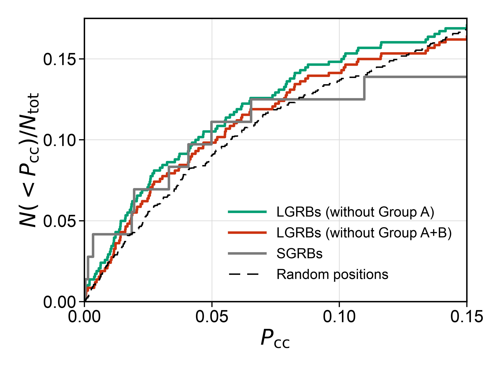
图注：Figure 4 : Normalized cumulative distribution of chance coincidence probabilities, $P_{\rm cc}$ , for low redshift ( $z\lesssim$ 0.35) galaxy associations.
The green curve shows the full Swift LGRB sample without direct redshift measurements, whereas the red curve shows the same sample after excluding Group B bursts. The grey curve shows the SGRB distribution.
The results from random sky positions are shown by the dashed line.
At low $P_{\rm cc}$ , the GRB samples show an excess relative to random positions, indicating that some associations are likely physical. At larger $P_{\rm cc}$ , the GRB and random distributions become increasingly similar, suggesting that chance alignments dominate.
对应解读：宿主偶合检验
入选理由：比较GRB与随机位置的偶合概率分布；低概率处的总体超额才支持真实关联。
来源与置信度：arXiv HTML；source verified；https://arxiv.org/html/2609.20787v1/Fig/npcc_new.png
图7
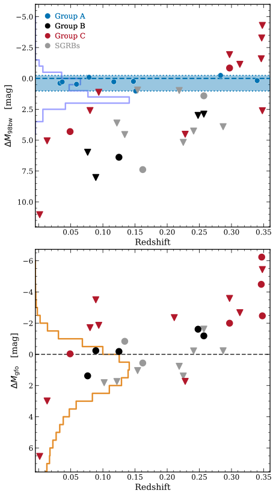
图注：Figure 7 : Constraints on the supernova (top) and kilonova (bottom) emission for our sample of nearby GRBs.
Measurements are compared to the template lightcurves of SN1998bw [ 31 ] and AT2017gfo [ 33 , 3 , e.g., ] .
The blue shaded band shows the dispersion of Group A bursts.
For each burst, only the tightest constraint is reported.
Downward triangles are upper limits.
The histogram reports the relative brightness distribution for a sample of stripped-envelope SNe from Prentice et al. [154] in the upper panel and for the
kilonova model grid of Wollaeger et al. [201] in the lower.
对应解读：超新星/千新星上限
入选理由：同一静止系时刻与波段的模板比较，用于区分深限制和跟踪不足。
来源与置信度：arXiv HTML；source verified；https://arxiv.org/html/2609.20787v1/SNKNconstraints.svg
图10
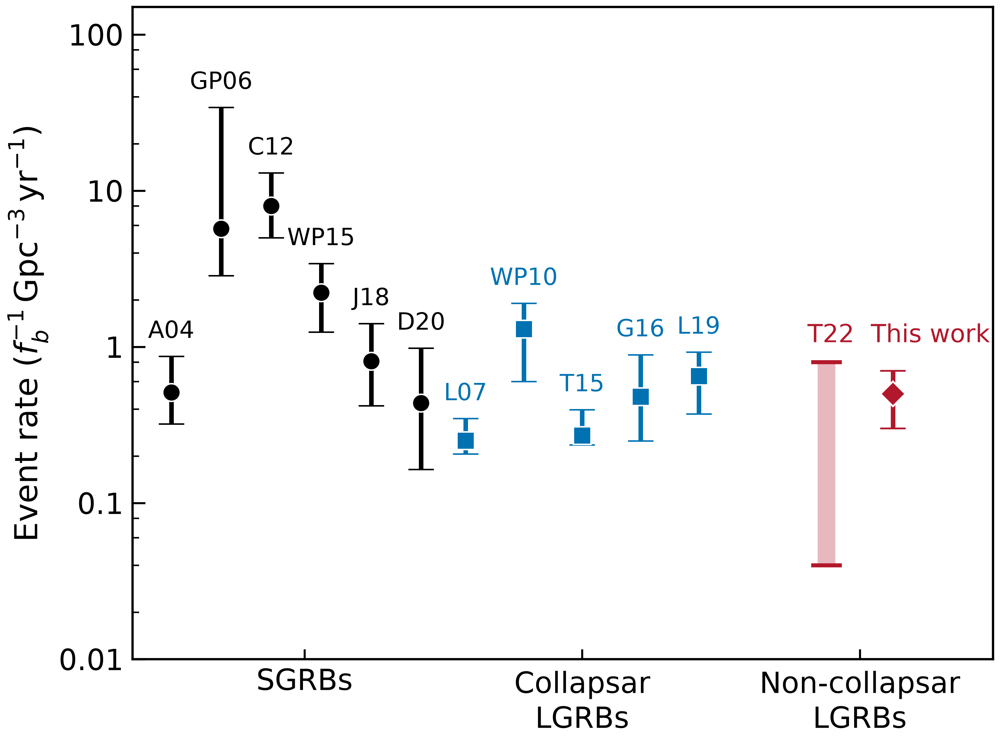
图注：Figure 10 : Event rate estimates for SGRBs (black circles), collapsar LGRBs (blue squares), and non-collapsar LGRBs (red diamond),
not corrected for the unknown beaming factor $f_{b}$ .
All rates are renormalized to a common minimum peak luminosity of $L_{\min}\approx 10^{50}\,{\rm erg\,s^{-1}}$ .
Literature values are taken from: Ando 7 (A04); Guetta and Piran 74 (GP06); Coward et al. 35 (C12); Wanderman and Piran 197 (WP15); Jin et al. 85 (J18); Dichiara et al. 43 (D20); Liang et al. 109 (L07); Wanderman and Piran 196 (WP10); Tan and Wang 182 (T15); Graff et al. 70 (G16); Lan et al. 99 (L19); Troja et al. 191 (T22).
对应解读：未束射修正发生率
入选理由：各类率先统一最低光度；不能把图中表观率直接当作内禀并合率。
来源与置信度：arXiv HTML；source verified；https://arxiv.org/html/2609.20787v1/Fig/grbrate.png
强相关工作
SN1998bw和AT2017gfo在本文中分别充当超新星和千新星的亮度—时间参照；它们不是所有事件必须精确复现的标准模板。一个限制低于前者只排除同等明亮的对应体，并不能排除所有更暗坍缩事件。
与短暴宿主研究相联系的是偶合概率和随机位置校准，与Swift/BAT种群研究相联系的是触发选择与可见体积。讨论双星并合前身时，还需另考虑喷流角度和电磁可见比例。检索关键词为SN-less long GRBs、host chance coincidence、BAT trigger simulation，具体原始引文可从本文参考文献进入。
同一事件 / 同类源线索：
相似工作：
（未提供）
基础理论 / 方法工作：
（未提供）
相反观点 / 张力线索：
（未提供）
2. Investigation of magnetic-field effects on photomultiplier tubes for the first Large-Sized Telescope of the Cherenkov Telescope Array Observatory
- 来源：arXiv / astro-ph.IM
- 链接：https://arxiv.org/abs/2609.19633v1
- 作者：Yukiho Kobayashi, Dai Tateishi, Yuji Sunada, Takuto Kiyomoto, Nobuaki Sasaki, Kazuki Abe, Franca Cassol, Shuichi Gunji
- 评分：novelty 8/10，importance 9/10，relevance 10/10，final 10.00/10
- 推荐理由：LST-1现场标定与实验室磁场测量相互验证PMT增益方向依赖，直接关系IACT标定和系统误差。
中文题目：LST-1 的地磁增益变化：分开 PMT 增益与过剩噪声因子
做了什么：LST-1 不同指向的现场标定与五只 PMT 的实验室扫描共同支持地磁效应。现场最大增益变化约0.7%，过剩噪声因子变化约0.5%，均小于本文相机总标定误差预算。
为什么重要：望远镜转动会改变光电倍增管相对地磁场的方向。若把所有电荷宽度变化都归于增益，可能把倍增噪声变化混入标定常数。
理论 / 观测 / 仪器方法价值：单光电子与多光电子测量提供相互独立的响应分解；逐管差异也解释了为何不能只用均值的统计误差比较现场与实验室。
为什么应该关注：对LACT及其他IACT，值得借鉴局部PMT坐标、正反向磁场扫描和制造批次检查；本文数值不能直接移作其他管型的误差。
展开详细解读：文章讲解、背景、理论、重点章节、图表与相关工作
文章详细讲解
科学问题：同一台相机为什么随指向改变响应？
LST-1转动时，1855只光电倍增管（PMT）相对地磁场的方向也会改变。PMT内刚发射的电子能量低，磁场可改变它们到达第一倍增极的位置，进而改变后续倍增。难点是现场的电荷均值—方差标定并不直接测量纯增益，而是把平均增益与单光电子输出的展宽混在一起。论文要回答：观测到的微小指向依赖是否来自地磁，以及究竟是哪一个响应量在变。
作者怎么做：现场相关性加实验室控制变量
现场选取三个天顶角、四个方位角及连续转动过程，每组采集超过一万次闪光和基线事件。作者用IGRF地磁模型，把场投影到由倍增极几何确定的PMT局部坐标，比较相对增益与各场分量。随后用Helmholtz线圈扫描五只同型号PMT：多光电子测量复现场标估计量，单光电子谱则独立给出平均输出电荷与谱宽，使增益和噪声因子能够分开。
关键结果：两种变化部分抵消，现场效应约千分之七
最敏感方向的现场斜率为0.091±0.001每毫特斯拉，实验室多光电子均值为0.066±0.002。单光电子测量显示真增益相对斜率约0.13，过剩噪声因子平方的斜率约−0.07；两者相加接近0.06，解释了为何多光电子方法看到的变化更小。结合约0.039 mT的地磁场，指向翻转的增益全幅约0.7%，噪声因子变化约0.5%，低于论文讨论的相机总标定误差预算。
局限和下一步：不能把均值误差当作管间一致性
五只实验室PMT的斜率约分布在0.032–0.111之间，因此两个均值旁很小的统计误差，不代表所有PMT具有相同响应。本文建立的是LST-1所用管型与装置下的解释，不能把0.7%直接指定为LACT或其他相机的系统误差。可迁移的是测试方法：定义局部磁场坐标，分开增益与倍增展宽，并检查高压、屏蔽和制造批次的影响。
关键结果是怎么做出来的
第一步：把方向效应改写为可检验的物理变量
望远镜方位角只是指向标签，真正影响电子轨迹的是PMT内部坐标下的磁场分量。图2因此把相对响应对局部磁场作图；多组指向落在同一趋势上，比“不同方向响应不同”更有诊断力。归一化消去了绝对增益尺度，但没有消去各管对场的敏感度差异。
第二步：用实验室测量解除估计量的混合
多光电子输出的方差既受光电子数涨落影响，也受每个光电子倍增的宽度影响。现场若固定噪声因子，就只能得到二者组合。图7用单光电子谱将它们拆开：增益上升而噪声因子下降，两项抵消后与多光电子斜率相符。这是支持磁场解释的核心证据。
第三步：从斜率换成真实观测范围内的偏差
每毫特斯拉的变化不能直接与百分比误差预算比较。局部投影从负地磁场变到正地磁场，线性估计要乘以两倍场强；0.091×2×0.039约等于0.0071，即0.71%。这个数是方向变化的全幅，不是斜率拟合的统计不确定度。
第四步：核对统计误差与总体离散度
0.091±0.001和0.066±0.002中的误差来自拟合，图3及逐管实验却显示明显管间散布。判断现场与实验室是否相容，应同时考虑这种散布与实验条件，不能仅将两个均值之差除以统计误差后宣称模型失败。
展开背景、理论、公式、模型、章节和图表导读
背景知识
光电子到达第一倍增极后级联放大。即使入射光子数服从Poisson分布，单光电子输出电荷仍有展宽，因此输出方差超过固定增益的理想值。地磁场主要偏转早期低能电子轨迹；屏蔽、倍增极几何和高压会共同影响实际响应。
IACT接收到的是空气簇射短暂发出的切伦科夫光。相机电荷需要换算成光电子数，再用于重建簇射强度与能量；若响应随指向变化而未校正，就可能在不同天区或观测时段引入相对偏差。
PMT增益描述一个光电子平均得到多少输出电荷；噪声因子描述同样一个光电子的输出有多分散。这两个量可以朝不同方向变化，因此“电荷谱变宽”不必然表示平均增益变大。
地磁本身并不随望远镜转动，但它在PMT局部坐标中的投影改变。各倍增极排列有方向性，所以先定义内部坐标，再看磁场分量，比直接把响应拟合为方位角函数更容易解释和迁移。
基础理论 / 方法脉络
过剩噪声因子法使用电荷均值与方差，实际测到的有效增益包含倍增统计。单光电子谱约束单次输出分布的前两阶矩，才可解除真增益与噪声的混合。注意原文式(1)的系统起伏系数B并非外加磁场，不能因为符号相似就混用。
设闪光产生的光电子数为Poisson变量，输出电荷则是随机个数的随机单光电子电荷之和。总方差既含光电子数涨落，也含单次倍增展宽；这就是单靠均值和方差不能直接拆开两个响应的原因。
基线有自己的电子噪声，必须从总方差扣除；闪光强度也可能额外起伏，在高光强下形成与均值平方有关的项。若漏掉这些项，会把读出或光源变化误归给PMT磁响应。
实验室单光电子测量以更低光强分离基线和一光电子分量。它约束的是电荷分布而非天体通量，因而可以控制外加磁场验证因果；但装置高压、照明区域与相机实际条件仍需匹配。
公式与推导
从单光电子分布到现场估计量
以下先用复合Poisson模型解释标定原理，再接回论文式(1)、(2)、(4)、(5)。令光电子数N的均值为λ，每个光电子输出电荷均值为G、方差为σ²G。扣除基线后的平均电荷为
当闪光事件之间没有额外强度涨落时，全方差公式给出
第一项来自光电子数的Poisson涨落，第二项来自倍增本身。因此定义
若闪光还有相对强度涨落B，则会额外产生B²q²的方差。论文现场估计量相应为
这里特意以F₀²表示标定时使用的固定标称值，以区别PMT真正随磁场改变的F²；B是光强系统涨落参数，不是磁场。因而论文式(4)的比例关系是G_F正比于GF²。
为什么两种响应的斜率可以相加
用小写b代表外加磁场，小变化的对数微分给出
这是从比例关系得到的教学推导。实验室约0.13与−0.07每毫特斯拉相加约0.06，解释了多光电子估计量为什么比真增益的变化小。现场场强约0.039 mT，若相关投影扫描正负两端，则线性全幅近似为
所以约0.7%是指向变化导致的效应量，并非拟合统计误差。Helmholtz线圈中心的理想场为
其中N为每线圈匝数、I为电流、r为半径，μ为介质磁导率。它说明如何控制扫描变量，实际场仍需磁强计验证；非理想几何和环境地磁属于独立系统误差。
模型拟合 / 应用方法
单光电子模型叠加基线、单光电子、双光电子分量，按Poisson权重组合并与基线卷积。作者利用拟合协方差扰动参数，在允许的拟合优度范围内求响应变化。五只管不是相机总体的大样本，复用时还需检查光强、高压、采样和屏蔽。
拟合前需对相同磁场设置提取基线、均值和方差，检查闪光强度漂移是否与扫描顺序相关。用相对增益对局部场作线性拟合，只在测试范围内解释斜率，不能把小场结果任意外推。
对单光电子谱不能只量两个峰的距离：基线卷积、多光电子少量污染以及单光电子形状都会影响增益和方差。参数协方差应传播到噪声因子及其磁场斜率，而非各参数误差简单相加。
实际相机应用可按PMT分组比较，再测试采用平均修正是否已足够。本文效应小于总预算，因此不意味着每次观测必须增加复杂校正；它首先给出了量级和可验证的系统误差来源。
重点章节 / 结果段落怎么读
标定定义：§2.2。 先辨清基线扣除、增益估计量和过剩噪声因子，尤其不要把式中的光强涨落B与磁场混用，否则后面的斜率比较失去物理意义。
现场结果：§2.4及图2、图3。 看磁场如何从地面坐标转到PMT坐标，再比较平均响应与逐管散布；两个图回答的分别是趋势与总体一致性。
实验室拆分：§3.2–3.3.2。 对照多光电子和单光电子测量条件，追踪图7两项相反的变化怎样还原图6的有效增益趋势。
误差与模型：附录D及A/B。 电荷谱模型决定真增益和谱宽，其他磁场分量、相机位置检查则限制解释能否推广到整个相机。
建议重点查看的图表
图2：现场增益与局部磁场。 看归一化增益的斜率，横轴是PMT局部场分量，不是望远镜方位角。
图7：真增益与过剩噪声因子。 两种响应方向相反，其相对变化相加才与多光电子估计量对应。
其他应联读的诊断： 图2建立现场磁场斜率；图3显示逐管与批次散布；图6比较实验室多光电子响应；图7分开增益与噪声因子，表1汇总斜率。
关键图表逐图导读
图2：现场相关性。 横轴是局部磁场分量，纵轴是归一化增益。不同指向不是各自独立的物理机制，而是同一地磁投影的不同取值；看数据是否沿共同趋势变化，再读拟合斜率。归一化使绝对增益不可直接从图中恢复。
图7：分解响应。 对相同外加磁场，真增益与过剩噪声因子向相反方向变化。两项相对斜率相加才对应多光电子方法的组合量；不能只挑较大的真增益变化作为相机最终偏差。
联读图3、图6和表1。 图3的逐管散布揭示总体差异，图6给实验室多光电子结果，表1汇总斜率。现场和实验室均值旁的小误差条不能代替管间散布。
论文原图 / 可嵌入图片
图2
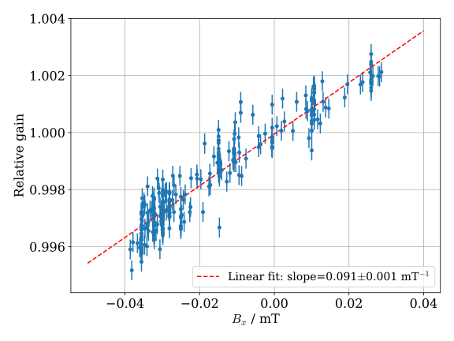
图注：Figure 2: Dependence of the pixel-averaged PMT gain on the expected x-component of the geomagnetic field experienced by the PMTs. The average PMT gain is normalized at $B_{x}=0$ . The red dashed line indicates a linear fit to the data. The error bars represent statistical error only.
对应解读：现场增益与局部磁场
入选理由：看归一化增益的斜率，横轴是PMT局部场分量，不是望远镜方位角。
来源与置信度：arXiv HTML；source verified；https://arxiv.org/html/2609.19633v1/RelGainVsBx.svg
图7
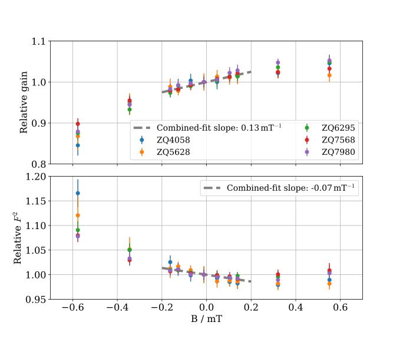
图注：Figure 7: Dependence of the PMT gain, $G$ , and the excess noise factor, $F^{2}$ , on the magnetic field strength obtained from the SPE measurement. Both quantities are normalized to the values obtained with no magnetic field applied by the coils. The gray dashed lines indicate linear fits to the data between $-0.2$ mT and $0.2$ mT using all PMT samples.
对应解读：真增益与过剩噪声因子
入选理由：两种响应方向相反，其相对变化相加才与多光电子估计量对应。
来源与置信度：arXiv HTML；source verified；https://arxiv.org/html/2609.19633v1/SPEvsB.svg
强相关工作
这篇工作位于IACT相机标定与PMT电子光学的交界。与H.E.S.S.、MAGIC和VERITAS的联系在于共同使用指向随观测改变的光电探测器；与LST既有相机工作相比，新增价值是把此前的指向依赖进一步归因到局部磁场，并拆分增益与倍增噪声。
基础阅读应沿原文§1–2中的PMT、相机读出和过剩噪声因子标定文献展开。对LACT可迁移的是控制变量与误差分解方法，管型、屏蔽和读出条件不同，不能直接沿用LST-1的数值。检索关键词为PMT magnetic-field response、excess noise factor及LST-1 calibration。
同一事件 / 同类源线索：
相似工作：
（未提供）
基础理论 / 方法工作：
（未提供）
相反观点 / 张力线索：
（未提供）
3. Lepto-hadronic modeling of blazars associated with well-reconstructed high-energy neutrino events
- 来源：arXiv / astro-ph.HE
- 链接：https://arxiv.org/abs/2609.19477v1
- 作者：Leonard Pfeiffer, Margot Boughelilba, Simone Garrappa, Sara Buson, Massimiliano Lincetto, Annette Bremer
- 评分：novelty 8/10，importance 9/10，relevance 10/10，final 10.00/10
- 推荐理由：六个IceCube候选耀变体轻子强子SED及事件率建模紧扣多信使天文；可行性不能等同关联显著性。
中文题目：六个中微子候选耀变体：能量学相容不等于关联发现
做了什么：六个IceCube候选耀变体的轻子—强子模型可以描述多年平均SED。五个对象可与一个事件的Poisson计数相容，最高可探测率约0.05/年；模型可行性不等于源关联显著性。
为什么重要：弱外部辐射场仍可能在喷流共动系成为重要强子靶光子。辐射区位置和相对论变换，决定弱谱线源能否有效产生中微子。
理论 / 观测 / 仪器方法价值：把光谱对盘亮度、黑洞质量的限制与级联电磁辐射结合，可约束隐藏强子分量，而不只是提高质子功率拟合单个中微子。
为什么应该关注：适合与Fermi光变关联研究配合阅读。应分开长期能量学、事件时刻活动和背景关联检验，不能将三者互相替代。
展开详细解读：文章讲解、背景、理论、重点章节、图表与相关工作
文章详细讲解
科学问题：候选耀变体能否负担所需中微子？
IceCube事件方向附近出现耀变体，并不意味着它一定是中微子源。强子产生中微子时也会引发电磁级联，过多质子功率可能把X射线或伽马射线辐射推得过高。本文检验六个候选源是否存在同时满足宽带谱能量分布（SED）和中微子产额的物理参数，而不是重新测量一次空间关联显著性。
作者怎么做：样本筛选加统一辐射模型
从394个事件出发，经过149个良好重建事件、18个候选关联，再得到六个用于建模的源。作者结合光谱给出的黑洞质量和吸积盘限制，构造多年平均SED，用轻子—强子模型同时计算电子辐射、质子相关过程和次级级联。即使可见谱线弱，外部光场在喷流共动系中仍可能成为重要相互作用靶场。
关键结果：多数源在计数层面可以相容
模型可以描述六源的平均电磁SED，其中五个与一个探测事件的Poisson计数区间相容。最有利源4FGL J1258.7−0452的可探测率仍仅约0.05/年，因此单次事件相容不表示预期必然看到一个。图2显示电磁成分怎样限制强子分量，图3的冷却与逃逸时间则解释不同源为何中微子效率不同。
局限和下一步：平均SED没有解决事件时刻问题
非同时的多年平均数据可能抹平耀发；中微子到达时的状态需要另行用同期光变和SED检验。遗传优化还偏向较高的中微子输出，因此所得最佳点不是所有参数的后验分布，更不能当作发现概率。继续推进需要时变建模、背景关联检验，以及足够长曝光后的计数预测共同约束。
关键结果是怎么做出来的
数据：六个对象不是完整无偏耀变体样本
筛选先依赖中微子重建质量和方向关联，再依赖源信息能否支持建模。由这六个源得到的比例不能直接外推到全部耀变体。吸积盘和黑洞质量约束非常重要，因为它们限制靶光子场以及可接受的喷流能量预算。
模型：提高质子功率会同时改变电磁输出
光强子过程产生中微子的同时产生高能光子和电子对；级联会把能量重新分配到可观测波段。图2必须逐项比较蓝色轻子成分、紫色质子相关级联和总模型，尤其检查X射线及高能端，不能只看中微子预测是否足够高。
计数：把通量折叠成IceCube预期数
谱预测需与能量及方向相关的有效面积折叠，再乘以曝光时间，才得到预期事件数。五个源与一个事件的区间相容只是Poisson计数检查；在低预期数下，一个事件可以发生但并不常见。该问题与“天空背景会产生多少偶合”属于不同统计检验。
证据边界：优化点与模型概率分开
偏向最大化中微子通量的搜索回答“能否找到可行参数”，不回答“这种参数在先验与数据下有多大后验质量”。附录多频光变标出了事件到达时间，提醒读者再核对同期活动；长期平均SED相容尚不足以建立时间关联。
展开背景、理论、公式、模型、章节和图表导读
背景知识
质子与光子作用产生π介子，中微子与电磁次级粒子共享同一强子能量预算。增加质子数也会增强级联，可能首先被X射线和伽马观测排除。BL Lac的弱谱线仍可给外部光子场有用限制。
耀变体的喷流接近视线，相对论增亮使它成为伽马亮源；但其高能辐射既可能主要由电子产生，也可能含质子过程。仅有伽马射线亮度并不能确定中微子产额，需要知道粒子和靶光子分布。
电子同步辐射与逆康普顿通常解释宽带SED的两个主要隆起。质子与光子作用可产生介子并衰变成中微子，同时伴随电磁级联，所以X射线和伽马资料会间接限制隐藏的强子功率。
平均SED是许多不同时间的测量拼合，适合讨论长期能量预算，却可能不是中微子到达时的真实状态。事件关联研究应区分空间重合、时间共变和能量学可行性，三者相互补充而不能互相替代。
基础理论 / 方法脉络
单区等离子体模型计算同步、逆Compton、光强子及次级级联。多年平均减少频繁采样波段的权重失衡，却掩盖短暂耀发。所谓近等分是模型内粒子与磁场能量密度关系，不是全部粒子成分严格等分。
光强子效率取决于质子在辐射区停留多久以及相互作用时间有多短。即使质子能量很高，若很快逃逸或靶光子太少，也难以产生可观的中微子通量，图3正用于比较这些时间尺度。
外部光场从AGN静止系变换到喷流共动系后，其能量和能量密度都会改变。因此可见谱线弱不必然意味着靶场无关；辐射区相对宽线区的位置以及喷流运动决定了实际效率。
级联让原本极高能光子的能量转移到较低波段，限制不能只施加在最高能数据点。增大质子归一化可能首先违反X射线数据，这也是联合电磁模型能约束中微子输出的原因。
公式与推导
下面是解释模型的背景关系，并非补造论文编号。逃逸与能损竞争可近似写为
实际多过程计算需数值求解。探测数必须通过能量和赤纬响应积分：
不可将SED峰值直接乘单个面积。若平稳率0.05/年持续十年，教学估算给 $\mu=0.5$，于是
它是源模型成立条件下的计数概率，还没有加入大气背景、全天候选数和事后选择，因此不是关联p值。
为什么一个可行通量不等于一个关联发现？ 在已折叠响应得到预期信号数μ之后，计数本身满足
于是至少探测一次的概率为
若取最高基准率约0.05/年，假设一年内率稳定且忽略背景，则μ约0.05，至少一次的概率约4.9%。这是解释量级的示例，不是论文对某个事件给出的关联p值；真实曝光要使用该源的方向、能谱和有效观测时间。
产额为什么受限，还可用竞争时间的教学近似理解：
粒子有效停留时间为tres，相互作用时间为tpγ；效率小时近似为二者之比。尺寸、外部靶场和相对论变换会改变这两个量，图3展示的正是哪些能量下冷却或逃逸占主导。与此同时，增加质子注入也增加级联辐射，需要满足图2的电磁限制。这个效率式是单过程、固定环境的直觉模型，完整谱求解还包括其他损失及粒子耦合。
模型拟合 / 应用方法
适用频段按对数频率宽度0.1分箱并传播误差。遗传算法最小化对数空间代价，同时加入中微子输出条件；一源必须放松该条件。阅读表3时应一起检查喷流功率、残差、自由度与事件率，不能只看曲线穿过数据。非同时性和模型简并仍显著。
先用电子成分和盘信息限制SED主体，再考察质子谱、功率与辐射区参数能否提供中微子。磁场、尺寸、多普勒因子和粒子归一化存在退化，应同时检查物理功率而非只比曲线残差。
非同时数据散布不应全部视为测量高斯误差。若一个波段经历强烈时变，长期平均点与其他时段的点可能不属于同一状态；对事件时刻的研究需重建同期数据集，而非强行压小拟合误差。
把模型谱折叠到方向相关有效面积后报告预期计数，再分别讨论Poisson区间及背景关联概率。当前优化选择偏向大中微子通量，应将结果称为可行解或基准解，不称为后验最可能的唯一模型。
重点章节 / 结果段落怎么读
样本与源性质。 先跟踪394→149→18→6的筛选，明确哪些事件、定位和源信息限制了最终样本，再用表2和图1理解吸积区间与黑洞质量约束。
辐射模型与§4.3。 看粒子注入、辐射区和逃逸假设，特别是外部光场如何变换到共动系；这是理解弱谱线源仍能产生中微子的关键。
主结果图2、图3。 先看SED成分与电磁限制，再看各过程时间尺度，避免将一个高质子功率的可行点误当作自然高效率源。
比较与附录光变。 图4给出与更大耀变体样本的能量学比较，附录标出中微子到达时刻。后者用于判断长期平均模型与瞬时状态是否一致，不能省略。
建议重点查看的图表
图2：六源SED与中微子模型。 区分电子辐射、强子级联和总辐射，检查质子功率是否被电磁数据约束。
图3：冷却与逃逸时间。 比较同一能量下各过程时间尺度，解释中微子产生效率，而非只看SED拟合好坏。
其他应联读的诊断： 图2联合呈现轻子、强子级联和中微子预测；图3比较能损与逃逸时间；表3给逐源事件率，附录A.2展示最高预测源的光变。
关键图表逐图导读
图2：六源最佳SED解。 横轴跨多个光子能段，纵轴表示谱能量分布；蓝色轻子、紫色质子相关级联与灰色总模型分开。先检查每个波段是否被同一个模型兼容，尤其是强子级联容易贡献的X射线区。多年非同时点的散布不能全部解释成统计误差。
图3：粒子时间尺度。 在同一粒子能量处，较短时间表示相应过程更快；绿色逃逸线与电子、质子损失曲线的交点帮助判断能量会先辐射还是先逃出。不能跨不同粒子种类的能量轴随意比较效率，也不能只看一个最低时间点代替积分后的中微子谱。
附录的事件时间标记。 模型适用的平均状态要与事件所在时段对照；事件到达恰在一个观测空档时，不能补画出未测到的耀发。
论文原图 / 可嵌入图片
图2
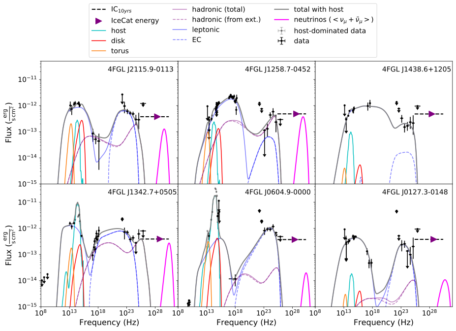
图注：Figure 2 : Lepto-hadronic best-fit solutions. The total emission is given by the gray line. We show the leptonic emission in blue, while the purple line shows the proton-initiated cascade emission (i.e including proton synchrotron emission and the synchrotron and inverse-Compton emissions of secondary particles from photon annihilation, Bethe-Heitler pair production and photo-pion pair production). The external-Compton (EC) component is highlighted with the dashed blue line, and the hadronic contribution originating from the interactions with the external photon fields is shown as a dashed purple line. The disk, torus, and host galaxy emissions are shown in red, orange, and cyan respectively. The muon and anti-muon neutrino flux is given by the pink curve, and compared to the 10-year IceCube sensitivity for each source (at its own declination). The estimated neutrino energy from the IceCAT catalog for each event is represented by a right-ward triangle (see text for a discussion on the neutrino peak energy).
对应解读：六源SED与中微子模型
入选理由：区分电子辐射、强子级联和总辐射，检查质子功率是否被电磁数据约束。
来源与置信度：arXiv HTML；source verified；https://arxiv.org/html/2609.19477v1/lepto-hadronic_EC_highlighted_host_nogrid.svg
图3
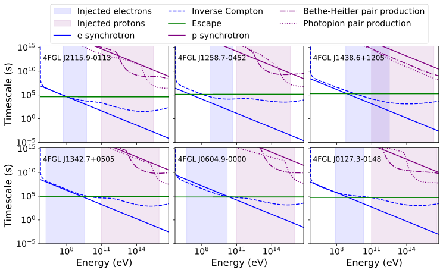
图注：Figure 3 : Loss timescales for the different processes concerning the primary particles (electron loss processes in blue and proton loss processes in purple). The escape timescale is represented by the green line, and is energy independent (see Section 4.3 ). The synchrotron, the inverse-Compton, the Bethe-Heitler pair production and the photo-pion pair production are shown with the solid, dashed, dash-dotted and dotted lines, respectively. The shaded areas indicate the range of energy at which the primary electrons and protons are continuously injected.
对应解读：冷却与逃逸时间
入选理由：比较同一能量下各过程时间尺度，解释中微子产生效率，而非只看SED拟合好坏。
来源与置信度：arXiv HTML；source verified；https://arxiv.org/html/2609.19477v1/timescales.svg
强相关工作
本文与大样本耀变体轻子—强子建模相连，原文将六源的粒子功率和重子负载与Rodrigues等研究的324源样本比较；这种比较帮助判断参数是否异常，却不提供事件空间关联的背景概率。
基础脉络包括电子同步辐射、逆康普顿、光强子相互作用及电磁级联。与时间关联工作相比，这里主要解决多年平均能量学可行性；下一步需要事件同期光变和独立背景检验。检索关键词为blazar lepto-hadronic SED、baryonic loading、IceCube effective area，原文附录与参考文献给出具体入口。
同一事件 / 同类源线索：
相似工作：
（未提供）
基础理论 / 方法工作：
（未提供）
相反观点 / 张力线索：
（未提供）
4. Systematic Effects of Hydrogen and Helium Atmosphere Mismatch on Radius Inference in PSR~J0740+6620-like Synthetic NICER Data
- 来源：arXiv / astro-ph.HE
- 链接：https://arxiv.org/abs/2609.20795v1
- 作者：Isiah M. Holt, M. Coleman Miller, Alexander J. Dittmann, Frederick K. Lamb
- 评分：novelty 8/10，importance 9/10，relevance 9/10，final 9.70/10
- 推荐理由：NICER大气成分错配可能在可接受残差下偏置半径；直接影响致密物质推断，需区分现有背景水平与高信背比模拟。
中文题目：NICER大气错配：残差可接受时，半径仍可能有偏
做了什么：PSR J0740+6620式合成数据在现实信背比下对H/He错配较稳健；总计数固定而热点占比提高后，错误大气可以偏置半径，同时保留可接受的拟合优度。
为什么重要：质量半径推断最终用于致密物质状态方程；本研究直接说明拟合残差合格并不等于物理参数无偏。
理论 / 观测 / 仪器方法价值：双向注入、固定总计数及模型证据比较，将几何参数补偿、大气成分可辨识性和半径偏置分开，为未来高信背比中子星观测提供系统误差检验方法。
为什么应该关注：适用于NICER及其他反演任务：残差、参数覆盖和模型证据是三个不同检验，不能只检查第一项。
展开详细解读：文章讲解、背景、理论、重点章节、图表与相关工作
文章详细讲解
科学问题：拟合看起来不错，半径就可信吗？
NICER通过脉冲随相位和能量的形状推断中子星质量与半径。氢、氦大气的角向辐射不同，可能被热点大小、位置和引力光弯曲部分补偿。因此一套错误大气也可能拟合出很小残差，却把半径推错。本文用已知真值的合成数据把这两件事拆开检验。
作者怎么做：双向注入，再改变信背比
设置类似PSR J0740+6620的几何与参数，分别用氢、氦大气生成数据，再各用正确和错误大气拟合。合成数据固定总计数约55万，划分94个能道和32个相位箱，改变热点相对背景的贡献，并放开12个模型参数。由于总计数固定，热点倍率增加主要是在改变信息构成，不能简单理解为曝光增加60倍。
关键结果：大气错配具有不对称偏置
现实背景占比较高时，两种大气的脉冲差异被稀释，半径推断相对稳健；热点占比较大时，氢数据用氦大气拟合可明显偏向更大半径。反向错配趋向较小半径，但在所测试倍率下偏置较弱。图4、图5显示某些错误模型后验已远离注入半径，而最大似然残差仍可接受。
局限和下一步：这是受控模拟，不是重测真实恒星
每个设置采用一份Poisson实现，不能据此得到完整的重复实验覆盖率。证据比还依赖先验范围与采样收敛。论文说明提高信背比后需更认真处理大气系统误差，而非已经推翻真实J0740的某个半径测量；后续应扩大真值、几何、大气模型和噪声实现的范围。
关键结果是怎么做出来的
物理差别：从图1的临边变暗开始
图1将各能量的强度除以正出射强度，突出角分布而非绝对亮度。氦大气在擦边方向保留更多辐射，氢大气临边变暗更强。星体转动会把不同出射角映射到不同相位，因此即使总计数相同，脉冲形状也可能含有成分信息。
数据差别：背景稀释与总曝光分开
现实设置下热点调制只占总信号几个百分点，H与He的分数调制约0.034和0.033；在60倍热点设置约为0.484和0.471。增强差异来自源与背景的比例变化，而总计数仍固定。背景越少，角分布差异越容易显现。
参数偏置：直接对照已知注入点
图4紫色点标出约13.82 km、2.067太阳质量的注入值，蓝色是正确大气后验，橙色为错配结果。比较的是注入点在后验中的位置，不是两条曲线肉眼是否重叠。1σ、2σ在此表示可信区域，不能转写为一次天体探测的显著性。
诊断：残差、覆盖和模型证据各问一件事
残差回答模型能否描述计数，注入值位置回答参数是否偏离真值，证据还惩罚可用参数体积。三个诊断不等价。附录增加采样量并用链演化检查稳定性，降低数值伪偏置的可能，但仍不能替代跨噪声实现的覆盖率研究。
展开背景、理论、公式、模型、章节和图表导读
背景知识
氢与氦大气有不同临边昏暗，改变脉冲轮廓；引力弯曲和热点几何也能改变轮廓，因此物理参数可能吸收辐射模型误差。强背景会掩盖成分差异。
中子星半径联系致密物质状态方程，但望远镜并不直接分辨星面。脉冲轮廓把热点几何、引力光弯曲、相对论运动和大气出射角分布混合到同一数据中，是一个带物理模型的反演问题。
氢与氦并非只改变谱的整体颜色：角分布的能量依赖也不同。星体转动时看见的出射角不断变化，因此大气成分可以改变相位轮廓，并与质量—半径决定的光弯曲相互补偿。
高背景会稀释脉冲形状，使某些系统误差暂时不显著。未来源计数比例更高时，统计精度提升反而可能暴露模型不足；所以不能由当前低信背比的稳健性推断所有观测条件下都安全。
基础理论 / 方法脉络
固定总数下重新分配热点和背景是实验核心。Poisson似然约束相位—能道计数，而Bayesian evidence对先验范围内似然积分，区别于只评价最佳点的卡方。
光弯曲主要依赖紧致度，使更多背面区域可见，往往降低脉冲幅度。大气临边变暗也能改变幅度，但其能量依赖与几何效应不同；联合相位和能量信息是解除退化的重要来源。
模型先计算到达望远镜的光子谱，再折叠有效面积和能量重分布得到每个计数箱的期望值。背景应与源项一起进入计数似然，而不是将带噪背景相减后直接假定剩余服从简单高斯误差。
参数后验是在给定大气模型和先验下的条件分布。若模型类别错了，后验仍可很窄；窄区间表示条件精度高，不能自动证明其覆盖真实半径。这是注入—恢复检验的直接动机。
公式与推导
由原文总数与比例定义可解得
原文式(5)按模板缩放各格期望数：
式(6)为略去数据常数后的Poisson对数似然：
式(8)(9)给模型证据比较：
半径偏差看注入值在后验中的分位，不是由卡方p值换算。文中2σ指后验可信区间约定，不能当作新天体发现显著性。
把物理轮廓与参数偏置联系起来。 对每个能道和相位箱，响应折叠后的源期望与背景相加才是计数模型。观测计数的标准诊断可写为
零计数项取极限。该式衡量模型对计数的描述，不直接衡量半径是否接近真值。给定大气类别A，参数后验为
错误A也可能通过调整热点几何得到较高似然，所以小残差与偏置后验并不矛盾。质量半径通过紧致度
影响光弯曲，但大气角分布也改变相位调制，二者由此部分退化。注入检验知道真实R，因此可直接查看其后验分位。文中“2σ区域外”是给定模型下的可信区域判断，不能当作一次发现检验；证据ZA还依赖先验体积，需连同采样收敛说明。
模型拟合 / 应用方法
pocoMC求后验与证据，附录增加有效样本量并接emcee检查半径分位稳定性。每个比例的一次Poisson实现不等于重复覆盖率实验；先验、背景和热点几何仍限制外推。
正确与错误大气必须使用可比的数据、响应、背景处理及先验，才能把差别归于大气。对H生成/He拟合和He生成/H拟合两个方向分别运行，可揭示偏置不对称，不能仅测试一种方向。
每个设置同时查看最大似然残差、二维质量—半径后验、注入值分位和证据。残差小而注入值在区间外是本文要强调的情形，不能因为拟合优度合格就结束系统误差审计。
采样量加倍、链轨迹及独立采样检查可帮助排除后验未收敛。更全面的验证仍需多份Poisson实现和不同几何真值；单次注入偏置不能直接解释为长期重复实验的覆盖率。
重点章节 / 结果段落怎么读
模型与表1。 先列出质量、半径、热点和观测几何参数，确认12个拟合参数哪些固定、哪些放开；已知注入真值是全文判断偏置的基准。
大气与合成数据部分。 图1解释H/He临边变暗差异，图2、图3解释背景稀释。牢记总计数固定，热点倍率改变不能当作相同信背比下增加曝光。
后验与最大似然诊断。 图4、图5对照真值和错配结果，表格再检查残差与证据。参数可信区间、拟合优度和模型比较需要分别阅读。
附录收敛检查。 增加有效采样量和检查链稳定性能排查数值问题，但无法替代多次噪声注入和更广几何范围的覆盖率试验。
建议重点查看的图表
图1：大气角分布。 氢与氦的临边变暗不同，是脉冲形状和半径偏置的物理起点。
图4：质量—半径后验。 对照紫色注入点、正确大气与错配大气，区分参数偏置与拟合残差。
其他应联读的诊断： 图1看角向辐射；图4、5看真值与错误后验；图6、7比较两个错配方向；表4、5看拟合优度，附录图8–10看采样。
关键图表逐图导读
图1：角向出射强度。 横轴μ为出射角余弦，μ=1表示法向，μ接近0表示临边。各曲线除以法向强度，因此主要展示角分布而非绝对温度亮度；同能量下氦在临边保留更多强度，氢更明显地变暗。
图4：质量—半径联合后验。 蓝色是正确大气，橙色是错配，紫色点为注入真值。上下两排对应两个注入方向，不能混着读；从现实背景到较大热点倍率，比较真值是否仍位于可信区域。轮廓面积变小不代表准确度提高。
联读图5与诊断表。 一维半径后验便于判断偏移方向，最大似然表则显示错误模型仍可拟合计数。二者并列才能看清“拟合好而参数错”的核心结论。
论文原图 / 可嵌入图片
图1
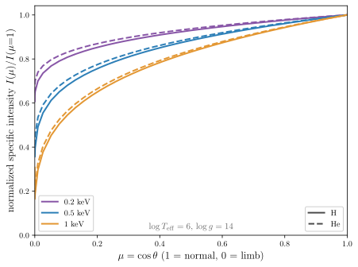
图注：Figure 1 : Emergent specific intensity as a function of emission angle (the beaming pattern) for hydrogen (solid) and helium (dashed) atmospheres at $\log T_{\rm{eff}}=6$ and $\log g=14$ . The $\theta$ in $\mu=\cos\theta$ is measured from the local surface normal, so $\mu=1$ is normal emission and $\mu=0$ is the limb. Each curve is normalized to its emission value $I(\mu{=}1)$ . Line colors denote photon energy (purple: $0.2$ keV; blue: $0.5$ keV; orange: $1$ keV). At every energy, the helium atmosphere retains more intensity towards grazing angles than hydrogen; its beaming is closer to isotropic, while hydrogen is more limb-darkened, and the limb darkening steepens with increasing photon energy.
对应解读：大气角分布
入选理由：氢与氦的临边变暗不同，是脉冲形状和半径偏置的物理起点。
来源与置信度：arXiv HTML；source verified；https://arxiv.org/html/2609.20795v1/beaming_H_vs_He.svg
图4
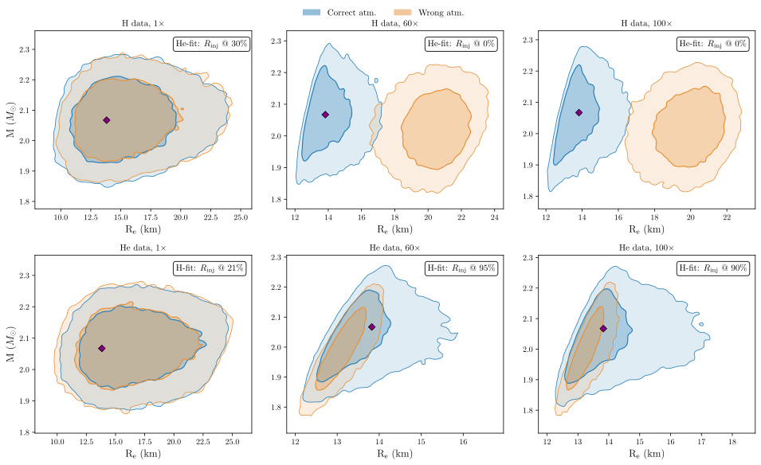
图注：Figure 4 : Mass–radius posterior distributions for selected multipliers ( $1\times$ , $60\times$ , $100\times$ ). Blue contours show the correct atmosphere fit ( $1\sigma$ and $2\sigma$ credible regions), and orange contours show the incorrect atmosphere fit. The purple diamond marks the injected values ( $R_{\rm inj}=13.82$ km, $M_{\rm inj}=2.067\;M_{\odot}$ ). Top row : hydrogen-generated data, showing the correct H fit and incorrect He fit. The percentile of $R_{\rm inj}$ in the correct H-fit posterior is 33rd, 51st, and 58th at $1\times$ , $60\times$ , and $100\times$ , respectively, confirming that the correct model recovers the injected radius without significant bias. The corresponding incorrect He-fit percentiles are 30th, 0.06th, and 0.07th, showing that the He-fit posterior is displaced to substantially larger radii at $60\times$ and $100\times$ . Bottom row : helium-generated data, showing the correct He fit and incorrect H fit. The correct He-fit percentiles are 18th, 71st, and 58th, while the incorrect H-fit percentiles are 21st, 95th, and 90th. The H-fit posterior remains closer to the truth for all three multipliers. The percentile of $R_{\rm inj}$ in the incorrect model posterior is annotated in each panel.
对应解读：质量—半径后验
入选理由：对照紫色注入点、正确大气与错配大气，区分参数偏置与拟合残差。
来源与置信度：arXiv HTML；source verified；https://arxiv.org/html/2609.20795v1/fig_showcase_MR_posteriors.svg
强相关工作
这项研究属于NICER脉冲轮廓反演的系统误差检验，联系中子星质量—半径与致密物质状态方程，但没有直接重测一个真实源的半径。其结论更适合用于规划未来更高信背比数据所需的大气模型控制。
基础方法包括相对论光弯曲、热点几何、氢氦大气辐射转移、Poisson响应折叠和贝叶斯采样。与观测半径论文比较时，要区分真实数据的背景不确定性和本文受控合成设置。检索关键词为NICER pulse-profile modeling、atmosphere mismatch、injection recovery，具体代码与大气表出处以原文为准。
同一事件 / 同类源线索：
相似工作：
（未提供）
基础理论 / 方法工作：
（未提供）
相反观点 / 张力线索：
（未提供）
5. On the Clustering Bias of Unresolved Gamma-Ray Sources
- 来源：arXiv / astro-ph.HE
- 链接：https://arxiv.org/abs/2609.19259v1
- 作者：Bhashin A. Thakore, Marco Regis, Michela Negro, Stefano Camera, Daniel Gruen, Nicolao Fornengo, Aaron J. Roodman
- 评分：novelty 8/10，importance 8/10，relevance 10/10，final 9.70/10
- 推荐理由：未分辨伽马背景与弱透镜互相关约束源偏置和宿主晕质量，直接关联漫射伽马源成分与暗物质背景。
中文题目：未分辨伽马背景：互相关约束群体加权偏置
做了什么：弱透镜与未分辨伽马背景互相关的再建模得到高红移源群体偏置约大于2，代表宿主晕质量约2×10¹³太阳质量。它是选择函数加权的群体量，不是单源称重。
为什么重要：较大的聚集偏置可解释此前模型所需的部分振幅重标定，关系到天体源背景与潜在新物理的区分。
理论 / 观测 / 仪器方法价值：后验、profile likelihood及失准AGN替代模型的比较，检验结论是否受先验体积或源类型假设主导。
为什么应该关注：对漫射伽马与暗物质研究，需先校准天体源的聚集和光度函数，不能把振幅差直接归因于暗物质。
展开详细解读：文章讲解、背景、理论、重点章节、图表与相关工作
文章详细讲解
科学问题：伽马背景为何比参考模型更强地追随物质？
未分辨伽马背景包含许多无法逐一识别的暗弱源。弱引力透镜刻画视线上的总物质分布；二者相关，说明至少部分伽马源位于相同的大尺度结构。此前模型需要较大的振幅重标定。本文问：是源发光更多，还是它们更集中在高质量暗物质晕内，因而具有更大的聚集偏置？
作者怎么做：把源光度映射到宿主质量
作者利用已有弱透镜—UGRB相关测量，引入现象学的伽马光度—宿主晕质量关系，再由质量计算大尺度偏置。将这一关系与光度函数、红移核和未分辨选择函数结合，对整个源群体加权积分。研究重点是不同晕间的两晕项，因此源的聚集位置与总发光强度共同影响相关振幅。
关键结果：偏向较大宿主可缓解振幅张力
推断的群体加权偏置约大于2，代表性宿主晕质量约2×10¹³太阳质量，倾向群或较重晕环境。放开偏置后，最佳拟合振幅由旧模型约4.2降至约2.2；这说明聚集假设可以解释部分差异，但没有消除所有源模型不确定性。表中的边缘后验中位数约3.16与最佳点不是同一统计量。
局限和下一步：群体量不等于单源质量
图2、图3给的是选择函数和通量加权后的分布，不能说“每个未分辨耀变体都住在2×10¹³太阳质量晕里”。失准AGN替代模型得到相近偏置，说明聚集推断有一定稳健性，却也表明源类型并未唯一确定。更强区分需要外部光度函数、已分辨源宿主以及能量和红移依赖共同约束。
关键结果是怎么做出来的
输入：相关函数已经测得，本文重新解释
不要把参数后验当成本文新发现一个相关信号的sigma。数据来自既有透镜与伽马相关测量；作者改变的是源的宿主与偏置模型。先固定这个问题层次，才能理解为什么同一数据在不同物理假设下需要不同振幅。
权重：哪些源对平均量贡献最多
亮但尚未被单独识别的源、某些红移范围的源和透镜核更敏感的结构贡献并不相等。平均偏置是带权积分，随红移箱而变化。图2每条分布的宽度不仅包含测量噪声，也来自光度—质量映射和其他模型参数的不确定度。
推断：振幅与偏置存在补偿
更高偏置会增强两晕相关项，因此所需额外发光振幅下降。图1的联合后验展示这种参数关系；只引用一个最佳振幅无法确定源群体。最佳点2.2与边缘中位数3.16的差别反映多维分布的几何，不能选其中一个当作另一个的修正。
稳健性：改变统计方法和源类型
图5用profile likelihood检查结论是否主要来自先验体积；附录换成失准AGN，检验群体解释的敏感性。方向接近支持偏置结论，但两套模型仍可能共享光度函数或红移分布误差。后验稳定不等于所有系统误差已排除。
展开背景、理论、公式、模型、章节和图表导读
背景知识
弱透镜描绘视线质量，UGRB描绘未被剔除的伽马辐射，两者通过源宿主与宇宙结构相关。能量阈值和源剔除规则决定参与相关的群体。
弱透镜由前景质量使背景星系形状发生微小系统偏转，提供对总物质的统计追踪。伽马图则追踪辐射强度；两图互相关说明辐射源与物质结构相联系，但仅凭相关不能分清所有发光源类别。
未分辨背景不等于纯弥散过程。大量低于点源阈值的耀变体、失准AGN及其他源会混在其中。改变点源掩膜或源的探测选择，会改变留下的群体及其平均宿主性质。
偏置描述源密度起伏相对物质起伏的增强，不是测量仪器的偏差。大质量晕通常更强聚集，所以偏置约束可转成宿主质量信息；但这一映射依赖宇宙学与晕模型，不能看作直接称重。
基础理论 / 方法脉络
两晕项的振幅同时依赖源偏置和光度函数；一晕项描述同晕内部关系。不同红移箱和能量箱有助拆解退化，却不能完全消除共同模型假设。
两晕项对应不同暗物质晕之间的大尺度相关，一晕项则涉及同一晕内部结构。若数据主要由两晕项主导，源的平均偏置尤其重要；细小角尺度中的源分布细节未必被同样强地约束。
可观测角相关是不同红移贡献的投影。透镜核、伽马能谱、吸收和选择函数共同设定权重，因此一个红移箱也不是无限薄的距离切片，不宜把其后验解释为某一精确红移处的单一物理量。
发光增强与聚集增强都会提高相关振幅，形成参数退化。多能段与多红移箱的相对形状可帮助区分，但仍需光度函数和宿主关系的外部先验；只增加一个幅度参数不能识别全部物理。
公式与推导
从物质起伏到角相关：以下是解释本文模型的标准两晕近似，不冒充原文编号公式。
在大尺度线性范围，源数密度起伏可写为
δm是物质相对密度起伏，bγ是无量纲偏置；该关系并不描述晕内部的小尺度结构。对未分辨群体，不能随意取一个源的偏置，而应按其辐射贡献平均：
Φ是光度函数，w包含所选能段通量权重与未分辨选择，M(L,z)是光度—宿主质量映射。同样定义平均质量时，将分子中的偏置换成质量：
因此平均质量不是简单把平均偏置代入一个线性关系，映射和权重都需传播。两晕交叉三维功率的简化结构为
沿视线投影，在Limber近似下可概括为
χ为共动距离，Wγ与Wκ分别包含辐射和透镜核；实际论文还处理能量、红移分箱和完整源模型。式子显示，提高偏置或提高发光权重都能增强相关信号，因而二者存在退化。对数据向量d与模型m，常用高斯协方差诊断为
这是理解联合箱拟合的背景结构。后验需要再乘先验并积分其他参数，profile likelihood则优化其他参数；两种处理产生的最佳点、中位数和区间不应混用。
模型拟合 / 应用方法
先拟合质量—光度映射和振幅，再传播到偏置及质量后验。附录改做profile likelihood并替换源模型。共同的光度函数假设仍限制外推；论文是对既有相关信号的解释，不是新一次发现sigma。
先由光度—质量映射产生偏置，再积分到实际测量的角度、能量和红移箱，与数据协方差一同计算似然。协方差中的箱间相关不能忽略，否则容易高估多箱提供的独立信息。
对每份参数样本计算群体加权偏置和宿主质量，得到图2、图3的派生后验。先取每个参数中位数再代入非线性映射，一般不等于派生量的后验中位数，应保留这一区别。
profile likelihood固定关注参数后优化其他参数，后验则对其他参数积分。比较二者可发现先验体积敏感性；替换失准AGN模型则检验源类假设，两种检验都不能覆盖所有共同的光度函数误差。
重点章节 / 结果段落怎么读
数据与投影权重。 先确认弱透镜和UGRB相关测量的能量、红移及角度分箱，知道每一测量点混合了哪些距离范围，再讨论源群体。
宿主映射与偏置。 阅读光度—质量关系和光度函数权重，辨清拟合的基础参数与派生的平均质量。质量与偏置不是两项独立直接测量。
后验与振幅。 图1看联合退化，图2、图3看派生量；结论中的最佳振幅与表1的边缘中位数要分别记录，不能挑一个替代另一个。
稳健性比较。 图5的profile likelihood检查统计处理，附录失准AGN模型检查源类型假设。共同的红移或光度函数误差仍可能保留。
建议重点查看的图表
图2：通量加权偏置。 四个透镜源红移箱对应投影权重，不应解释成四个单独耀变体的偏置。
图3：宿主晕质量。 质量分布依赖偏置—质量映射与光度函数，不是直接动力学称重。
其他应联读的诊断： 图1看参数退化，图2、3看红移分箱偏置和质量，图5比较profile likelihood，图7–9看失准AGN替代。
关键图表逐图导读
图2：偏置分布。 横向读每个透镜源红移箱的通量加权偏置后验，虚线与阴影标出中位数及可信区间。分布宽度表示给定模型下的不确定性，不是不同单源偏置的观测直方图；各箱的投影核也可能重叠。
图3：宿主质量分布。 该量由光度—质量映射及权重传播而来，不能从峰值推断每个源的宿主质量都相同。读数时要注意质量轴是否采用对数及其单位，再与偏置图对应。
联读图1、图5。 后验与profile区域方向接近有助于排除纯先验体积解释，但共同的光度函数假设不会因此被验证；残余振幅仍有模型依赖。
论文原图 / 可嵌入图片
图2
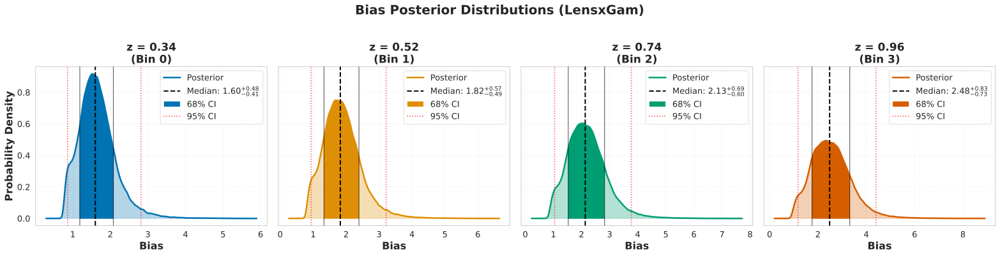
图注：Figure 2: Posterior distributions for the flux-averaged bias $\langle b(z)\rangle$ for the lensing-UGRB
cross-correlation, in the four DES Y3 source-galaxy redshift bins. The dashes vertical lines denotes the median values, while the shaded regions and the dotted lines denote the 68% and 95% credible interval.
对应解读：通量加权偏置
入选理由：四个透镜源红移箱对应投影权重，不应解释成四个单独耀变体的偏置。
来源与置信度：arXiv HTML；source verified；https://arxiv.org/html/2609.19259v1/bias_distributions_lensing.svg
图3
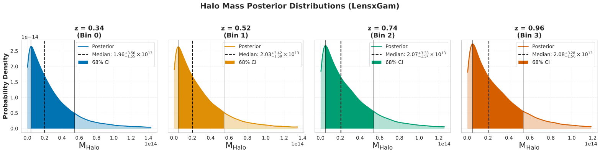
图注：Figure 3: Posterior distributions for the flux-averaged host-halo mass $\langle M(z)\rangle$ for the lensing-UGRB
cross-correlation, in the four DES Y3 source-galaxy redshift bins. The dashes vertical lines denotes the median values, while the shaded regions and the dotted lines denote the 68% and 95% credible interval.
对应解读：宿主晕质量
入选理由：质量分布依赖偏置—质量映射与光度函数，不是直接动力学称重。
来源与置信度：arXiv HTML；source verified；https://arxiv.org/html/2609.19259v1/bias_distributions_lensing_Mhalo.svg
强相关工作
这篇论文衔接未分辨伽马背景源群体建模与弱透镜大尺度结构研究。与直接把背景残余归因于暗物质的解释相比，它强调先检验普通天体源的宿主偏置和光度函数是否正确，因此对新物理搜索的背景校准有价值。
基础阅读包括晕模型的一晕/两晕分解、通量选择函数、弱透镜投影核，以及profile likelihood与边缘后验的差别。相似偏置可由不同AGN群体产生，不能因一种模型拟合成功就唯一识别源类。检索关键词为lensing UGRB cross-correlation、blazar halo bias、misaligned AGN。
同一事件 / 同类源线索：
相似工作：
（未提供）
基础理论 / 方法工作：
（未提供）
相反观点 / 张力线索：
（未提供）
6. Chandra Lensing-cluster Ultradeep Extragalactic Survey (CLUES) I: A 2 Ms Point-Source Catalog of the Abell 2744 Field
- 来源：arXiv / astro-ph.HE
- 链接：https://arxiv.org/abs/2609.17673v1
- 作者：Shouyi Wang, Fan Zou, Elena Gallo, Bin Luo, W. N. Brandt, Yuxuan Pang, Tommaso Treu, Xue-Bing Wu
- 评分：novelty 8/10，importance 9/10，relevance 9/10，final 9.70/10
- 推荐理由：CLUES超深Chandra目录及PSF拟合、团内介质筛选和完备性模拟构成可复用高能观测资源。
中文题目：CLUES深场：327个X射线源如何从团气体背景中筛出
做了什么：101次Chandra观测合并后得到327个Abell2744点源。局部背景、PSF拟合及端到端模拟共同校准复杂团气体环境中的可靠性与完备性。
为什么重要：透镜团放大背景源，也带来复杂X射线背景；简单阈值可能把团气体起伏误认成暗弱点源。
理论 / 观测 / 仪器方法价值：源表、曝光、背景与灵敏度图可复核，中心及外部可靠性分别报告，适合与JWST联合研究。
为什么应该关注：可借鉴候选搜索—局部背景—PSF比较—注入恢复链条，避免把似然改善直接换成全球sigma。
展开详细解读：文章讲解、背景、理论、重点章节、图表与相关工作
文章详细讲解
科学问题：团气体中哪些亮斑才是真正点源？
Abell2744是重要的引力透镜场，也是明亮、结构复杂的X射线星系团。背景AGN可能被放大，但团内热气体的小尺度起伏又可能冒充点源。CLUES目录的价值因此不只是曝光深，而是要同时说明源怎样被找到、假源怎样被排除，以及不同位置漏掉多少真源。
作者怎么做：统一处理101次Chandra观测
总曝光2.102 Ms，经清理后为2.094 Ms。作者在全、软、硬能段先做小波候选搜索，再拟合局部多项式背景和点扩散函数（PSF），优化位置；相互重叠的候选联合拟合。中心3角分团气体区与外围分开处理，并用贯穿搜索和筛选步骤的源注入模拟校准性能。
关键结果：327个源及随背景变化的可靠性
至少一个能段满足ΔC≥25的源进入主目录，最终共327个；不能把三个波段的数量直接相加。模拟给出中心外可靠性98.0%–99.2%，中心内88.5%–98.9%。全、软、硬能段的50%完备流量约为6.3、2.8、4.9×10⁻¹⁶ erg cm⁻² s⁻¹，描述的是模拟统计，不代表每个天空位置都有相同极限。
局限和下一步：源表必须连同选择函数使用
离轴角改变PSF，曝光有CCD间隙，中心气体增加背景，因此目录不是均匀完备样本。做AGN数密度或多波段对应研究时，需要结合灵敏度图、位置误差、波段上限和透镜放大。论文报告的观测通量及覆盖尚不能直接当成经引力透镜校正后的本征光度函数。
关键结果是怎么做出来的
候选：先允许较宽松搜索，再做局部检验
小波搜索提供位置，不直接决定最终目录。对孤立源比较背景模型与背景加PSF模型，重叠源则联合处理，防止把邻源翼误认成新源。多项式背景也可能不足以描述复杂团气体，因此中心与外围的校准必须分开。
阈值：ΔC=25为什么不能直接叫5σ
ΔC是加入源前后Poisson拟合统计量的改善。实际流程还包含位置搜索、非负通量边界、三个能段取最大和非均匀背景，不满足简单一自由度换算的全部条件。全球假源率必须由完整流程模拟求出，不能直接取平方根。
残差：图5展示增加点源是否解决局部结构
从左到右比较原始计数、背景拟合的偏差残差、背景加PSF模型和相应残差，再参考JWST图像。像点源的残差若被PSF有效吸收，比仅一个亮像素更有说服力；但这些示例图是诊断展示，不能擅自增加论文未使用的目视选择条件。
校准：图8把可靠性与完备性同时报告
提高阈值通常减少假源，也会漏掉更多暗弱源。图8不同区域、能段各有曲线，可靠性的右轴范围还不同，必须读实际刻度。使用目录时应根据科学问题选择完整度要求，而不是将327个源统一看成同质量测量。
展开背景、理论、公式、模型、章节和图表导读
背景知识
低计数X射线近似Poisson统计。离轴PSF、CCD间隙和团气体梯度改变检出率；透镜同时改变流量与源平面面积。
深X射线源表常用于寻找吸积黑洞，并与JWST光学红外对应体联合研究。Abell2744的透镜放大有利于看到暗源，但星系团自身热气体也发出大量X射线，增加点源识别和背景建模的难度。
Chandra的PSF随离轴角和观测几何改变。合并不同指向与滚转角的101次曝光提高深度，也使同一场内的曝光、PSF和背景并不均匀，所以不存在适用于全场的一条简单流量阈值。
可靠性表示选中对象有多大比例是真源，完备性表示真实对象有多大比例被选中。这两个分母不同；追求极纯样本会牺牲暗源数量，因此目录应给出两者而不是只报告一个“准确率”。
基础理论 / 方法脉络
PSF为空间点源模板，拟合改善用于排序，可靠性需模拟整条选择过程。完备性是真源恢复比例，可靠性是入选列表中的真源比例。
像素计数近似服从Poisson统计，模型期望由局部背景与源PSF之和组成。PSF使用整个空间形状的信息，比单像素超出背景更稳健，也能分离部分靠近的源，但背景错模仍会制造假阳性。
源注入模拟在已知输入通量、位置和背景下重复搜索，再匹配恢复的源。它能同时估计漏检和假源；若只在真实候选位置拟合，则没有包含初始搜索的试验效应，不能完整校准目录。
目录数密度需要按可检测面积校正：明亮源可在较大区域被看到，极暗源只在最深区域可见。对透镜场还要区分观测平面与源平面面积，以及放大导致的通量改变，不能混为一项修正。
公式与推导
先建立像素计数模型，再解释目录阈值。 以下用标准Poisson统计整理原文方法。像素i的期望计数为
其中bi是局部背景，Pi为归一化PSF，a为源计数幅度且不能为负。忽略像素间额外相关时，计数似然为
相对饱和模型可写成Poisson偏差
零计数项按极限处理。论文用加入PSF前后的改善
衡量点源证据。ΔC越大，说明增加源更能解释局部计数；但源位置经过搜索、幅度存在边界，且多个波段中取最大，因此其全球零假设分布不能仅由一个自由度确定，不能自动令显著性等于根号ΔC。
源注入模拟把统计量转换为目录性能。 对给定通量区间，完备性定义为
而可靠性是
前者的分母包含未被找到的真实源，后者的分母包含被选中的假源，所以两者不能互换。图8展示提高阈值如何改变两者，以及中心团气体与外围的差别。
用于数密度时，还需考虑通量为F的源可在哪些位置被探测：
该式是选择函数的教学表达。每个源的数密度权重与其有效面积有关；目录的50%完备流量是模拟汇总结果，不是整幅图每个像素都有相同的探测门槛。
模型拟合 / 应用方法
局部多项式背景与PSF比较，重叠源联合处理，中心气体的小尺度起伏是模拟重点。使用目录需结合位置灵敏度和质量标记，不能视为均匀完备样本。
局部背景多项式先描述大尺度变化，PSF项再解释紧致结构；中心团气体区可能含更细结构，应重点检查残差。重叠候选要联合拟合，否则一个源的翼会偏置另一个的通量和位置。
由独立能段拟合中取最大ΔC定义筛选后，模拟也必须采用同样取最大规则。各能段共享部分光子和背景，不能简单将单能段假阳性率相乘；位置优化的自由度也需随流程一起模拟。
利用源表做样本研究时，同时读取质量标记、流量上下限和局部灵敏度。给定光子指数的计数—流量转换会带来谱假设依赖，弱源固定谱形与强源自由拟合的结果不应被当作同等信息量。
重点章节 / 结果段落怎么读
观测与预处理。 从101次曝光、有效时间和覆盖图开始，确认场内哪些区域真正达到深曝光；原始总时间不是所有位置都共享的曝光。
局部PSF分析。 读孤立源与重叠源如何分别拟合、中心团气体如何处理，再结合图5、图6的残差了解源筛选的实际工作方式。
模拟校准。 图8和图9分别说明阈值权衡与流量完备性。明确可靠性和完备性的分母，再理解327源目录可支持什么统计研究。
测光与数密度。 后续灵敏度图、覆盖曲线及源计数需联用。位置误差、固定谱形、波段上限及尚未做的透镜修正，都会影响外部科学应用。
建议重点查看的图表
图5：PSF与背景残差。 从原始计数到背景、背景加点源模型，再看Poisson残差，辨认团气体起伏。
图8：完备性—可靠性权衡。 团中心与外围分开，右轴量程不同；ΔC=25不是统一的全球5σ。
其他应联读的诊断： 图1–3检查覆盖、曝光和气体，图4看ΔC，图5、6比较加PSF前后残差，图7看离轴源密度。
关键图表逐图导读
图5：空间拟合证据。 每行是一个候选，列依次给计数、背景残差、PSF加背景模型、对应残差和JWST切图。不同候选切图角尺度可能不同，不能仅看显示面积推断源延展；重点是加入PSF后是否消除了紧致残差。
图8：阈值性能。 行对应中心、外围和全场，列对应不同能段。完备性与可靠性使用左右不同轴，而且不同区域右轴范围不同；肉眼相同高度不代表相同可靠性。灰竖线标出ΔC=25，显示采用阈值的取舍。
图7、图9与灵敏度图。 径向密度含选择效应，50%完备通量也不是全场统一门槛。不能把未校正的径向下降直接解释为真实AGN分布。
论文原图 / 可嵌入图片
图5
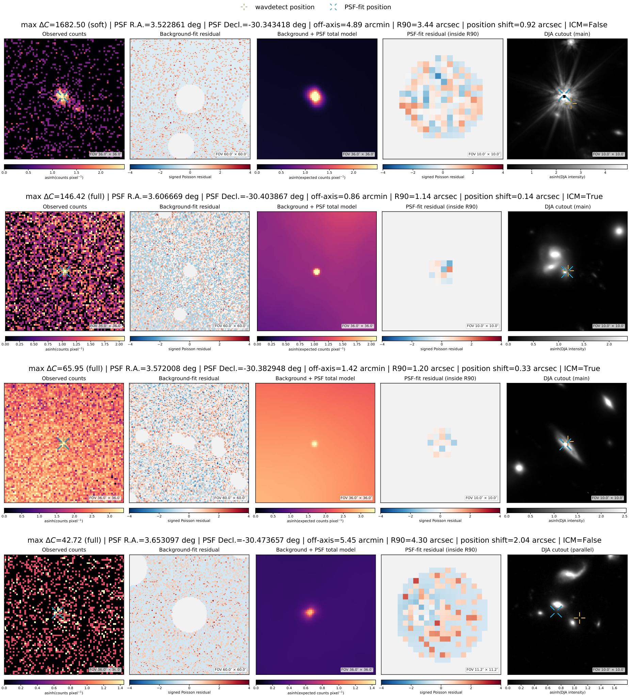
图注：Figure 5: Diagnostics for the PSF fits of four isolated candidates, ordered from top to
bottom by decreasing $\Delta C$ . For each candidate, we show the band with the
largest $\Delta C$ among the independently fitted full, soft, and hard bands.
From left to right, the panels show the observed counts, the signed Poisson
deviance residual from the fourth-order polynomial background fit, the
best-fit background-plus-PSF model, the signed Poisson deviance residual within
the band-specific $R_{90}$ fitting aperture, and the DJA detection-image
cutout. The DJA cutouts are taken from the combined JWST detection images
of the cluster and parallel fields, using the filters listed in
Figure 1 . The panels have different angular sizes, as labeled.
White regions in the background residual were excluded from the
background fit. Blue and red residuals indicate fewer and more observed counts
than predicted, respectively. The yellow plus and cyan cross mark the initial wavdetect and best-fit PSF positions, respectively. Here, $\Delta C=D_{\rm bkg}-D_{\rm bkg+PSF}$ , so that a larger value indicates a
stronger improvement after adding the PSF component. These images are shown
only as visual diagnostics. The sequence continues
in Figure 6 .
对应解读：PSF与背景残差
入选理由：从原始计数到背景、背景加点源模型，再看Poisson残差，辨认团气体起伏。
来源与置信度：arXiv HTML；source verified；https://arxiv.org/html/2609.17673v1/Abell2744_PSF_diagnostics_part1_dropfirst_compact.png
图8
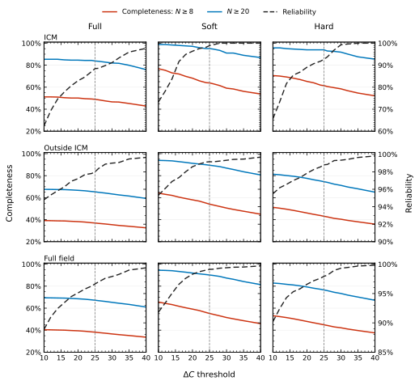
图注：Figure 8: Completeness and reliability as functions of the $\Delta C$ threshold. Rows show the central $3\arcmin$ ICM
region, the area outside the ICM region, and the full $369~\mathrm{arcmin^{2}}$ survey footprint; columns show the
full, soft, and hard bands. Red and blue solid curves show completeness
for input source counts of $N_{\rm input}\geq 8$ and 20, respectively,
on the left axis. Black dashed curves show reliability for all selected
detections, with no additional source-count cut, on the right axis. Note that, for visualization purposes, the plotted reliability axis ranges are different among the top, middle, and bottom panels.
The vertical gray dashed line marks
the adopted $\Delta C=25$ threshold.
Here, $N_{\rm input}$ denotes the input counts of each simulated source in
the corresponding band. Source numbers are pooled over ten simulations
before calculating completeness and reliability.
对应解读：完备性—可靠性权衡
入选理由：团中心与外围分开，右轴量程不同；ΔC=25不是统一的全球5σ。
来源与置信度：arXiv HTML；source verified；https://arxiv.org/html/2609.17673v1/simulation_completeness_reliability_poly4.svg
强相关工作
CLUES可与JWST深场对应体及其他Chandra深场源表联合研究，重点优势是深X射线数据与强透镜场的结合；但团气体背景和放大效应也使它不能被直接当作一个普通空白深场。
基础方法包括Poisson PSF拟合、源注入恢复、位置误差标定与sky coverage修正。原文以CDF-N、CDF-S等工作作为覆盖和源计数比较，差异需要连同能段、面积、谱假设和透镜处理解释。检索关键词为Chandra CLUES Abell2744、source completeness reliability、X-ray logN–logS。
同一事件 / 同类源线索：
相似工作：
（未提供）
基础理论 / 方法工作：
（未提供）
相反观点 / 张力线索：
（未提供）
7. A 32-day Quasi-periodic Modulation in the Post-peak Light Curve of the Superluminous Supernova SN 2018bsz
- 来源：arXiv / astro-ph.HE
- 链接：https://arxiv.org/abs/2609.19984v1
- 作者：Aiswarya Sankar. K, Ting-Wan Chen, Seán J. Brennan, Morgan Fraser, Keiichi Maeda, Thomas Moore, Sheng Yang, Amar Aryan
- 评分：novelty 8/10，importance 8/10，relevance 9/10，final 9.35/10
- 推荐理由：超亮超新星多波段出现约月尺度调制，直接适用于暂现源时序研究；仅三周期须严查红噪声与去趋势。
中文题目：SN2018bsz的约32天调制：三周期信号与零假设边界
做了什么：约110个静止系日的跟踪呈现31.61天调制，覆盖约三周期。多波段相位、去趋势及比较星检验不支持明显观测系统效应，但未唯一确定机制。
为什么重要：重复结构可联系中心引擎、伴星或环星物质；三个周期不足以证明一个长期稳定的物理时钟。
理论 / 观测 / 仪器方法价值：将周期测量、噪声零假设、趋势稳健性和同场比较星分开检验，使调制证据的来源可审计，并明确有限基线下周期精度与物理机制确认的区别。
为什么应该关注：对暂现源时序研究，应报告零假设与模拟分辨率，不把零超越写成p=0，也不把窄周期误差当机制确认。
展开详细解读：文章讲解、背景、理论、重点章节、图表与相关工作
文章详细讲解
科学问题：平滑衰减上的波纹是否有共同周期？
超亮超新星SN2018bsz峰后并非光滑变暗，而有多次起伏。如果不同波段共享时间尺度和相位，可能与引擎、伴星或环星物质结构有关。但暂现源只持续有限时间，长趋势、采样窗和相关噪声都能制造周期峰，因此本文先检验调制是否稳健，再讨论机制。
作者怎么做：先去趋势，再交叉检查
研究约110个静止系日的多波段光变，先对各波段拟合四阶多项式去除平滑衰减，再做单波段和多波段Lomb–Scargle周期搜索。附录用三阶、五阶和Bazin函数重复处理，检查结论是否只由一种趋势模型产生；另用GROND图像做相对同场恒星的差分测光，排查观测条件与零点漂移。
关键结果：约32天信号跨波段出现
联合分析得到约31.61±0.03天的调制，观测覆盖约三个周期。不同波段周期和相位基本一致，比较星不呈现同样幅度的变化，支持它属于超新星本身。论文的蒙特卡洛检验中一万次实现没有超过观测峰，但“零次超过”只说明概率很小，不能把p值写成零。
局限和下一步：三个周期尚不能唯一确定物理时钟
±0.03天反映指定模型和数据下的周期精度，不意味着机制已经确定。噪声零假设、去趋势、频率搜索范围都会影响显著性。伴星驱动、中心引擎和非均匀环星物质仍需用光谱、颜色及更长时段行为区分；与其他超新星比较也不能代替对本源机制的独立约束。
关键结果是怎么做出来的
光变：检查减掉了什么
图2上半部给原始光变和趋势，下半部给残差。应该先看趋势是否追着每个起伏弯折；若趋势过于灵活，它会改变周期振幅甚至制造剩余波纹。附录更换趋势形式后仍保留相近结构，支持调制并非单一四阶拟合的偶然产物。
周期：共同峰比单个最高峰更有价值
图3同时展示各波段周期图与联合结果。多个波段相近的峰和相位有一致性价值，但这些波段共享观测时间窗和同一物理事件，并非完全独立试验，不能直接把各波段p值相乘夸大证据。
零假设：一万次无超越应如何报告
模拟结果为零超越时，若把每次视作独立Bernoulli试验，95%上界约为3/10000，即3×10⁻⁴。这是有限模拟次数提供的概率分辨率，还依赖模拟噪声是否代表真实残差；不能据此无条件换算一个更高的全球sigma。
系统检查：同场恒星检验的是仪器因素
g、r波段分别使用25、23颗比较星；例如g波段超新星残差散布约0.072 mag，对照约0.036 mag。图4显示超新星变化超出共同测光因素，但这不能自动排除天体本身的红噪声。观测系统检查和随机过程显著性需要分别成立。
展开背景、理论、公式、模型、章节和图表导读
背景知识
有限非平稳光变的平滑趋势会向低频泄漏，去趋势也会改变峰。比较星排查共同零点和天空背景，但不能排除源自身的有色随机变化。
超新星峰后衰减反映能量供给、辐射扩散和物质透明度共同演化，所以本底本来就不是平稳常数。寻找短周期结构时，需要先解释平滑趋势与残差分别代表什么，否则周期图会把长期衰减也计入。
跨波段相位一致可以说明变化具有共同起源，但颜色与振幅差异还携带温度和辐射区信息。相同周期不自动说明是轨道时钟，受扰动引擎或不均匀物质也可能产生近似重复结构。
有限的约三周期覆盖使周期精度、稳定性和物理机制成为不同问题。一个尖锐周期峰可能在指定趋势模型内定位准确，却不足以证明此频率在未观测时段仍长期稳定。
基础理论 / 方法脉络
GLS比较正弦项的拟合改善，多频取最大带来试验效应。周期误差是在有信号条件下估计，FAP则在无信号下比较最大峰，两者不同。
Lomb–Scargle搜索可理解为在每个试探频率拟合正弦和余弦分量，比较对残差的解释能力。它适合不规则采样，但采样窗仍会产生别名与相关峰，不能因为方法允许缺测就忽略时间窗。
去趋势会改变残差低频功率，多项式阶数太高可能吞掉调制，太低又留下缓慢弯曲。因此三阶、四阶、五阶及Bazin模型的比较，是检验信号是否依赖某个趋势假设，而非给周期峰简单增加票数。
零假设应保留与真实数据相符的噪声记忆、误差和采样。独立白噪声模拟若不能代表红噪声，会使偶然长波纹显得过于罕见；还需在每个模拟中重复同样的趋势处理和峰值搜索。
公式与推导
静止系时间和逐波段残差为
搜索模型为 $r_b=A_b\sin(2\pi t/P+\phi_b)$ 加噪声，并不指定辐射机制。零超越模拟的上限由
得到 $p_{\rm up}\simeq3.0\times10^{-4}$。这个关系来自二项式计数，必须与模拟采用的零假设一起报告，不能据此宣称更小的未分辨p值。
从光变分解到周期与假警报。 用教学记号把波段b的测量写为
Tb为缓慢趋势，后两项描述试探频率的调制，ε包含测量误差和未建模变化。去趋势后对每个ω拟合正余弦分量，可用
理解Lomb–Scargle的基本思想；实际归一化随实现而异，该式没有假定所有时刻都等间隔。频率与周期满足
多波段可共享ω而保留各自振幅及趋势。周期±0.03天反映这种模型内的定位精度；它不包含所有趋势选择或噪声错模的不确定性。对于在指定频率范围内搜索最高峰，模拟也必须搜索同样范围并重复去趋势。若一万次独立实现无超越，有限模拟给出的95%概率上界来自
这说明为什么零超越不能报告成零概率。它仍以所用零假设为条件；白噪声、红噪声和采样窗改变后，显著性需要重新校准。
模型拟合 / 应用方法
每个模拟都需重复同一趋势拟合与周期搜索。比较星g/r样本分别25、23颗；g波段SN残差约0.072mag，对照约0.036mag。支持内禀变化，但不是独立机制判别。
先定义用于周期分析的时间窗口，再对每个波段独立拟合趋势，检查残差是否仍有长期漂移。把整个处理流程应用到模拟中，避免将真实数据的拟合自由度排除在显著性计算之外。
联合周期模型可以共享周期，同时允许不同波段有不同零点、振幅或相位参数。共享参数带来精度，但数据相关性意味着各波段证据不能简单相乘；应通过联合模拟评估整体统计量。
差分测光控制星检验观测系统，替代去趋势检验分析选择，Monte Carlo检验随机起伏；三者针对不同风险。周期误差与这几类系统敏感性应分开报告，最后再用光谱和颜色判断物理机制。
重点章节 / 结果段落怎么读
光变与去趋势。 先看图1的真实覆盖和图2的趋势模型，确定110个静止系日内实际采样了多少起伏；不要先被一个窄周期峰吸引而忽略时间基线。
周期与显著性。 图3对照单波段和联合周期，再读Monte Carlo零假设与搜索范围，区分周期误差、固定频率概率和搜索最大峰后的概率。
差分测光与附录。 图4检查同场观测系统，附录分别改变多项式阶数和Bazin趋势。这些检验针对不同误差来源，不能相互替代。
机制讨论。 图5、图6与其他超新星的光变和Hα结构比较提供物理线索；相似周期或谱形并不意味着相同前身已经确定。
建议重点查看的图表
图2：去趋势后的光变。 先看平滑衰减拟合是否吞掉或制造调制，再比较不同波段残差相位。
图3：单波段与多波段周期图。 多个波段的共峰支持一致性，但共享时间窗时不能将概率直接相乘。
其他应联读的诊断： 图1、2看原始和残差，图3看周期峰，图4看系统对照，图6看Hα是否伴随速度调制。
图4的同场控制： 比较超新星与参考星残差，而非只看超新星的周期峰。参考星没有共同变化主要排查测光系统，不能替代天体红噪声的零假设检验。
关键图表逐图导读
图2：原始光变与残差必须上下联读。 上半部的四阶曲线表示平滑衰减，下半部展示减去它后剩余的结构。先看趋势是否穿过每个波峰，再看残差各波段相位是否一致；如果只看下半部，就看不出信号有多少依赖趋势选择。
图3：周期峰的一致性。 各波段独立峰接近共同时间尺度，联合周期提高定位能力。峰高度取决于归一和噪声模型，不能直接把不同波段高度相加当作显著性；相近采样窗也可能产生共享别名。
图4与附录：控制检验。 比较星残差检验零点与观测因素，三阶、五阶和Bazin结果检验趋势敏感性。都支持稳定结构时，仍需正确随机过程零假设才能解释假警报率。
论文原图 / 可嵌入图片
图2

图注：Figure 2: Detrending of the multi-band light curves of SN 2018bsz. Top: Apparent-magnitude light curves in the ten photometric bands ( $u$ , $b$ , $g$ , $v$ , $r$ , $i$ , $z$ , $J$ , $H$ , $K_{s}$ ). The solid curves show the fourth-degree polynomial fitted independently to each band to trace the smooth underlying decline. Bottom: Residuals $\Delta m$ obtained after subtracting the polynomial fit. The dashed curves show the best-fitting sinusoidal models based on the periods identified by the Lomb–Scargle analysis, illustrating the quasi-periodic modulation analyzed in Figure 3 .
对应解读：去趋势后的光变
入选理由：先看平滑衰减拟合是否吞掉或制造调制，再比较不同波段残差相位。
来源与置信度：arXiv HTML；source verified；https://arxiv.org/html/2609.19984v1/combined_detrend_residual_4.svg
图3
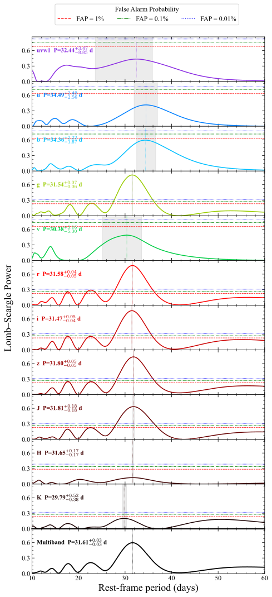
图注：Figure 3: Single-band Lomb–Scargle periodograms are shown for all photometric filters, computed independently for each band to examine periodic signals present in the residual light curves with the period labeled for each band. In addition, a multiband Lomb–Scargle periodogram is computed using the Astropy implementation, combining all available photometric data from $uvw1$ through $K_{s}$ . The multiband periodogram yields a dominant period of $P=31.6$ days. The dashed lines indicate the False Alarm Probability for each band. The grey shaded region shows the 16th–84th percentile range from the Monte Carlo procedure discussed in Section III.3 .
对应解读：单波段与多波段周期图
入选理由：多个波段的共峰支持一致性，但共享时间窗时不能将概率直接相乘。
来源与置信度：arXiv HTML；source verified；https://arxiv.org/html/2609.19984v1/periodogram.svg
强相关工作
文中将SN2018bsz与SN2022jli、SN2022esa的峰后结构比较，帮助讨论重复能量输入、伴星和环星物质等情形。相似光变形态是机制候选的线索，仍需光谱、颜色演化及能量预算共同约束。
方法基础来自不规则采样周期搜索、红噪声假警报与差分测光。对AGN或其他暂现源迁移时，趋势时标、可见周期数和噪声性质都要重新校准，不能直接采用31.61天或本文的模拟概率。检索关键词为multiband Lomb–Scargle、detrending robustness、SN2018bsz modulation，原文附录是复核分析选择的重要部分。
同一事件 / 同类源线索：
相似工作：
（未提供）
基础理论 / 方法工作：
（未提供）
相反观点 / 张力线索：
（未提供）
8. Testing Higgs-Coupled Minimal Dark Matter with Solar Neutrinos after the LZ High-Recoil Event
- 来源：arXiv / astro-ph.HE
- 链接：https://arxiv.org/abs/2609.19174v1
- 作者：Mattia Di Mauro
- 评分：novelty 7/10，importance 8/10，relevance 9/10，final 9.05/10
- 推荐理由：将LZ单个候选解释与太阳捕获及IceCube约束连接，直接涉及高能中微子，但高质量响应外推不能当正式排除。
中文题目：太阳中微子检验LZ候选解释：公开网格与外推分开
做了什么：Higgs耦合最小暗物质解释LZ高反冲候选时，也预测太阳捕获与湮灭。两个公开IceCube质量网格内基准有强张力；更重基准只能作为响应外推诊断。
为什么重要：同一相互作用连接地下反冲与太阳中微子，可检验候选解释的跨实验相容性，而不先将候选当作发现。
理论 / 观测 / 仪器方法价值：计算显式包含非弹性运动学、同位素、热运动、轨道冷却及捕获湮灭平衡，排查压低太阳信号的机制。
为什么应该关注：应同时检查响应映射条件、公开质量网格上限与热化假设；预测/参考比值很大也不能直接称为IceCube官方置信度，可用它定位最需要完整联合似然检验的模型。
展开详细解读：文章讲解、背景、理论、重点章节、图表与相关工作
文章详细讲解
科学问题：地下候选解释是否会过量产生太阳中微子？
LZ的高反冲候选可以用Higgs耦合最小暗物质的非弹性散射解释，但同一粒子也会在太阳中被捕获并最终湮灭。若产生的高能中微子超过IceCube允许的响应，则地下解释受到跨实验检验。论文并不把单个LZ事件当作已经确认的暗物质发现。
作者怎么做：连接计数、捕获、冷却和湮灭
在每个热遗迹质量基准上，先调整态间劈裂使LZ预期接受事件数为一，再计算太阳内不同核种的非弹性捕获。被捕获粒子随后通过圈图诱导的弹性散射冷却，进入中心积累并湮灭。作者显式检查轨道冷却与捕获—湮灭平衡时间，而不是一开始就假设所有被捕获粒子立即形成热核心。
关键结果：公开质量网格内存在强张力
两个位于IceCube公开网格内的基准，预测率与W对响应之比约为2.21×10³和90.9。冷却和平衡时间低于太阳年龄的检验支持使用平衡近似。更重的22、48、82、130 TeV基准超过公开10 TeV网格，需另作响应损失外推；其结果属于重解释诊断，不是实验官方置信度限。
局限和下一步：一个大比值不是完整统计结论
LZ基准的区间只来自单事件计数Poisson误差，未包括背景、反冲谱、探测器及天体系统误差。中微子限制还依赖湮灭末态和探测器能量响应。应把网格内检验与网格外外推分别报告；完整评估需要一致的联合似然与系统误差传播。
关键结果是怎么做出来的
地下端：固定质量，再匹配劈裂
非弹性散射需要支付态间质量差，因此可用的速度分布和核反冲区间很重要。作者不是仅把一个反冲能量代入公式，而是匹配接受后的预期事件数。表1的劈裂不确定度属于给定模型下的计数映射，不等于全参数测量误差。
太阳端：核种和热运动影响捕获
太阳引力先加速入射粒子，使其散射运动学不同于地面实验。Fe与Ni等核种对所考察模型贡献重要；接近运动学关闭边界时，核的热运动可以重新打开部分捕获通道，不能一直把靶核当静止。
时间尺度：先检查能否进入平衡
图2将冷却时间、平衡时间与太阳年龄比较，并将弹性截面压低两个数量级做压力测试。只有粒子能形成适当的中心分布，且平衡时间远短于年龄，湮灭率才可近似为捕获率一半。这个步骤检查物理条件，不是探测显著性。
实验端：图7的纵轴是响应比较
公开质量网格止于10 TeV，灰区高质量段依赖外推和保守响应损失假设。横向连续曲线不表示实验真的在所有质量处发布同等级限制。纵轴远大于一说明模型张力，但不能把该数直接叫排除倍数或sigma。
展开背景、理论、公式、模型、章节和图表导读
背景知识
太阳引力加速暗物质，可开放不同于地下实验的非弹性散射。捕获后的热化和湮灭终态决定中微子输出，不能只从捕获量跳到可探测率。
非弹性暗物质散射会跃迁到较重内部态，需要克服能量阈值。地球上可参与的粒子速度有限，太阳引力则可先加速粒子，因此两种环境检验同一相互作用的不同运动学区域。
被太阳捕获只表示粒子散射后处于束缚轨道，不代表它已经停在中心。若后续散射太弱，粒子可能长期分布在大轨道上，降低中心密度与湮灭效率；所以冷却计算是中微子预言的必要步骤。
太阳中微子搜索还依赖湮灭末态的能谱和传播，不能把所有末态视为同一响应。论文以W对响应作比较，并明确公开质量网格的边界，提示模型重解释应与实验直接发布结果区分。
基础理论 / 方法脉络
粒子数由捕获源项与二体湮灭项平衡。冷却慢或未平衡时，湮灭率低于捕获率一半；本文额外演化计算检验这些抑制是否成立。
捕获由入射相空间、太阳逃逸速度、核种密度和散射运动学共同决定。较重核可更有效交换动量，但形状因子和同位素也影响高动量转移，因此不宜仅按元素丰度估计贡献。
捕获—湮灭方程包含一个源项和与粒子数平方成正比的损失项。热化后有效体积进入湮灭系数，决定达到平衡要多久；若尚未热化，直接使用固定中心体积会高估湮灭。
平衡时每次湮灭消耗两个粒子，故湮灭事件率为捕获率的一半。这个二分之一来自数目守恒，不是探测效率；将中微子谱折叠有效面积还需另做传播与仪器响应计算。
公式与推导
从被捕获粒子数到太阳中微子率。 为解释论文的时间尺度检查，先在捕获率固定、已形成适当空间分布且可忽略蒸发的近似下写
N为太阳内暗物质粒子数，C为每秒捕获数，CA包含湮灭截面和有效体积。右侧二次项是粒子损失率，两个粒子才构成一次湮灭。由N(0)=0积分得
所以湮灭事件率为
当太阳年龄远大于τ时才接近平衡C/2；若冷却缓慢、分布尚未热化，固定CA的假设也需先检查。论文图2比较这两类时间尺度，并非仅检验上式的代数极限。
从湮灭到探测还隔着传播和响应。 对距离D处的观测者，形式上有
Bf是末态分支比，谱应包含太阳内相互作用与味传播后的结果，而不是直接使用产生点谱。折叠仪器响应才得到计数：
这一教学表达说明为什么相同总湮灭率、不同能谱并不等价。论文采用质量相关W对响应进行比较，其归一诊断可概括为
它是模型与响应的比值，不是似然比，也不是sigma。公开模板到10 TeV为止，超过此范围时分母依赖外推；灰区结论因此要与网格内结果分开。LZ单事件区间也仅涵盖给定模型下的计数误差，完整联合结论还需背景与系统不确定性。
模型拟合 / 应用方法
质量固定后匹配LZ计数，求太阳捕获积分及轨道演化，并做降低弹性截面的压力测试。完整联合似然不能由一个预测/上限比值替代。
在固定热遗迹质量下扫描劈裂并求LZ接受计数，随后将同一参数输入太阳捕获计算，避免地下和太阳端各自采用不一致归一化。计数匹配并不免除对背景和速度分布的敏感性。
对被捕获轨道演化求冷却时间分布，不仅报告中位数，也看长时间尾部。再压低弹性截面检验结论是否脆弱；若保守设置下仍远短于太阳年龄，平衡近似才更有支持。
网格内比较采用公开响应，网格外分别展示中心外推与保守损失范围。两者应在图例和表格中分开；若未来能取得更高质量的官方模板，可替换外推，而非将当前诊断硬解释为置信度。
重点章节 / 结果段落怎么读
基准定义与表1。 先确认热遗迹质量、劈裂和LZ计数归一，特别是误差仅包含哪部分统计信息，避免把基准点当作完整参数后验。
捕获与后续冷却。 追踪核种、非弹性门槛及圈图弹性散射，图2和表2用于判断形成中心分布与捕获湮灭平衡的条件。
IceCube映射。 图4、图7和表4明确10 TeV边界，先区分网格内结果与外推，再比较具体预测/响应比值。
附录检验。 核热运动、速度分布、数值积分和响应损失压力测试帮助判断张力来自哪些假设；连续高质量曲线不能替代官方模板。
建议重点查看的图表
图2：冷却与平衡时间。 与太阳年龄比较，检查捕获后热化和平衡近似是否成立。
图7：IceCube响应比。 10 TeV以上属于响应外推；纵轴比值不是官方排除显著性。
其他应联读的诊断： 图1为相互作用链条，图2为时间尺度，图3标10TeV端点，图4看预测对响应。
图6的响应延拓： 看10 TeV边界之后实线、虚线与保守范围各代表什么。连续绘出的高质量响应不是新的官方模板，其系统假设需要连同表4一起读。
关键图表逐图导读
图2：时间尺度。 横轴枚举不同基准，纵轴比较冷却与平衡时间；太阳年龄水平线给出是否来得及的物理参照。降低弹性截面的曲线是压力测试，不是另一项测量。中位数低于年龄时也应联读表中的长时间尾部。
图7：预测/响应比。 纵轴一以上表示高于所采用参考响应，10 TeV竖线将公开网格与外推区分开。灰区范围来自响应损失处理，不是所有系统误差的统一置信带，也不能从比值直接读sigma。
表1与表4。 前者的计数误差定义和后者对外推的限定，是解读漂亮连续曲线时不可省略的条件。
论文原图 / 可嵌入图片
图2
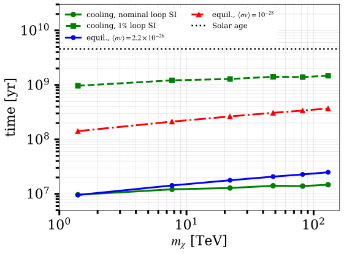
图注：Figure 2: Post-capture cooling and capture–annihilation equilibration times for the six HC-MDM thermal benchmarks. Green solid circles show the capture-weighted median cooling time for the nominal loop-induced SI cross section, while green dashed squares show the result after suppressing this cross section by a factor $100$ . Blue circles and red triangles show the capture–annihilation equilibration time for $\langle\sigma v\rangle=2.2\times 10^{-26}$ and $10^{-28}\,\mathrm{cm^{3}\,s^{-1}}$ , respectively. The black dotted line denotes the Solar age, $t_{\odot}=4.57\,\mathrm{Gyr}$ . Both cooling and equilibration remain faster than the Solar age, even under a two-orders-of-magnitude suppression of the elastic cooling interaction.
对应解读：冷却与平衡时间
入选理由：与太阳年龄比较，检查捕获后热化和平衡近似是否成立。
来源与置信度：arXiv HTML；source verified；https://arxiv.org/html/2609.19174v1/fig7_postcapture_timescales.svg
图7
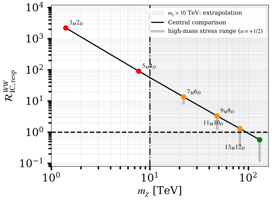
图注：Figure 7: Ratio $\mathcal{R}_{\rm IC,resp}^{WW}$ between the predicted HC-MDM Solar annihilation rate and the mass-dependent IceCube $W^{+}W^{-}$ response. The black curve shows the central comparison for the six thermal benchmarks using the independently rate-matched splittings. The horizontal dashed line marks $\mathcal{R}_{\rm IC,resp}^{WW}=1$ , while the vertical dash-dotted line indicates the $10\,\mathrm{TeV}$ endpoint of the released IceCube DM grid. For $m_{\chi}>10\,\mathrm{TeV}$ , the gray intervals show the range between the central response continuation and the conservative response-loss stress prescription.
对应解读：IceCube响应比
入选理由：10 TeV以上属于响应外推；纵轴比值不是官方排除显著性。
来源与置信度：arXiv HTML；source verified；https://arxiv.org/html/2609.19174v1/fig8_icecube_ratio.svg
强相关工作
本研究将直接探测候选的模型解释与太阳暗物质中微子搜索连接起来，是跨实验相容性检验，而非两边信号联合确认。其基础是太阳引力捕获、被捕获粒子的热化和捕获—湮灭平衡。
与IceCube官方结果比较时，要使用相同的质量、末态及响应条件；高质量外推应作为recast诊断单列。与LZ分析比较时，一事件匹配也不能替代背景及谱信息的完整似然。检索关键词为inelastic dark matter solar capture、capture annihilation equilibrium、IceCube solar W-pair response，具体模板来源见原文。
同一事件 / 同类源线索：
相似工作：
（未提供）
基础理论 / 方法工作：
（未提供）
相反观点 / 张力线索：
（未提供）
9. The 2025.6 X-ray Minimum of Eta Carinae
- 来源：arXiv / astro-ph.HE
- 链接：https://arxiv.org/abs/2609.20046v1
- 作者：Amit Kashi, Noam Soker
- 评分：novelty 7/10，importance 8/10，relevance 8/10，final 8.70/10
- 推荐理由：多仪器追踪海山二新一轮X射线极小，软化与提前衰减有助于区分吸收与风碰撞破坏。
中文题目：海山二2025.6极小：软化与提前衰减指向风碰撞变化
做了什么：NICER、Swift、XRISM及Chandra跟踪显示2025.6海山二X射线极小比前五轮提前约10天。衰减时变软及短时变化支持风碰撞区改变，而非仅由简单视线吸收解释。
为什么重要：周期性近星点事件可重复检验大质量双星风的相互作用；不同周期的差异揭示了轨道以外的流体变化。
理论 / 观测 / 仪器方法价值：作者保留跨仪器差异，硬度在同仪器内计算，并对多个历史周期作相位比较，避免将有效面积、孔径和背景差异误认为谱演化或周期变化。
为什么应该关注：可借鉴多任务光变的归一化与背景边界。论文支持吸积/碰撞区破坏图景，但不是对每个动力学步骤的直接成像。
展开详细解读：文章讲解、背景、理论、重点章节、图表与相关工作
文章详细讲解
科学问题：海山二新一轮X射线极小为何提前？
海山二是大质量双星，风碰撞激波产生高温X射线；近星点附近光变会进入极小。亮度下降既可能由视线吸收增强，也可能由碰撞区被破坏或次星风受抑制。本文把2025.6事件与前五个周期对照，重点检查下降时刻和谱软硬变化能否区分这些解释。
作者怎么做：拼接多仪器时间覆盖
使用NICER、Swift、XRISM和Chandra资料追踪软、硬成分及极小。不同仪器有不同能量响应、孔径和弥散背景，作者保留这些差异，在各仪器内部讨论硬度，并对长周期光变作相对归一化。NICER观测在6月16日结束，不能把它画成完整覆盖极小最低点。
关键结果：约提前10天下降，并伴随软化
与此前周期比较，2025.6的极小下降约提前10天，衰减过程中趋于更软。简单吸收通常更强地压低软光子，因此这种趋势不支持把全部下降仅归为视线柱密度增加。碰撞区变化、次星风削弱或吸积相关图景能解释部分现象，但这里仍是基于时间与谱行为的间接推断。
局限和下一步：归一化光变不是统一能谱
短时变化和跨周期差异值得关注，但不同仪器计数率不能直接作为同一绝对流量相减。NICER总计数还包含背景成分；对物理机制的强检验需要相同能段的能谱拟合、吸收与温度联合约束及流体模拟，不能仅凭光变形状唯一重建吸积过程。
关键结果是怎么做出来的
先分成分
图1分别展示软、硬成分及硬度，而不是只给一条总光变。若下降来自吸收，软端应更容易被削弱；若高温激波本身减弱，硬端下降可导致软化。两种趋势提供机制线索，但前提是所比较的软硬定义和仪器响应固定。
再对齐周期
图2将六轮近星点事件放到共同轨道参照上。2025.6相对前几轮的提前下降是本篇核心新信息，不能把不同观测起止时刻直接当作物理相位差。应看真正具有数据覆盖的共同区间。
核对跨仪器边界
NICER、Swift、XRISM和Chandra的计数率响应不同，归一化主要用于比较形状。NICER以52个焦平面模块归一的总量并非已无背景的纯碰撞风通量；低通量阶段背景比例尤其重要。不能将各仪器相邻点的跳变全部归于源。
最后讨论机制
图3把X射线和V波段光变并列，提供不同辐射成分的时间联系。提前下降、软化和短时波动共同支持碰撞风结构变化，但没有直接拍到吸积流；“与某图景相符”与“排除所有替代解释”应保持区别。
展开背景、理论、公式、模型、章节和图表导读
背景知识
大质量双星风相撞形成高温X射线区，近星点时风加速、冷却、吸收和吸积都可能改变。硬度既受温度也受吸收与背景影响，须结合仪器和时间信息。
两颗大质量恒星的强风相撞形成激波，将风的动能转成高温等离子体辐射。轨道高度偏心时，近星点风碰撞几何、密度与冷却会迅速改变，因此每轮极小像一次可重复但并非完全相同的实验。
吸收主要改变光子离开系统后的传播，碰撞区破坏则改变光子产生过程。二者都使总亮度下降，却常有不同的软硬能段趋势，所以同时看通量与硬度比仅找最暗时刻更能限制物理机制。
海山二周围有扩展辐射，不同望远镜角分辨率与提取孔径会纳入不同成分。极小期碰撞风变暗时，这些较稳定成分和仪器背景相对更重要，跨任务比较尤其需要保持响应差别。
基础理论 / 方法脉络
碰撞激波温度随风速平方变化，碰撞区削弱可使高温辐射减少。简单吸收则具有能量依赖，所以软硬变化方向能帮助区分机制，但不是完整谱拟合的替代。
强激波后的特征温度近似与垂直激波面的上游速度平方成正比，因此风速下降或激波结构改变可能使高能辐射减少。这个关系给物理方向，但真实碰撞区并非单温、平面、稳态激波。
光电吸收截面通常在软X射线更大，增加柱密度常使观测谱变硬。衰减伴随软化因而对纯吸收模型构成挑战；不过固定软成分、部分覆盖和响应变化也需排查，不能把硬度单独当唯一诊断。
跨周期比较需要统一相位零点与周期约定，再分别处理能段与归一化。相位漂移与形态改变是不同量；前者可能反映事件开始更早，后者则涉及衰减快慢和最低状态的持续时间。
公式与推导
计数率及Poisson统计误差按原文处理为
NICER再作启用探测器归一化：
这些是gross rates，不能当作已扣背景流量。解释简单吸收时可写背景关系
低能截面通常较大，因此单纯增加冷吸收倾向使谱变硬；这是本文软化论证的方向性基础，不是从一个硬度值精确反演柱密度。
用三个物理环节理解下降与软化。 非辐射、强、近似单流体激波给出基础温度尺度
其中v⊥是垂直激波面的入射速度，μ是平均粒子质量的无量纲系数。它说明风变慢会降低温度，却不是本篇多温碰撞风能谱的完整拟合模型。热辐射的带宽光度可概括为
密度、发射体积或冷却函数改变都会使总亮度变动；因此通量下降并不唯一对应某个速度变化。经过视线吸收后，教学上的单屏模型为
低能处截面通常较大，单纯提高柱密度往往更强压低软端。本文衰减伴随软化，因此需要考虑硬成分自身削弱等因素，而不是只调吸收。实际相机看到的是经有效面积、重分布和背景处理后的计数，跨仪器硬度不能直接代入同一绝对谱。上述关系用于解释方向，不能据此从一条归一化光变反演唯一温度、密度或吸积率。
模型拟合 / 应用方法
不同任务只比较适合的时序和归一化幅度，硬度使用同仪器双能段。NICER把GTI内计数与曝光累加并校正探测器数。软波段常量背景及任务覆盖不一致限制绝对谱解释。
先在各仪器内部定义一致的软、硬能段，扣除或建模背景，再比较随时间的硬度。低计数阶段宜使用计数似然或合适误差传播，不能将可能为零的分母机械放入高斯比值公式。
拼接长光变时把跨仪器比例作为单独问题处理；归一化有利于看形状，但会舍弃绝对光度信息。若要检验风能量预算，仍需能谱响应、距离和吸收改正，不能直接使用归一化纵轴。
机制判别应同时比较温度、吸收柱、发射量和时间演化的预言。现有图像支持碰撞区改变，但更具体的吸积阶段、风关闭和恢复过程需要流体模型与光谱诊断共同验证。
重点章节 / 结果段落怎么读
数据覆盖。 先读各仪器实际时段和计数定义，确认NICER在6月16日停止，最低点由哪些其他任务约束，而不是假设所有任务同步覆盖。
软硬成分。 图1应按仪器分别理解硬度与背景，找出软化发生在哪些时段，再判断简单吸收模型是否足够。
历史周期比较。 图2先统一轨道参照再比较下降开始和持续时间；提前约10天是相对历史周期的量，不等于轨道周期已改变10天。
物理讨论。 图3的光学对照提供另一成分的时间线索。吸积、风削弱和碰撞区改变需结合能谱与流体模型，不应由归一化曲线唯一决定。
建议重点查看的图表
图1：软硬光变与硬度。 各仪器单独理解硬度，检查衰减伴随软化是否符合单纯吸收图景。
图2：六轮极小比较。 统一轨道参照后查看2025.6的提前下降，避免与曝光间隙混淆。
其他应联读的诊断： 图1看软硬波段和硬度，图2比较六次近星点，图3比较本轮归一化X射线及V波段。
图3的光学对照： 比较X射线与V波段下降及恢复的时间关系。两条曲线都经归一化，不能从纵轴高度直接比较两个辐射区的绝对能量释放。
关键图表逐图导读
图1：软、硬与硬度。 先分别看不同任务的覆盖和能段，再检查下降时硬度的方向。低通量时稳定扩展成分与背景比例上升，不能仅凭比值变小就排除所有复杂吸收模型；证据支持的是简单吸收不足。
图2：六周期对比。 横轴围绕共同近星点参照，纵轴用于比较X射线行为。找出2025.6相对于历史曲线真正提前下降的区间，注意观测间断；不要将起始观测日期当成物理下降时刻。
图3：归一化X射线与V波段。 两类辐射来自不同成分，时间关系可支持讨论，但归一化抹去了绝对光度，不能用曲线高度直接比较释放能量。
论文原图 / 可嵌入图片
图1
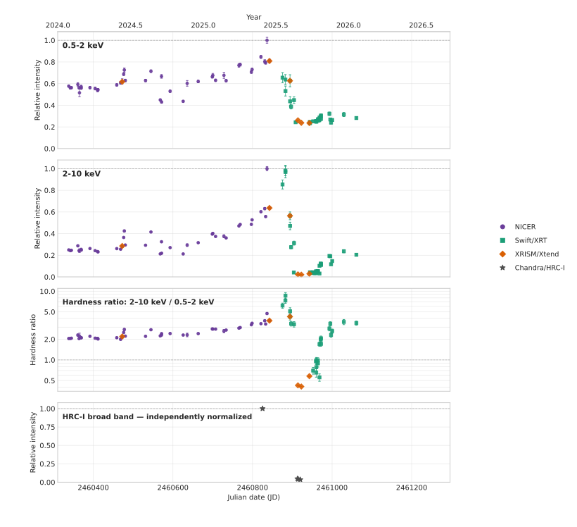
图注：Figure 1: The X-ray light curve of $\eta$ Carinae across the 2025.6 minimum. From top to bottom, the panels show the soft component, hard component, the hardness ratio, and Chandra broad-band observations. The hard component is then collected into the light curve shown in Figures 2 and 3 below.
对应解读：软硬光变与硬度
入选理由：各仪器单独理解硬度，检查衰减伴随软化是否符合单纯吸收图景。
来源与置信度：arXiv HTML；source verified；https://arxiv.org/html/2609.20046v1/eta_car_multimission.svg
图2
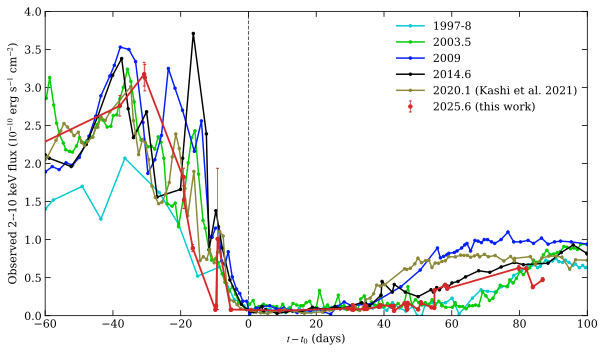
图注：Figure 2: The X-ray light curve of $\eta$ Carinae across periastron passages over the last six cycles, showing the minima. The data from 2025.6 is new from this work. The data for the 2020.1 cycle are from [ 39 ] , and the other cycles are adopted from [ 13 ] and references therein. The dashed vertical line marks periastron passage (phase 0).
对应解读：六轮极小比较
入选理由：统一轨道参照后查看2025.6的提前下降，避免与曝光间隙混淆。
来源与置信度：arXiv HTML；source verified；https://arxiv.org/html/2609.20046v1/eta_car_2_10kev_cycle_comparison.svg
强相关工作
海山二历次近星点X射线极小为碰撞风双星提供可重复比较，本文新增2025.6的多仪器记录，并与此前五轮相联系。它的价值在于检测周期间的不重复性，提醒固定轨道几何之外还存在风和流体状态变化。
基础理论包括碰撞风激波、光电吸收、辐射冷却及近星点可能的风抑制。相反解释的关键差别在温度、吸收和硬度如何共同演化，而非仅谁能画出一个亮度低谷。检索关键词为Eta Carinae 2025.6 X-ray minimum、colliding winds、periastron accretion。
同一事件 / 同类源线索：
相似工作：
（未提供）
基础理论 / 方法工作：
（未提供）
相反观点 / 张力线索：
（未提供）
10. Investigating the influence of the full-kinematics treatment for charged-current processes in binary neutron star mergers
- 来源：arXiv / astro-ph.HE
- 链接：https://arxiv.org/abs/2609.19922v1
- 作者：Ramon Jaeger, Henrique Gieg, Tim Dietrich
- 评分：novelty 7/10，importance 8/10，relevance 8/10，final 8.70/10
- 推荐理由：中子星并合弱相互作用率比较量化输运近似系统误差，联系抛射物与核合成；数值误差不能忽略。
中文题目：中子星并合弱相互作用率：物理修正要与分辨率误差比较
做了什么：同一双中子星设置中，弹性近似、NuLib和完整运动学率导致中微子与电子丰度差异；总抛射物差别多在分辨率误差内，不能把更精细微物理直接说成已显著改变并合可观测量。
为什么重要：弱反应改变冷却及中子/质子比例，从而影响抛射物核合成；检验近似的实际影响比只比较反应率表更接近观测问题。
理论 / 观测 / 仪器方法价值：作者将三种率纳入同一M1输运及IMEX积分，并用两种分辨率比较，使微物理差异与数值误差有可检验参照。
为什么应该关注：阅读千新星和中微子预言时，应同时审计输运闭合、反应率、流体漂移和网格分辨率，避免将其中一项归为唯一原因。
展开详细解读：文章讲解、背景、理论、重点章节、图表与相关工作
文章详细讲解
科学问题：更准确的弱反应率会怎样改变并合预言？
双中子星并合后的中微子既带走能量，也通过吸收改变物质的中子—质子比例，进而影响r过程核合成。简化弱反应率与完整运动学计算在局部可能差很多，但这种差异是否足以改变总抛射物或引力波，需要放进同一套流体与输运模拟中比较。
作者怎么做：三种反应率、两种分辨率
使用等质量双星和SFHo状态方程，演化到并合后约30 ms。Ruffert方案采用弹性近似和简化阻塞，NuLib加入反冲、弱磁等修正，HAO处理更完整运动学与介质效应。三者在同类M1矩输运和IMEX时间推进中运行，并各做高低分辨率，将微物理改变与数值误差放在同一尺度上。
关键结果：电子丰度比总质量更敏感
高分辨率下，相对Ruffert，NuLib与HAO的测地线抛射物质量约少11%和9%，但各方案自身的分辨率差约10%–22%，还不能认定质量效应已经收敛。较高电子丰度尾部的变化更有辨识度；核合成总体接近，质量数约90–125区间出现差异。引力波谱则在数值不确定度内难以区分。
局限和下一步：30 ms不能代替长期风演化
NuLib遗迹出现明显漂移，使盘温度和质量差异不容易全部归因于反应率。后处理核网络依赖各自流体轨迹，不能用一条平均电子丰度替代。结果提示长期盘风可能更受影响，但目前模拟时长不足以给出秒级出流或完整千新星光变结论。
关键结果是怎么做出来的
局部反应率先比较
论文先在给定热力学点比较能量相关不透明度，解释反冲、阻塞和介质修正如何改变发射吸收。局部谱差异是机制起点，不等于最终观测差异；流体运动和中微子输运会重新加权它们。
整体结果需对照分辨率
图4以颜色区分反应率、线型区分分辨率。若颜色间差异与同色两种线型之差相当，就不能忽略数值不确定性。11%和9%的抛射物差异正须放在10%–22%的分辨率差背景下理解。
电子丰度需看质量分布
图13比较各率下抛射物的电子丰度分布，图14直接比较同一率的不同分辨率。高电子丰度尾部即使只占部分质量，也可能改变某些核素产额；一张平面颜色图或一个均值无法展示这些尾部。
核合成与引力波不是同等敏感
SkyNet后处理把轨迹的温度、密度和丰度演化传播到最终核素，A约90–125的差异是具体可比较的结果。引力波主谱在当前误差内接近，说明不能笼统说“更精细微物理显著改变所有信使”。漂移和有限时长仍需后续控制。
展开背景、理论、公式、模型、章节和图表导读
背景知识
电子中微子在中子上吸收可提高电子丰度，反中微子在质子上吸收作用相反。出流速度决定受照时间，因此最终丰度并非只由一处反应率决定。
电子丰度表示每个重子对应的质子数比例，在电中性条件下也联系电子数。较低电子丰度提供更多中子用于r过程；因此即使总抛射质量接近，丰度分布的一小段变化也可能改变某些核素产额。
中微子既输送能量又改变成分，二者在并合后高温高密度介质中耦合。改进反应率不是简单把某个冷却系数统一乘一个数，因为不同能量、粒子味和热力学点上的修正可能方向不同。
全广义相对论流体、辐射输运和核反应包含极不相同的时间尺度。实际计算需近似和有限网格，因此评估新微物理时必须与分辨率、输运闭合和时间推进误差一起比较。
基础理论 / 方法脉络
M1只演化低阶辐射矩，仍需闭合角分布。完整运动学改善局部微物理但不等于精确输运。刚性源项用隐显积分稳定推进，数值误差必须与所研究差异同量级比较。
电子中微子吸收把中子变成质子，反中微子吸收做相反转化。局部平衡可直观说明电子丰度变化方向，但流体会运动和膨胀，受照时间有限，真实出流未必达到局部平衡。
M1方法演化辐射能量与通量矩，并用闭合关系近似更高角矩。更准确的局部反应率不自动消除角分布近似，因此不同误差来源不能混称为同一个“中微子精度”。
IMEX将刚性相互作用部分隐式处理、其他部分显式推进，以避免最短反应时间完全控制时间步。但稳定并不等于无误差，还需收敛检查及与流体守恒量的一致耦合。
公式与推导
背景反应链为
若仅作直观的局部吸收平衡估算，
则
这是解释方向的简化关系，并非原文完整M1系统；实际还含输运、发射、阻塞、流体运动和有限受照时间。
局部平衡为什么不一定在抛射物中实现？ 在上面的简化吸收模型中，设两种λ近似常数，则松弛时间为
方程可积分为
若物质离开受照区的膨胀时间更短，它便无法达到平衡值。这解释了为何仅比较某个热力学点的反应率，还不足以预测最终电子丰度；需要沿各流体轨迹积分输运和反应。
核网络后处理使用质量加权轨迹，而不是某一平面图上的颜色平均。示意地，平均电子丰度为
相同均值仍可能有不同尾部分布，因此图13、图14比单个均值提供更多核合成信息。微物理差异还应与数值误差并列，例如
本文高分辨率间约9%–11%的质量差，与同方案改变分辨率约10%–22%的差相当，这是一项量级比较，不是把数值误差看作已知高斯标准差后计算显著性。更精确的反应率不自动保证整体预言已经收敛。
模型拟合 / 应用方法
三方案、两分辨率构成受控比较，但NuLib漂移使部分盘和温度差异难以唯一归因于率。核网络后处理需使用各自轨迹。不要把绘图滚动平均当作额外数值收敛证据。
这类工作不是用观测点拟合一组最佳参数，而是控制初始双星、状态方程与数值方法后替换反应率。比较对象应同时配对相同时间和分辨率，否则混合了多个变化因素。
抛射物判据、提取半径和时间范围决定报告的质量。较晚到达提取面的慢物质可能尚未计入；因此30 ms结果不能直接与完整长期出流质量相等，也不能推断全部盘风已经结束。
核网络后处理使用各自轨迹并按质量加权，归一化核素图时还要注意是否将某一峰固定到太阳丰度。图中某段曲线更高可能是相对组成改变，不代表对应核素的绝对总产量必然更大。
重点章节 / 结果段落怎么读
微物理定义。 先比较Ruffert、NuLib和HAO分别包含哪些运动学、阻塞与介质项，再读给定热力学点的不透明度图，避免只按“新旧”给方法排序。
输运与数值设置。 确认SFHo、M1闭合、IMEX推进、初始双星和两种分辨率保持怎样的一致性；这决定比较能隔离多少物理效应。
抛射物与核合成。 先看质量差与分辨率差，再看图13、图14的电子丰度分布，最后读SkyNet核素结果。不能由一个平均电子丰度跳到全部产额。
限制。 NuLib遗迹漂移、约30 ms演化时间和未完成长期盘风，是理解温度、盘质量与远期可观测量时必须保留的边界。
建议重点查看的图表
图13：不同反应率的电子丰度。 观察高电子丰度尾部，而不仅比较总抛射物质量。
图14：分辨率对照。 先比较同一微物理的分辨率变化，再判断不同反应率差异是否可分辨。
其他应联读的诊断： 图1–3比较不同热力学点的不透明度，图4看中微子亮度，图6–9看温度和电子丰度，图13看抛射物丰度分布，表5查质量。
关键图表逐图导读
图13：反应率比较。 横轴是电子丰度，纵轴为相应抛射物分布，上下部分分别给不同分辨率。重点看高电子丰度尾部怎样变化，不能只比较峰的位置；质量归一化分布接近不意味着绝对总质量相等。
图14：分辨率比较。 这里将每种反应率的高低分辨率直接配对，是判断图13差异是否超过数值效应的控制图。若同一方法随分辨率改变已同样明显，应保留收敛限制。
图4及核素图17。 颜色与线型分别编码微物理和分辨率，NuLib漂移还会影响空间图。核素曲线按指定峰归一后，局部高低表示相对组成，不可无条件解释为绝对产额。
论文原图 / 可嵌入图片
图13
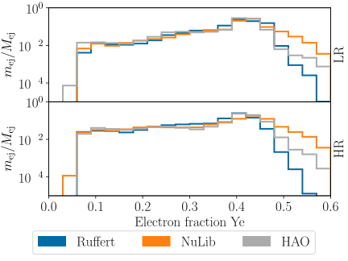
图注：Figure 13 : Fraction of ejecta binned by electron fraction. Comparing different opacities for both resolutions.
对应解读：不同反应率的电子丰度
入选理由：观察高电子丰度尾部，而不仅比较总抛射物质量。
来源与置信度：arXiv HTML；source verified；https://arxiv.org/html/2609.19922v1/ej_Ye.svg
图14
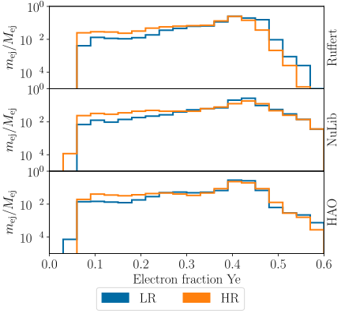
图注：Figure 14 : Fraction of ejecta binned by electron fraction. Comparing different resolutions for all opacities.
对应解读：分辨率对照
入选理由：先比较同一微物理的分辨率变化，再判断不同反应率差异是否可分辨。
来源与置信度：arXiv HTML；source verified；https://arxiv.org/html/2609.19922v1/ej_Ye_comp.svg
强相关工作
本文与双中子星并合辐射流体模拟、r过程核合成和千新星预言相联系，重点是检验弱相互作用近似如何传播到整体结果。它并不意味着局部反应率更准确后，输运角闭合或网格误差也同时消失。
基础阅读可围绕带电流发射吸收、M1矩输运、刚性源项IMEX积分和轨迹核网络展开。与引力波或千新星观测比较前，还需长期出流与辐射转移步骤；30 ms后的抛射物不能直接当作完整光变输入。检索关键词为full-kinematics neutrino rates BNS、SFHo M1 transport、SkyNet ejecta。
同一事件 / 同类源线索：
相似工作：
（未提供）
基础理论 / 方法工作：
（未提供）
相反观点 / 张力线索：
（未提供）
11. The rise and decline of a transient obscuration event in a moderately distant type-I quasar
- 来源：arXiv / astro-ph.HE
- 链接：https://arxiv.org/abs/2609.19910v1
- 作者：A. Akylas, A. Georgakakis, E. Pouliasis, I. Georgantopoulos, C. Ricci, M. Chira, A. Ruiz, E. M. Xilouris
- 评分：novelty 7/10，importance 8/10，relevance 8/10，final 8.70/10
- 推荐理由：跨22年X射线遮挡事件联动光学谱线，约束类星体暖吸收体位置与演化，具有明确机制检验。
中文题目：类星体22年遮挡事件：暖吸收成立，简单热风仍有张力
做了什么：2MASS J14302580+4159572在2002–2003年无明显遮挡，2005年出现软X射线吸收，2023–2024年减弱。内禀硬X射线较稳定支持视线吸收变化，全文同时指出热驱动风定量模型并不完全匹配。
为什么重要：长期遮挡的建立与消退比单历元异常更能限制吸收体几何及寿命；但稀疏档案数据不能提供连续18年的直接监测。
理论 / 观测 / 仪器方法价值：联合XMM、NuSTAR及Swift光谱，并与光学窄线变化比较，为类星体暖吸收体位置和周围环境影响提供线索。
为什么应该关注：需把观测到的吸收、模型推断的位置密度和风驱动机制分成不同证据层级，尤其不能只复述摘要的热风解释。
展开详细解读：文章讲解、背景、理论、重点章节、图表与相关工作
文章详细讲解
科学问题：类星体变暗是引擎变弱，还是云挡住了视线？
2MASS J14302580+4159572在2002–2003年没有明显遮挡，2005年软X射线被压低，2023–2024年又较弱地受吸收。这样的长期事件提供了区分本征连续谱变化与视线吸收的机会，但档案观测稀疏，不能把几个历元自动连成连续监测。
作者怎么做：多历元谱联合约束连续谱和吸收
作者比较XMM-Newton、Swift和NuSTAR资料，利用硬能段约束内禀连续谱，再用低能曲率限制电离吸收。Swift资料分为2008–2022和2023–2024两个时段叠加；SDSS与DESI光学谱提供较远区域响应线索。联合分析得到吸收柱约5×10²² cm⁻²、电离参数logξ约1.4。
关键结果：吸收变化比单纯本征变暗更自然
软端显著变化而内禀3–10 keV流量总体在误差内稳定，支持暖吸收体穿越视线。结合电离条件和响应时标，作者讨论宽线区外、亚秒差距至秒差距尺度、密度约10⁶ cm⁻³的物质。光学[OIII]4363和FeII变化可能说明较大区域受到影响，但其证据与X射线吸收并不等强。
局限和下一步：暖外流不等于热驱动风已验证
全文指出简单热风预期的电离参数偏高、柱密度偏低，与拟合值存在张力。因此应说暖电离外流的解释受到支持，而非热驱动机制被定量确认。下一步需要更密集、同时的光学与X射线监测，测出变化时标，减少距离、密度、覆盖率和电离状态间的退化。
关键结果是怎么做出来的
谱的形状比总亮度更有判别力
图5的多历元谱在低能端差异显著，硬能段却相对稳定。电离吸收会对特定能量产生不均匀衰减；纯连续谱归一化降低则更接近整体缩放。联合拟合利用这种形状差别区分两种原因，而不是仅凭一次低通量测量。
参数之间需要联合约束
柱密度增加、覆盖率改变或电离程度降低都能增强低能吸收，连续谱斜率也可部分补偿。拟合中应把这些参数与跨仪器常数一起审查。约5×10²² cm⁻²是模型下的柱密度，不是直接数出沿视线所有原子。
时间序列包含合并区间
图7的吸收柱随历元变化支持遮挡建立和减弱，但多年Swift合并谱表示区间平均。缺乏中间密集观测，不能给出云持续18年完整不变的结论。图6硬流量的误差条同样限制了“稳定”能达到的精度。
位置和机制是更下一层推断
电离参数联系光度、密度和距离，响应时标再提供额外限制。光学谱并非与X射线同时采集，[OIII]或FeII变化只能作相容线索。即使位置支持外流，具体的热、辐射或其他驱动方式仍需单独满足柱密度和电离预算。
展开背景、理论、公式、模型、章节和图表导读
背景知识
电离吸收体对不同能量光子的透明度不同。观测谱的软端变化可由柱密度、离化程度或覆盖变化造成；硬端及宽能谱有助限制本征连续谱。
类星体X射线连续谱通常来自吸积盘上方的高温冕，光学宽线与窄线则来自更远尺度。不同波段响应时标不同，长期档案可提供空间信息，但非同时数据会使因果联系难以确认。
暖吸收体是被辐射部分电离的气体，其透射不只由总柱密度决定，还取决于离子组成。电离程度改变可以在总气体量不变时改变谱形，所以不能把低能计数减少直接换算为更多物质。
遮挡事件给研究AGN外流提供一个几何切面，却不自动说明驱动机制。热驱动、辐射驱动或其他过程必须同时解释位置、密度、电离和质量流率；本文对简单热风的张力就来自这些联合要求。
基础理论 / 方法脉络
电离参数联结光度、密度和距离，单靠谱拟合不能独立测出后两者。需要额外时标或几何假设；光学窄线的延迟和变化提供线索，而不自动解除所有简并。
电离参数把电离光度除以密度和距离平方，表达每个粒子受到的辐射强度。相同电离参数可来自较近的高密度气体或较远的低密度气体，因此单次能谱不能独立给出距离。
柱密度是沿视线的密度积分，均匀近似下等于密度乘厚度；它约束一维穿透量而非三维云大小。结合响应时标可以限制密度，再推距离，但响应还受复合系数和相关离子种类影响。
部分覆盖模型允许部分连续谱未穿过吸收体，其低能泄漏可能与较低柱密度产生相似效果。连续谱斜率、电离度和覆盖率之间的退化说明为何硬X射线与多历元联合拟合具有价值。
公式与推导
背景定义为
故
仍依赖密度。透射模型可示意为
真实电离截面来自谱模型。位置和厚度推断须配合响应时标及几何，不能从一个柱密度直接推出距离。
如何把吸收谱推进到几何推断？ 若只有部分源面积被云覆盖，单屏透射应扩展为教学形式
fc为覆盖率。降低覆盖率和降低柱密度都可增加软光子，因此二者与电离度、连续谱斜率可能退化；实际拟合使用电离谱表和仪器响应，而不把σ当成能量无关常数。
假设离子变化主要受复合控制，特征时间近似为
αrec取决于温度和离子种类。测得响应时间后才可对密度提供约束，再代入电离参数求距离；稀疏历元往往只能给范围。若再假设厚度不超过径向距离，则
这一步明确使用几何假设，并非从柱密度直接测出位置。本文的亚秒差距至秒差距解释因此包含条件推断。简单热风若同时预期更高电离与更低柱密度，即使其距离大致相近，也不能说已满足全部能谱约束。
模型拟合 / 应用方法
XMM比较简单幂律和zxipcf乘幂律，2005年覆盖因子固定为1；联合历元处理银河吸收。Swift单次2keV估计若改变假设光子指数可移动约0.3dex，说明图上变化不能全当精密光谱。SED附录把非同时资料分成两个阶段。
先用无明显遮挡历元约束连续谱，再检查是否能以合理的吸收变化描述2005年谱的低能曲率。PN、MOS及不同任务需保留各自响应与交叉归一，不能把画在同一图上的谱当作同一探测器输出。
联合拟合时比较允许连续谱变化与允许吸收变化的模型，检查残差集中在哪些能量。参数误差和上限必须随历元记录；将多年弱观测叠加得到的精度不能误写成每个年份都具有同样精度。
物理位置推断应先列出光度、密度或响应时标假设，再传播到距离和厚度。若热风预测与拟合电离和柱密度同时不符，应保留张力，而不是因为位置大致合理就判定机制已确认。
重点章节 / 结果段落怎么读
多波段时间轴。 先看图2的实际观测历元，区分单次测量和多年合并，判断哪些变化可以直接比较、哪些只有时段平均信息。
X射线谱分析。 从2002–2005年的谱形差别进入电离吸收模型，再看所有历元联合拟合如何约束连续谱与柱密度，检查软端与硬端各自提供什么信息。
光学变化。 对照SDSS和DESI谱的标定与不同时刻，[OIII]及FeII变化属于补充线索，不能当作同时光学—X射线因果测量。
位置与驱动机制。 阅读电离、密度和时标假设后，再判断热风能否同时满足柱密度与电离参数；全文保留的定量张力不能省去。
建议重点查看的图表
图5：多历元X射线谱。 低能曲率的变化与高能连续谱联合约束暖吸收，不能把全部变暗归为本征变化。
图7：吸收柱随时间。 点间没有连续监测，误差和稀疏采样限制遮挡建立、持续和消退的时刻。
其他应联读的诊断： 图3比较早期谱，图4看2005年吸收模型，图5看全历元，图6看内禀硬流量，图2看时间采样。
关键图表逐图导读
图5：全部X射线谱。 不同颜色对应不同历元，模型同时处理连续谱与吸收。先看低能曲率改变而非只看纵轴高低；Swift多年叠加谱不能解释成每年都测到相同状态，也不能与单次XMM曝光视为同样时间分辨率。
图7：电离柱密度的时间变化。 点和误差来自联合模型推断，不是直接气体计数。稀疏点之间不代表柱密度连续线性变化，进入和离开视线的精确时刻仍有范围。
联读图6和图2。 硬流量在误差内稳定增强吸收解释，时间轴则提醒光学与X射线并非同步。两者合起来支持条件性的机制推断，而不是完整连续电影。
论文原图 / 可嵌入图片
图5
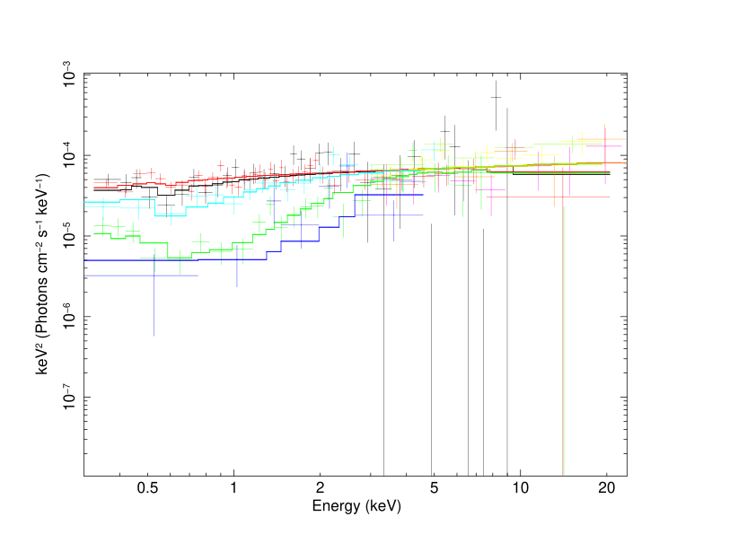
图注：Figure 5: Complete set of X-ray spectra for 2MASS J14302580+4159572.
The black, red, and green data correspond to the 2002, 2003, and 2005 XMM-Newton observations, respectively. The blue and cyan spectra correspond to the Swift /XRT observations from the 2008–2022 and 2023–2024 epochs. The solid curves show the best-fit tbabszxipcfpl model.
对应解读：多历元X射线谱
入选理由：低能曲率的变化与高能连续谱联合约束暖吸收，不能把全部变暗归为本征变化。
来源与置信度：arXiv HTML；source verified；https://arxiv.org/html/2609.19910v1/spec_all.svg
图7
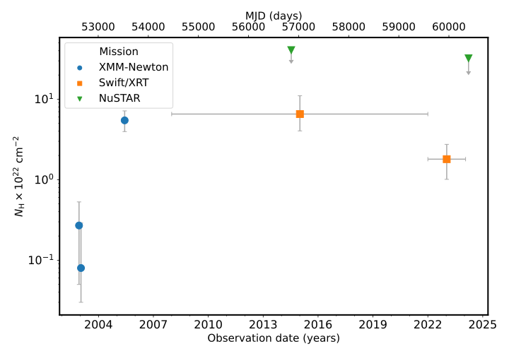
图注：Figure 7: Ionised column density as a function of observation epoch.
The values are inferred from the joint X-ray spectral analysis of Section 5.2 . The source shows significant variability in ionised absorption: during the first two XMM-Newton observations the obscuration is low, while in the third XMM-Newton epoch the ionised absorption increases. The enhanced obscuration persists through the first Swift /XRT spectrum (2008–2022) but appears to decrease in the stacked 2023–2024 Swift /XRT observations. The NuSTAR estimates are also shown as upper limits for completeness.
对应解读：吸收柱随时间
入选理由：点间没有连续监测，误差和稀疏采样限制遮挡建立、持续和消退的时刻。
来源与置信度：arXiv HTML；source verified；https://arxiv.org/html/2609.19910v1/nhvar.svg
强相关工作
这项工作与AGN暖吸收体、暂现遮挡事件及变脸AGN研究相邻，但本源的关键证据是软X射线吸收变化、硬连续谱相对稳定，而不是整个引擎停止工作。类比其他源时应先区分这两类变化。
基础脉络包括光电离平衡、部分覆盖谱模型、复合响应时标和盘风驱动。暖气体在视线上存在与某一种驱动机制成立是两个层级；简单热风的柱密度和电离张力说明需要更完整模型。检索关键词为2MASS J14302580+4159572、transient obscuration、warm absorber thermal wind。
同一事件 / 同类源线索：
相似工作：
（未提供）
基础理论 / 方法工作：
（未提供）
相反观点 / 张力线索：
（未提供）
12. Hydrodynamic Simulations of Eccentric Black Hole Encounters in AGN Discs
- 来源：arXiv / astro-ph.HE
- 链接：https://arxiv.org/abs/2609.19281v1
- 作者：Andrew Imai, Henry Whitehead, Bence Kocsis
- 评分：novelty 7/10，importance 8/10，relevance 8/10，final 8.70/10
- 推荐理由：483组AGN盘内偏心黑洞相遇模拟量化捕获窗口和气体储量效应，联系双黑洞形成；二维局部模型限制明确。
中文题目：AGN盘中黑洞捕获：小偏心率有利，高偏心率未必
做了什么：483组二维局部流体模拟显示，预先存在的偏心率并不单调抑制黑洞捕获。与盘厚径比同量级的小偏心会移动捕获窗口；远大于盘厚径比时常因气体储量减少而降低捕获比例。
为什么重要：AGN盘是双黑洞形成候选环境，初始圆轨道假设可能错过或夸大捕获窗口；检验偏心率与气体储量的共同作用，有助于改进种群模型中的形成条件。
理论 / 观测 / 仪器方法价值：研究同时追踪第一次近心几何、遭遇前气体储量和轨道能量损失，解释偏心对动力学与耗散的双重影响，并将全网格捕获比例与经验分类性能明确区分。
为什么应该关注：模拟网格中的分类成功率不等于宇宙双黑洞形成率；推广到真实AGN需考虑三维、冷却和盘参数分布。
展开详细解读：文章讲解、背景、理论、重点章节、图表与相关工作
文章详细讲解
科学问题：偏心运动一定妨碍AGN盘中黑洞成对吗？
两个恒星级黑洞在AGN盘里靠近时，周围气体可带走相对轨道能量，使原本飞掠的两者形成束缚对。常见直觉是偏心越大、相对速度越高，就越难捕获；本文检验这一单调图像，特别关注偏心同时怎样改变相遇几何和遭遇前保留的气体。
作者怎么做：483组局部流体遭遇
用Athena++在二维shearing box中联合演化黑洞和气体，改变初始径向间隔、一个黑洞的偏心率以及偏心相位。盘厚径比约0.005，偏心率测试到0.1。记录是否进入共同Hill球、第一次近心距离、气体储量、能量损失以及后续是否保持束缚，将“接近过”与“形成双星”区分。
关键结果：小偏心会移动捕获窗口
偏心率约等于一到两倍盘厚径比时，可在圆轨道未捕获的初始间隔上出现捕获，也可能使原来成功的组合失效；更大偏心常导致气体储量减少，捕获比例下降。第一近心足够近是有效经验指标，但贫气快速飞掠仍可能失败，因此只看相对速度或单一距离都不完整。
局限和下一步：参数扫描比例不是宇宙形成率
二维、局部、给定热力学和黏性设置限制外推。483个设置是选定的模拟网格，不是从真实AGN初始条件概率分布抽样；需要三维结构、冷却及真实盘参数分布，才能把捕获窗口转成双黑洞形成率。经验阈值也须在独立模拟中检验。
关键结果是怎么做出来的
遭遇前：气体条件已经随偏心改变
图2、图3记录进入强遭遇前Hill球中的气体。不同相位让黑洞以不同方式相对气体运动，从而积累或失去局部储量。因此第一次近心相同的两个系统，仍可能有不同耗散能力。比较时要对齐遭遇事件，不能混用任意时刻。
遭遇中：同时追踪近心和能量
图1展示接近、进入Hill球和近心通过的气体形态，并跟踪轨道能量。气体吸收能量后，两黑洞可反复靠近并硬化。距离很近只意味着相互作用强，不保证耗散足以克服初始相对能量及外部潮汐。
判据：92.7%的分母是什么
在110个进入共同Hill球的模拟子集中，近心小于0.1 Hill半径的简单分类给53个真阳性、49个真阴性和两类各4个误判，准确率为102/110。它不是483组的捕获比例，也不是92.7%的宇宙黑洞都会成对。图4的验证和图5的气体—距离散点应一起读。
网格：非单调性来自窗口移动
图7按间隔、偏心率与相位显示不同结果，图8再汇总比例。颜色区域的移动比一条平均曲线更能解释小偏心为什么有时促进、有时抑制捕获。将此结果推广为种群率之前，还需给每种初始条件以物理概率权重。
展开背景、理论、公式、模型、章节和图表导读
背景知识
Hill区域衡量双体引力相对中央黑洞潮汐的作用范围。气体既施加阻力，也可形成包层参与冲击耗散；偏心使相对速度和接触几何共同变化。
AGN盘可把恒星级黑洞约束在较薄区域，提高相遇机会；但两体仅靠保守引力近距离飞掠通常不能永久捕获，需要气体耗散、第三体或其他机制带走能量。本文关注气体提供的耗散。
Hill半径衡量一对小质量天体相对于中心超大质量黑洞潮汐的影响范围。进入Hill球表示二者相互作用重要，但仍可能再次飞离；不能把这一几何条件直接当作已形成稳定双星。
偏心运动改变相对速度，也改变相遇相位和与局部气体的相对运动。因此较大速度并非唯一因素：遭遇前是否积累足够气体以及实际近心多近，都参与决定耗散能否形成束缚对。
基础理论 / 方法脉络
捕获需相对轨道能量足够下降并在潮汐环境中保持束缚。近心距离预测耗散强度，气体储量控制可交换的能量；只用一项无法保证跨盘参数适用。
shearing box将盘的一小块在共转系中展开，保留局部剪切、科里奥利和潮汐效应，避免模拟整个AGN盘。它适合研究单次遭遇过程，但不会自动包含全局迁移、盘长期结构或完整黑洞种群。
能量被气体带走后，双星结合能可变得更负；随后外潮汐仍可能影响稳定性。因此论文使用自身的束缚与退出判据，牛顿二体负能量只给基础直觉，不能在三体背景中无条件替代它。
偏心率与盘厚径比的比值提供有用尺度：相对气体速度增大可能削弱局部储量。该趋势仍依赖气体热力学、维度与冷却，不能把某个临界e/h看成所有AGN盘通用常数。
公式与推导
牛顿二体背景能量为
局部Hill尺度概略为
原文图1给出自身采用的束缚阈值；教学式只解释能量和潮汐尺度，不能替代其判据。经验分类在指定子集的准确率为
它是这组模拟参数内的描述性性能，不是天体捕获概率。
捕获需要损失多少能量？ 对孤立二体示意，若相遇前能量为Epre，气体带走正的能量ΔEgas，则
只有损失足够大才可形成负二体能量，但AGN中心潮汐还引入额外稳定条件，因此必须使用论文给定的束缚判据。偏心运动相对气体的速度尺度可粗略写为
这里vK是局部开普勒速度，h是盘厚径比；该尺度估计解释偏心较大时气体储量为何可能下降，不是每个相位的精确相遇速度。最终的种群捕获率形式上需对初始条件加权：
Icap在该设置捕获时为一，否则为零；p描述自然界初始条件分布。本文网格只采样这些条件，等权求成功比例相当于一个人为采样权重，不能直接给宇宙形成率。92.7%的近心分类准确率另有其110次遭遇子集分母，它衡量分类器在这批模拟的性能，与上式的天体发生概率完全不同。
模型拟合 / 应用方法
二维、绝热黏性、固定背景密度温度和黏性限制外推。比较相位时要对齐遭遇事件，不能将不同演化时刻的气体储量误当偏心效应。窗口面积还不是按真实初始条件加权的形成率。
比较同一径向间隔下不同偏心相位，记录首次进入2 Hill半径、首次近心和首次退出等事件，使用这些事件对齐气体质量及能量。按绝对模拟时间直接比较可能把阶段差异误当参数效应。
经验分类器采用近心距离和气体质量等诊断量，应明确训练、验证及适用子集。准确率会随成功与失败比例变化，最好同时报告两类误判，而不只给一个百分比。
将参数网格的捕获率用于种群模型时，需要另给初始间隔、偏心和相位分布，再积分加权。当前扫描中的每一格只是一个实验设置，等权计数并不意味着自然界中各设置同样常见。
重点章节 / 结果段落怎么读
方法与初始条件。 先理解局部shearing box、二维气体、盘厚径比及b、e、偏心相位的定义，确认参数网格并非真实种群随机抽样。
遭遇前储量。 图2、图3显示偏心如何先改变Hill球气体，读这一段后再进入近心耗散，才能理解为何相近距离的遭遇结果不同。
捕获诊断。 图1看演化过程，图4、图5看分类与反例，明确110个Hill球遭遇子集和全部483组的区别。
全网格与外推。 图7、图8检验捕获窗口的非单调变化，讨论部分再列出三维、冷却与真实初始分布的缺口，避免直接将网格比例作为形成率。
建议重点查看的图表
图1：气体耗散与捕获过程。 沿时间顺序看两黑洞接近、气体结构与能量损失，建立动力学图像。
图7：全参数网格结果。 区分未进入Hill球、飞掠与捕获；捕获窗口随偏心率与相位共同移动。
其他应联读的诊断： 图1看捕获时序与能量，图2、3看遭遇前气体质量，图4、5看捕获窗口及近心分类。
图4的分类验证： 检查110次进入Hill球的子集如何定义，并区分真阳性、真阴性及两类误判。描述性准确率不等于全部483组的捕获比例。
关键图表逐图导读
图1：按时间顺序看一次捕获。 气体密度快照对应接近、进入Hill球及近心等阶段，下方动力学量帮助把形态变化与能量损失联系。密度较亮并不自动意味着耗散足够，应一起看后续是否仍保持束缚。
图7：全参数结果。 横纵坐标是初始间隔和相对盘厚度的偏心，不同面板为偏心相位。灰色未进入Hill球、飞掠和捕获属于不同结果，不能把所有非灰色都算捕获。小偏心移动成功窗口，高偏心并非单纯将窗口等比例缩小。
图4、图5：控制误读。 分类器的有效分母是进入Hill球的子集，气体贫乏的近距离失败案例说明距离阈值不是绝对物理定律。
论文原图 / 可嵌入图片
图1
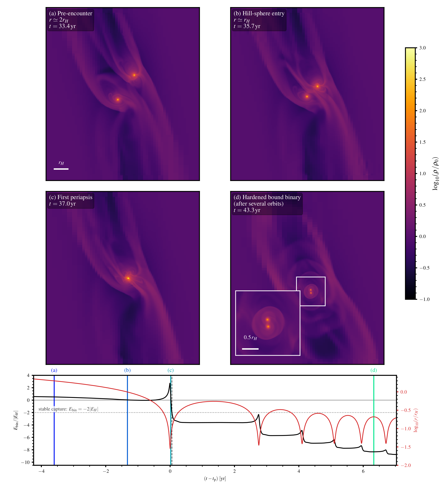
图注：Figure 1 : Hydrodynamic chronology of the fiducial eccentric capture with $b=1.9$ , $e=0.01\simeq 2h$ , and $\phi_{e}=90^{\circ}$ . The upper panels show the gas density at (a) the first approach at $r\simeq 2r_{H}$ , (b) entry into the mutual Hill sphere, (c) first periapsis, and (d) the fifth apoapsis. Gas density is shown relative to the ambient value $\rho_{0}$ . The inset panel shows the binary orbital energy $E_{\rm bin}/|E_{H}|$ (the black line) and the BH separation $\log_{10}(r/r_{H})$ (the red line). Time is measured relative to first periapsis. Coloured vertical lines indicate the times of the snapshots above. The black dashed line indicates the energy threshold value $E_{\rm bin}=-2|E_{H}|$ . After the capture, repeated periapsis passages produce further impulsive hardening of the binary.
对应解读：气体耗散与捕获过程
入选理由：沿时间顺序看两黑洞接近、气体结构与能量损失，建立动力学图像。
来源与置信度：arXiv HTML；source verified；https://arxiv.org/html/2609.19281v1/fiducial_morphology_extended.png
图7
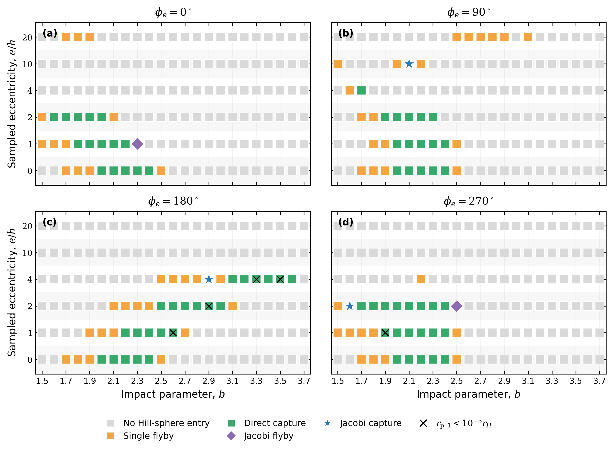
图注：Figure 7 : Encounter outcomes across the full parameter sweep as a function of the initial separation $b$ and eccentricity relative to the disc aspect ratio $e/h$ . Each panel corresponds to a different eccentric phase angle $\phi_{e}$ . Grey squares denote systems that do not enter the mutual Hill sphere. Orange squares denote single flybys. Green squares denote direct captures. Blue stars identify Jacobi captures. Purple diamonds are Jacobi flybys. Black crosses mark the five systems satisfying $r_{\rm p,1}<10^{-3}r_{H}$ . The orange single flyby class includes the three transiently bound systems. The circular sequence is repeated in each panel to provide a common reference. Eccentricity and phase angle alter both whether the BHs enter their mutual Hill sphere and the range of initial separations that lead to capture.
对应解读：全参数网格结果
入选理由：区分未进入Hill球、飞掠与捕获；捕获窗口随偏心率与相位共同移动。
来源与置信度：arXiv HTML；source verified；https://arxiv.org/html/2609.19281v1/capture_window_map_v2.png
强相关工作
AGN盘内气体捕获是解释部分双黑洞形成的候选机制，与纯引力多体动力学、孤立双星演化等通道不同。本文主要扩展了偏心初态对气体储量和遭遇几何的影响，不是在所有形成通道之间做观测模型选择。
基础方法涉及Hill问题、剪切盒流体、气体耗散和双星硬化。结果向真实种群迁移时，需要另外引入盘迁移、偏心激发与阻尼及初始相位分布。检索关键词为AGN disc black-hole capture、eccentric encounter、Hill-sphere gas；原文的成功/失败判据比单个经验准确率更值得复用。
同一事件 / 同类源线索：
相似工作：
（未提供）
基础理论 / 方法工作：
（未提供）
相反观点 / 张力线索：
（未提供）
13. Collective flavor conversion in dense neutrino plasmas
- 来源：arXiv / astro-ph.HE
- 链接：https://arxiv.org/abs/2609.19256v1
- 作者：Damiano F. G. Fiorillo
- 评分：novelty 7/10，importance 8/10，relevance 8/10，final 8.70/10
- 推荐理由：致密中微子等离子体味波综述梳理集体不稳定性与数值动力学，对超新星和并合输运有基础价值。
中文题目：致密中微子集体味转换：从单粒子振荡到味波
做了什么：综述以中微子等离子体和flavomon准粒子语言组织集体味转换，讨论快、慢及碰撞相关不稳定性，并连接量子动力学与准线性理论。它不是一项新的天体中微子观测发现。
为什么重要：超新星和并合内部尺度层级极大，直接解析全部味动力学代价高；识别集体自由度有助于构建可计算近似。
理论 / 观测 / 仪器方法价值：将不同不稳定机制放在发射、吸收与波增长的框架中比较，便于看清线性增长和非线性饱和并非同一问题。
为什么应该关注：适合为并合输运补背景；不能将一种理想角分布的线性不稳定直接转写为真实系统的固定味交换比例。
展开详细解读：文章讲解、背景、理论、重点章节、图表与相关工作
文章详细讲解
科学问题：密集中微子为什么不能逐个独立振荡？
超新星和并合内部的中微子密度极高，彼此的相干弱相互作用形成自洽折射场，一个粒子的味演化取决于整个分布。这样会出现集体增长和味转换，影响电子味吸收及物质成分。本文是一篇理论综述，任务是组织不同机制，而不是宣布新的天体中微子探测。
作者怎么做：用等离子体味波统一表述
作者将集体激发描述为味波或flavomon准粒子，以介质中的发射、吸收和色散关系讨论快、慢及碰撞相关不稳定性。这里的准粒子是许多中微子共同运动的有效自由度，不是新发现的基本粒子。角分布、能谱和碰撞率决定哪些模式会增长。
关键结果：增长机制可以统一比较，但饱和还要另算
图4以有无角交叉的代表分布对照色散关系，说明小扰动能否增长；图6说明碰撞导致的谱宽差异也可能造成净增长。图7进一步比较QKE数值演化后的准稳态与准线性预测，展示了从线性模式到非线性反馈的下一层问题。
局限和下一步：发现不稳定性不等于知道最终味比例
线性复频率只回答微小扰动是否增长、增长多快；当扰动变大，背景分布本身改变，原色散关系不再足够。综述仍留下平均场有效性、空间结构及输运闭合问题。应用到真实超新星时，需要把角能分布和碰撞项一并交代，不能直接规定一个固定的“完全味交换”比例。
关键结果是怎么做出来的
先区分真空振荡与集体响应
单粒子真空振荡由质量差和能量给出尺度，致密背景还贡献随分布变化的折射项。正是这一自洽反馈，使不同方向中微子的扰动能够耦合成集体模式；把每条轨迹完全独立演化会丢失该机制。
线性分析：看复频率而不只看实部曲线
在约定扰动随exp(−iωt)变化时，ω的正虚部对应指数增长。图4的分支和插图角分布必须对应着读，才知道哪种背景支持不稳定。某个对称示例成立的交叉条件，不能无条件推广到所有几何和碰撞设置。
碰撞不是永远只起阻尼作用
图6用不同味或粒子/反粒子的频率展宽解释发射与吸收失衡。某些条件下净效应可促进模式，而不只是抹平相干性。关键是比较具体分布和碰撞率顺序，不能从“碰撞更强”直接判断转换一定更弱。
非线性终态：用QKE检验近似
图7从初始角分布出发，比较QKE时间平均准稳态与准线性理论的预测。能解释增长率不代表能解释最终分布；饱和需要模式反过来改变粒子分布。它是构建宏观输运闭合的依据之一，尚不是通用于全部超新星背景的代数配方。
展开背景、理论、公式、模型、章节和图表导读
背景知识
普通真空振荡由质量差驱动；致密系统还含物质势和中微子自相互作用。角分布、能谱、碰撞和空间输运使问题非线性，多种尺度难以同时直接计算。
真空中的中微子混合由质量本征态与味本征态不一致产生。超新星内部还存在物质和中微子背景，使传播哈密顿量随环境变化；在高密度区，自相互作用可支配集体演化尺度。
集体味转换可改变电子味中微子与反中微子的占比，而它们直接参与改变质子、中子数量的带电流反应。因此味动力学即使不显著改变总能量，也可能影响物质电子丰度和核合成。
flavomon是描述介质集体激发的语言，类似用声波量子描述许多粒子的共同运动。采用这一表述不等于增加了标准模型之外的新基本粒子；它的价值在于组织增长、吸收与非线性反馈。
基础理论 / 方法脉络
从密度矩阵方程线性化可得到味波色散关系。模式增长只在线性小扰动期有效，后续粒子分布被波改变，需反馈与非线性饱和处理。准粒子描述是集体模式语言，不是发现新基本粒子。
密度矩阵对角元表示各味占据，非对角元描述味相干。对流项传播角分布，哈密顿量交换相干与占据，碰撞项改变分布和相干；只保留其中一项可能完全改变稳定性结论。
将背景附近的小扰动分解为平面波得到色散关系，实频率决定相位传播，虚部决定增长或衰减。求解时必须说明是实波数还是其他边界设定，以及角分布和空间对称性。
当模式长大到改变背景时，线性展开失效。准线性理论试图保留波与粒子分布的缓慢反馈，但适用性要与完整QKE对照；不能将最快线性增长时间直接当作全部味达到平衡的时间。
公式与推导
从密度矩阵到线性增长，再到反馈。 以下使用常见量子动力学约定解释综述，不替代原文各节完整的味、粒子及反粒子符号。密度矩阵ρ沿轨迹满足
其中C为碰撞项，H包括
前两项分别对应真空混合与普通物质折射。平均场下，自相互作用的典型结构为
角因子说明不同传播方向的耦合强度不同，密度矩阵出现在H中则说明分布会反过来决定自身演化。线性分析写
把它代回方程并仅保留一阶项，得到小扰动的本征值或色散问题。在此符号约定下，若ω=ωR+iκ，则
代表增长。图4所讨论的就是这类模式结构；它不告诉我们增长到多大停止，因为当扰动不可忽略时，背景ρ₀也会改变。
一个理解准线性反馈的示意平衡是
Nk表示模式占据，发射与吸收率依赖粒子分布。这是物理图像式，具体归一和闭合需使用原文，不能当作通用的数值求解器。模式增长改变分布，分布再改变两种率，才可能接近饱和。图7以QKE终态检验相应近似，说明“存在正增长率”与“最终达到某个电子味比例”是不同层次的结论。
模型拟合 / 应用方法
这是一篇理论综述，主要比较色散关系、量子动力学与近似理论，不存在统一观测样本或发现sigma。评估应用时需列明角/能量分布、碰撞项、平均场和空间对称性，再检查近似有效范围。
这篇综述的“拟合”更多是理论预测与数值演化的对照。先列出背景角谱、能谱、粒子/反粒子比例及碰撞率，再求相应模式，避免将来自不同假设的色散曲线直接比较。
验证不稳定时应检查改变分辨率、空间范围和种子扰动后增长率是否稳定；验证饱和则需比较终态分布及守恒关系。两类验证针对不同阶段，通过前者不代表后者已可靠。
宏观输运应用需要将微观味转换反馈到发射吸收率，同时保留能量和角度信息。若以固定交换比例近似，应说明其校准范围；本文图7提供的是特定背景检验，而非所有环境的统一闭合。
重点章节 / 结果段落怎么读
定义和集体自由度。 先从密度矩阵及中微子等离子体进入flavomon语言，辨清准粒子、基本粒子与味相干的关系，避免把术语当作新粒子发现。
不同不稳定机制。 按角谱、能谱和碰撞条件分别阅读色散分析，图4与图6各自对应特定背景；一个例子中的条件不能覆盖所有机制。
非线性与准线性理论。 图7将QKE演化后的分布与近似比较，重点看反馈和饱和怎样进入，而非只看线性最快增长率。
开放问题。 最后读平均场、空间结构和宏观闭合的限制，明确哪些结论可以进入超新星输运，哪些仍是理想背景下的机制分析。
建议重点查看的图表
图4：角分布与色散关系。 比较有无角交叉的例子；增长率来自复频率，不能等同最终转换比例。
图7：非线性饱和。 QKE终态与准线性近似的比较说明线性增长之后仍需动力学闭合。
其他应联读的诊断： 图4看角交叉与模式增长，图5看能谱和光锥附近分支，图6看碰撞机制，图7比较饱和近似和QKE。
图6的碰撞机制： 比较粒子与反粒子谱宽及碰撞率顺序，辨认净发射与吸收改变的原因。这是特定机制示意，不能按曲线面积推算真实超新星的最终味比例。
关键图表逐图导读
图4：色散分支与角谱。 左右比较无角交叉的稳定示例和有交叉的不稳定示例，插图给出背景分布。应同时识别实频率与增长率，不能把所有弯曲分支都理解为不稳定；结论以图中假设为条件。
图7：初态到准稳态。 黑色初始角分布与橙色QKE演化后时间平均状态不同，另有近似理论预测。先比较变化发生在哪些角度，再看近似是否捕捉整体重分配；时间平均并不意味着系统完全静止。
图6：碰撞机制。 不同谱宽造成发射与吸收不平衡，说明碰撞可能参与驱动。它是机制示意图，不能从线条宽度直接读出某个真实超新星的转换率。
论文原图 / 可嵌入图片
图4
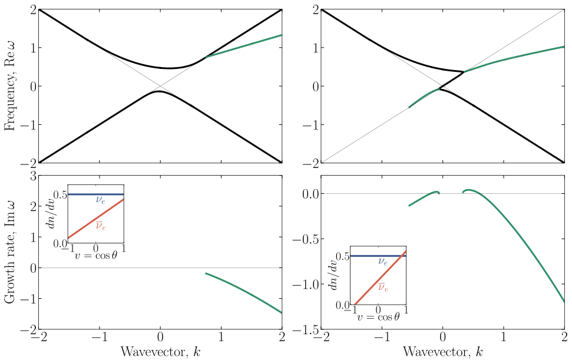
图注：Figure 4: Dispersion curves of longitudinal flavomons moving along the axis of symmetry, for a stable case without angular crossing (left) and an unstable case with angular crossing (right). The angular distributions of $\nu_{e}$ and $\overline{\nu}_{e}$ are shown in the inset. Branches with a nonzero growth rate (positive or negative) are shown in green.
对应解读：角分布与色散关系
入选理由：比较有无角交叉的例子；增长率来自复频率，不能等同最终转换比例。
来源与置信度：arXiv HTML；source verified；https://arxiv.org/html/2609.19256v1/DispersionRelationFullFast.svg
图7
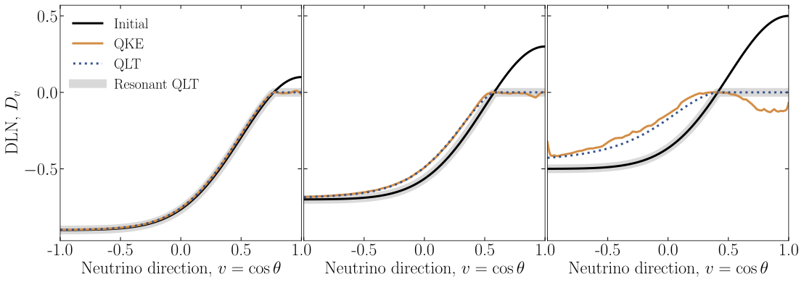
图注：Figure 7: Saturation of fast flavor instability in a homogeneous neutrino background; the initial angular distribution (black) is evolved numerically solving the quantum kinetic equation (QKE) until it reaches a quasi-steady state averaged over time fluctuations (orange). We compare this final state with the predictions of resonant QLT and QLT. Figure adapted from Ref. [ 66 ] .
对应解读：非线性饱和
入选理由：QKE终态与准线性近似的比较说明线性增长之后仍需动力学闭合。
来源与置信度：arXiv HTML；source verified；https://arxiv.org/html/2609.19256v1/FigQLTReview.svg
强相关工作
综述将集体中微子味动力学与等离子体波理论联系起来，用发射、吸收和色散语言组织不同机制。这种联系帮助比较快、慢及碰撞相关不稳定性，但不能抹去各机制对背景角谱、能谱与碰撞率的不同要求。
基础阅读包括量子动力学方程、平均场自相互作用、线性稳定性和准线性饱和。与并合输运论文相联系时，应将味转换对电子味吸收的反馈单独处理，不能直接假设完全味平衡。检索关键词为collective neutrino flavor conversion、flavomon、QKE quasi-linear saturation。
同一事件 / 同类源线索：
相似工作：
（未提供）
基础理论 / 方法工作：
（未提供）
相反观点 / 张力线索：
（未提供）
14. Evolution and mergers of eccentric white dwarf binaries encountering intermediate-mass black holes
- 来源：arXiv / astro-ph.HE
- 链接：https://arxiv.org/abs/2609.20338v1
- 作者：Adarsh Pandey, Aryabrat Mahapatra, Tapobrata Sarkar
- 评分：novelty 7/10，importance 7/10，relevance 8/10，final 8.35/10
- 推荐理由：三维流体计算展示中等质量黑洞扰动对白矮星双星并合的非单调影响；参数和轨道覆盖有限。
中文题目：偏心白矮星双星遇IMBH：更深遭遇不一定更快合并
做了什么：三维SPH模拟显示IMBH可显著加快偏心白矮星双星演化，但存在较深遭遇反而留下两个束缚核的例外。潮汐强度与双星内部相位共同决定结果。
为什么重要：质量转移双星处于周期性近心接触状态，外部潮汐可改变其角动量、偏心率和并合时机，不能只按遭遇强弱单调排序。
理论 / 观测 / 仪器方法价值：孤立对照与两种遭遇深度使加速效应可比，同时明确核燃烧仅作后处理诊断，没有把高温物质自动当作爆轰。
为什么应该关注：对暂现源前身建模，应区分动力学并合、满足快速燃烧条件和真实爆炸，这三步需要不同证据。
展开详细解读：文章讲解、背景、理论、重点章节、图表与相关工作
文章详细讲解
科学问题：外部潮汐越强，白矮星双星就越快并合吗？
偏心白矮星双星在每次内近心可发生质量转移；若它又经过中等质量黑洞（IMBH），外潮汐会改变内部轨道和角动量。直觉上更深遭遇应更具破坏性，但潮汐施加时的内部相位也重要。本文用三维流体模拟研究并合、幸存和质量抛射之间的非单调关系。
作者怎么做：四个质量比乘两种遭遇深度
初始内偏心率固定0.6，比较质量比0.2、0.3、0.4、0.7和两种穿透参数βᵇ=0.5、1.5，共八个遭遇模型，并与孤立双星对照。双星质心沿逆行抛物外轨道经过Schwarzschild IMBH。SPH跟踪两核、质量交换、解束缚物质及内外轨道角动量。
关键结果：多数提前并合，但最轻供体出现反例
八个遭遇中七个并合；q=0.2、较深βᵇ=1.5的情形保留两个束缚核，内偏心率降到约0.4。同一质量比的较浅遭遇却并合，说明外部扰动不仅拉扯双星，也可改变下一次内部近心的接触条件。部分深遭遇还出现暂时的内轨道角动量翻转。
局限和下一步：满足快燃烧条件不等于已经爆炸
q=0.7模型中约15%–17%的He来源物质满足后处理快速燃烧条件，但模拟未耦合核反应网络，不能说已经发生氦爆轰。参数仅覆盖特定初始偏心、轨道方向与相位，尚不能推出天体事件率。后续需要更广初始条件、数值收敛及含核网络的动力学验证。
关键结果是怎么做出来的
用孤立模型识别外潮汐作用
孤立偏心双星依靠连续的近心质量交换缓慢演化；遭遇组常在第二次内部近心附近更快并合。只有与孤立对照比较，才能将加速与原本不稳定的质量转移区分。外部近心与内部相位的相对时刻也是对照条件的一部分。
用核分离区分并合与两个幸存核心
跟踪束缚核中心与密度峰提供交叉检查，避免将被拉出的密度丝看成第三核心或直接当作两核并合。q=0.2深遭遇的幸存曲线必须单独看，它正是反驳“深度越大必然越快合并”的证据。
用角动量解释非单调演化
图8的内部角动量带符号，过零表示轨道方向暂时翻转；外质心轨道角动量相对变化只有几倍10⁻⁴，并不意味内部受到的扰动很小，因为两个轨道的角动量尺度不同。图7再显示这些动力学变化如何伴随质量流失。
燃烧诊断：比较时标而不宣布爆轰
后处理在密度—温度空间比较氦燃烧与动力学时间，选出可能快速放能的物质。它未模拟反应反馈、火焰传播和冲击耦合，因此候选比例不能直接转成超新星概率。温度定义和分辨率检查同样影响边界附近的粒子分类。
展开背景、理论、公式、模型、章节和图表导读
背景知识
近心质量转移可带走或重新分配轨道角动量，使双星偏心和半长轴演化。外部黑洞潮汐不只压近两星，也可能改变其角动量方向和能量。
白矮星依靠电子简并压力支撑，质量转移可显著改变供体结构和轨道。偏心双星在近心短暂接触、远心分离，质量交换呈脉冲式，不能完全照搬圆轨道稳定Roche溢流的直觉。
IMBH对双星整体的引力主要控制质心外轨道，其差分引力才拉伸内部双星。内部周期、外部近心经过时间及两者相位关系共同决定能量和角动量交换，遭遇深度并不是唯一控制量。
合并可能产生高温物质，但爆轰还要求核反应、声学传播和流体膨胀竞争。看到温度升高或某些粒子满足快速燃烧条件只是后续核动力学研究的起点，不等于模拟已产生可观测爆炸。
基础理论 / 方法脉络
遭遇强度是潮汐尺度与外近心的比例，内部相位决定相同潮汐力如何做功。比较时需分别观察核分离、内角动量和质心轨道，不能把外轨道近似不变误当内部演化弱。
质量比影响Roche几何、供体响应和内轨道能量储量；偏心率决定近心接触强度。本文固定初始偏心率后改变质量比与外部穿透参数，所得趋势只能解释这片参数空间，不能替代全种群分布。
外潮汐可同时改变半长轴和偏心率。更深遭遇若降低下一次内近心的接触程度，就可能暂时保护双星，这说明“潮汐强”与“马上并合”不是同一命题。要看轨道量如何联合变化。
内部角动量可与外轨道、恒星自旋和流出气体交换。单独追踪两核轨道量不会守恒，必须把其他通道一并列入；有符号角动量过零还涉及轨道方向而非仅大小下降。
公式与推导
牛顿背景关系为
本组 $e=0.6$ 给
对应原文图3的初始内近心尺度。角动量满足
（质量固定的二体近似）；质量交换和外潮汐时不能直接当守恒量。快速燃烧后处理比较核反应时间和动力学时间，只是潜在条件筛选，不能替代含核网络的爆轰模拟。
外潮汐为什么能改变下一次内部接触？ 在牛顿二体近似下，内部比轨道能量与比角动量分别满足
因而
外潮汐同时改变能量和角动量，所以不能只根据一个量变大或变小判断下一次近心。质量转移和流出还改变两核质量，以上式子只能作为瞬时轨道诊断；实际SPH轨迹不等同固定质量的保守椭圆。
若快速燃烧后处理使用局部动力学时间，可写作
ρ为密度，t3α为氦燃烧特征时间。满足不等式表示核放能可能赶上流体调整，不代表已经形成自持爆轰。是否爆炸还取决于反应网络、温度估计、空间梯度和传播过程。本文He候选物质比例来自这种条件筛选，未耦合燃烧反馈；将15%–17%直接解释为爆炸效率会超出模拟证据。
模型拟合 / 应用方法
四质量比、两遭遇强度、固定内偏心和特定轨道方向是受限网格；相位与强度同时变化使个别例子不能唯一分离因果。更广相位扫描和核反应耦合是外推前提。
先以相同质量比建立孤立对照，比较核分离、束缚质量和轨道量，再加入外部遭遇。识别核心的方法必须一致，避免潮汐尾和密度峰变化造成假并合或假幸存。
对齐外近心时刻有利于比较潮汐作用，对齐内部轨道周期有利于比较质量转移。两种归一化服务于不同问题；读图时需检查横轴采用哪一种，不能把相同横坐标误当同一动力学阶段。
后处理燃烧筛选应报告温度估计、时间尺度判据和分辨率敏感性。即使候选质量比例相近，也需含核网络计算检验能量释放是否在流体膨胀前形成自持传播，之后才能讨论爆炸光变。
重点章节 / 结果段落怎么读
初态与控制实验。 先列出四个质量比、固定内偏心率0.6、两种穿透参数和外轨道方向，并查看孤立双星对照；这些限制决定结果适用范围。
核识别与并合。 检查束缚核中心与密度峰两种距离诊断，特别是q=0.2深遭遇幸存情形，避免被多数合并曲线遮蔽。
质量与角动量。 图7、图8将解束缚物质和内外轨道交换联系起来，读清横轴时间归一与内部角动量符号。
附录燃烧和分辨率。 温度估计、He候选时标条件及加密模拟用于评估诊断敏感性。由于没有核反应反馈，不能在这一段直接得出爆轰或光变。
建议重点查看的图表
图7：解束缚质量演化。 横轴按外轨道近心时刻归一化，先对齐扰动阶段再比较不同遭遇。
图8：内外轨道角动量。 有符号的内部角动量与外轨道交换联系起来，解释更深遭遇不一定更快合并。
其他应联读的诊断： 图3孤立对照，图4核分离演化，图5看物质形态；表3提供相位时序，避免只按β排序。
图4的双核距离： 对照束缚核中心与密度峰的识别结果，特别查看q=0.2深遭遇中的幸存曲线。潮汐尾的亮峰不能直接当作独立恒星核心。
关键图表逐图导读
图7：解束缚质量。 横轴以外部近心时间归一，值为一标记质心经过IMBH近心。先对齐潮汐作用阶段，再比较深浅遭遇；“脱离两核”与“彻底逃离IMBH”也不是相同绑定定义，必须沿论文的质量分类阅读。
图8：内外轨道角动量。 左图内部角动量带符号，初始逆行从负值开始，过零表示方向变化；右图外质心量归一方式不同。外部相对变化小并不否定内部显著扰动，因为二者绝对尺度不同。
联读核心分离与燃烧附录。 幸存双核需要动力学轨迹支持，快速燃烧候选需要密度—温度条件支持；二者都不能仅由一幅漂亮密度图判定。
论文原图 / 可嵌入图片
图7
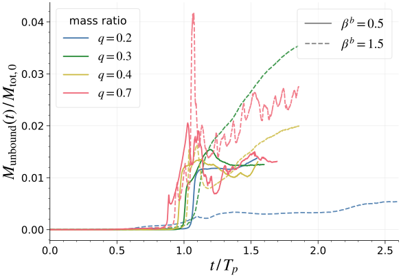
图注：Figure 7: Instantaneous mass unbound from both stellar cores, $M_{\rm unbound}/M_{\rm tot,0}$ , for $\beta^{b}=0.5$ (solid) and $1.5$ (dashed). Time is normalized by the outer pericenter time $T_{p}$ (Table 3 ), so $t/T_{p}=1$ marks
the CM passage through the IMBH pericenter.
对应解读：解束缚质量演化
入选理由：横轴按外轨道近心时刻归一化，先对齐扰动阶段再比较不同遭遇。
来源与置信度：arXiv HTML；source verified；https://arxiv.org/html/2609.20338v1/munbound_b.svg
图8（原图第1面板）
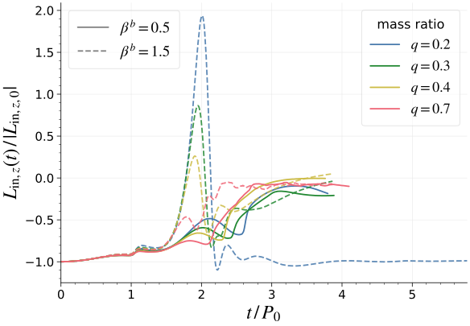
图注：Figure 8: Angular momentum evolution for $\beta^{b}=0.5$ (solid) and $1.5$ (dashed). Left: Signed $z$ -component of the internal orbital
angular momentum, $L_{{\rm in},z}/|L_{{\rm in},z,0}|$ , which spans $1.54\times 10^{43}$ – $3.03\times 10^{43}\ {\rm kg\,m^{2}\,s^{-1}}$ across the models. The initially
retrograde orbit therefore starts at $-1$ . The $x$ - and $y$ -components remain negligible
( $|L_{{\rm in},x}|,|L_{{\rm in},y}|\sim 10^{-5}|L_{{\rm in},z,0}|$ ),
so the sign of $L_{{\rm in},z}$ directly traces the sense of the
coplanar internal orbit. Right: $L_{\rm out}^{\rm CM}/L_{\rm out,0}^{\rm CM}$ for the binary CM orbit
about the IMBH. $L_{\rm out,0}^{\rm CM}$ spans $2.25\times 10^{17}$ – $1.53\times 10^{18}\ {\rm m^{2}\,s^{-1}}$ across the models. Time is in units of $P_{0}$ .
对应解读：内外轨道角动量
入选理由：有符号的内部角动量与外轨道交换联系起来，解释更深遭遇不一定更快合并。
来源与置信度：arXiv HTML；source verified；https://arxiv.org/html/2609.20338v1/Lin.svg
图8（原图第2面板）
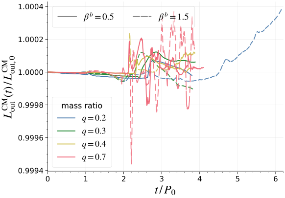
图注：Figure 8: Angular momentum evolution for $\beta^{b}=0.5$ (solid) and $1.5$ (dashed). Left: Signed $z$ -component of the internal orbital
angular momentum, $L_{{\rm in},z}/|L_{{\rm in},z,0}|$ , which spans $1.54\times 10^{43}$ – $3.03\times 10^{43}\ {\rm kg\,m^{2}\,s^{-1}}$ across the models. The initially
retrograde orbit therefore starts at $-1$ . The $x$ - and $y$ -components remain negligible
( $|L_{{\rm in},x}|,|L_{{\rm in},y}|\sim 10^{-5}|L_{{\rm in},z,0}|$ ),
so the sign of $L_{{\rm in},z}$ directly traces the sense of the
coplanar internal orbit. Right: $L_{\rm out}^{\rm CM}/L_{\rm out,0}^{\rm CM}$ for the binary CM orbit
about the IMBH. $L_{\rm out,0}^{\rm CM}$ spans $2.25\times 10^{17}$ – $1.53\times 10^{18}\ {\rm m^{2}\,s^{-1}}$ across the models. Time is in units of $P_{0}$ .
对应解读：内外轨道角动量
入选理由：有符号的内部角动量与外轨道交换联系起来，解释更深遭遇不一定更快合并。
来源与置信度：arXiv HTML；source verified；https://arxiv.org/html/2609.20338v1/Lout_COM.svg
强相关工作
论文与偏心白矮星质量转移、层级三体潮汐扰动和白矮星并合暂现源研究相联系。其独特例子是更深遭遇反而保留双核，说明内部相位和角动量交换可改变简单的单调直觉。
基础工具包括SPH、瞬时轨道要素、束缚核心识别和核燃烧时标诊断。与Ia型超新星或氦爆轰模型比较时，需要补上含核网络的反应流体计算；仅看热粒子比例不能完成这一步。检索关键词为eccentric white-dwarf binary IMBH encounter、tidal angular momentum exchange、helium burning diagnostic。
同一事件 / 同类源线索：
相似工作：
（未提供）
基础理论 / 方法工作：
（未提供）
相反观点 / 张力线索：
（未提供）
相关但非 HE 的重要论文
1. On the Probability Distribution and Null-hypothesis Testing of Cross-correlation for Light Curves in Active Galactic Nuclei
- 来源：arXiv / astro-ph.IM
- 链接：https://arxiv.org/abs/2609.19672v1
- 作者：Yan-Rong Li, Jian-Min Wang
- 评分：novelty 9/10，importance 9/10，relevance 9/10，final 9.00/10
- 推荐理由：红噪声且不规则采样AGN互相关零假设检验直接适用于多波段光变显著性；短时序自相关估计仍限制校准。
中文题目：AGN互相关显著性：用自相关决定有效样本量
做了什么：独立红噪声光变也容易出现较高互相关。论文利用各自自相关函数估计相关系数分布，并以模拟检验不规则采样，提供固定时延与搜索峰值的零假设检验。
为什么重要：常用FR/RSS主要给时延的不确定度，并不自动回答两条光变是否可能独立；这一缺口影响多波段因果解释。
理论 / 观测 / 仪器方法价值：把红噪声记忆时间映射到有效样本量，并单独讨论多时延搜索的最大值，有明确的可移植方法价值。
为什么应该关注：适用于AGN多波段和暂现源相关研究；时间序列很短时，自相关模型估计会失真，不能机械套正态sigma。
展开详细解读：文章讲解、背景、理论、重点章节、图表与相关工作
文章详细讲解
科学问题：两个独立红噪声光变为何也会高度相关？
AGN光变有长时间记忆，相邻观测点不是独立抽样。两个互不相关的随机过程也可能碰巧同时缓慢上升或下降，产生很高的互相关峰。常用FR/RSS给时延不确定度，却不自动检验“两条曲线本来是否独立”。本文专门构造这个零假设的概率分布。
作者怎么做：从自相关推有效信息量
从平稳独立序列出发，对相关系数作Fisher变换，以两条光变的自相关函数乘积估计方差，定义有效样本量。随后用规则、不规则、间断和季节间断的模拟检验近似，并进一步处理在多个时延中搜索最大峰的情况。Mrk335和Fairall9的示例展示如何应用于实际数据。
关键结果：固定时延与最高峰需要不同显著性
红噪声越强，有效样本量相对观测点数越小，零假设下相关系数的分布越宽；套白噪声公式会高估显著性。即使固定时延的分布已校准，在许多时延中挑最大值还会增加偶然高峰。论文把这两个修正分开，而不是把某条峰附近的时延误差当作发现概率。
局限和下一步：短光变的自相关本身也不可靠
当观测总时长接近DRW阻尼时间，无法稳健恢复长期相关尺度，渐近近似和参数拟合偏差可能相互作用。理论分布需用与实际采样、间断及噪声相符的模拟校准。即使相关通过检验，也只能支持统计关联，辐射区几何和因果方向仍需要额外物理建模。
关键结果是怎么做出来的
第一层：为何点多不等于信息多
若一百个点只覆盖几个缓慢起伏，它们并不等价于一百次独立试验。图1比较自相关时间与方差、有效样本量，直观显示加密采样和延长基线的作用不同。决定相关偶然性的是有效信息，而不是数据文件中的行数。
第二层：用模拟校验固定时延分布
图3–7在不同采样条件下比较模拟直方图和理论分布。重点不只是某次模拟出现了什么峰，而是大量独立光变对在预先指定时延下的分布是否匹配；间断和季节窗口可能改变有效重叠样本。
第三层：最高峰有试验效应
若事先不知道时延，报告的是搜索范围内最大相关值，其零假设会向更高值移动。相邻时延箱高度相关，有效独立试验数m不能直接填网格数量。图2研究这个极值分布，应用时需匹配真实搜索范围及采样。
第四层：检查自相关模型是否被数据约束
图9的长DRW时间示例暴露短基线偏差。某些近似误差恰好抵消，不表示方法对所有短光变可靠。图10中的真实源案例应同时检查阻尼时间、采样窗和峰值试验修正；通过检验之后再讨论混响或辐射机制。
展开背景、理论、公式、模型、章节和图表导读
背景知识
红噪声有长期记忆，两个互不关联源也能恰好同时上升或下降。插值增加可计算的配对点，并不会凭空创造独立样本；不规则采样和窗口会改变相关峰分布。
多波段AGN时延常被用于研究吸积盘和宽线区尺寸，但一个高相关峰首先必须通过独立性零假设检验。测量“峰在哪里”和判断“是否存在可信相关”是两步工作，后一项不能由前一项的误差条替代。
红噪声意味着低频变化占较多功率，一段光变会在相邻时间保持相似趋势。有限基线中两个独立过程都上升或下降并不罕见，因此观测点越密不代表随机巧合就必然越少。
地面季节间断、任务调度和不同波段采样会改变互相关的可用重叠区间。插值可以定义相关函数，却不能凭空创造独立数据，所以每个时延的零假设宽度都可能不同。
基础理论 / 方法脉络
Fisher变换将有界r映射到实数z，零假设下近似正态。有效样本量由自相关决定。搜索多个相关时延产生试验效应，时延格数不能直接等同独立试验数。
Fisher变换把有界相关系数映射到整条实轴，通常使其分布更接近正态。这里方差还由两个过程的自相关决定；若直接使用独立样本的方差公式，红噪声的记忆会被忽略。
自相关乘积的积分或求和衡量两个过程共同维持长趋势的能力，乘积越宽，有效独立片段越少。这个图像也解释了延长总基线与在同一基线内加密采样为何不能等价互换。
搜索最大相关峰涉及极值统计：即使每个时延都有相同的单点分布，多次尝试也更容易遇到高峰。相邻时延共享大量数据，试验数应是有效独立数量而非横轴网格点数。
公式与推导
原文式(2)为
式(5)–(7)给出有限序列修正：
红噪声自相关为正时，有效样本量减小。固定时延可比较 $z/\sigma_z$；若m个检验真正独立，最大值CDF具有
最后一式是解释试验效应的背景关系；真实ICCF时延高度相关，原文的有效m及近似分布须经模拟校准，不能直接填网格数量。
怎样从分布得到可报告的概率？ 在零假设的Fisher变量近似正态且均值为零时，预先指定时延的单边概率可写为
Φ是标准正态累积分布。若事先检验正负相关的绝对幅度，则需改成相应双边概率，不能看过符号后再选择更小的p值。对m个真正独立、相同分布的试验，最大值的概率对应
最后一步仅在小概率时适用。真实时延箱不独立，所以有效m必须校准，不能用插值网格总数代入。自相关修正中的有限序列权重(1−k/n)反映大滞后时可组成的配对更少；不规则采样还需相应处理重叠与权重。观测长度接近相关时间时，自相关估计不稳，理论分布也随之不确定。实用做法是将实际采样窗、噪声、拟合自相关及峰值搜索都带进模拟，用所得分布核对解析近似，而不是仅计算一个形式上很精确的sigma。
模型拟合 / 应用方法
先拟合或估计各自自相关，再按实际窗口验证零假设。原文模拟包括一万对光变示例，并单列阻尼时间接近总时长的失败区域。对于非平稳耀发或短基线，应增加模型敏感性检查，不能假定一套DRW自动足够。
先对各光变分别估计自相关或相应随机过程参数，检查总基线是否足以约束相关时间。若阻尼时间贴近或超过基线，应展示参数不确定性，而不是只代入一个精确最佳值。
为模拟采用真实观测时间、间断和测量误差，独立生成两条光变，再重复相同的插值、去趋势与时延搜索。比较固定时延和最大峰的分布，才能分别校准两个问题。
应用后同时报告相关显著性、时延估计和后者的不确定度。进一步的盘尺寸或混响模型仍需传递函数及物理假设；统计相关即使可靠，也不能单凭一个峰唯一确定驱动方向。
重点章节 / 结果段落怎么读
解析分布。 从Fisher变换、自相关乘积和有效样本量开始，确认平稳、独立零假设与有限长度近似各处在哪里，不要直接跳到p值公式。
采样检验。 图3–7分别比较规则、不规则及有间断光变，底部模拟直方图用于检验理论分布，而非只展示某次随机峰。
搜索最大值。 图2处理多时延峰值，需区分有效独立试验数和网格数量；选择搜索范围也是检验定义的一部分。
失效边界与应用。 图9检验长相关时间、短基线的困难，图10给真实源示例。PyAT实现可帮助复现，但软件输出仍以输入随机过程与采样模型为条件。
建议重点查看的图表
图1：自相关与有效样本量。 采样更密不必带来等比例独立信息；红噪声相关时间影响零假设宽度。
图10：实际光变应用。 固定时延和全范围峰值检验分开看，FR/RSS时延误差不是独立性检验。
其他应联读的诊断： 图3–7比较采样情况；图8看有效样本量；图9展示长记忆短基线偏差；图10看Mrk335与Fairall9应用。
关键图表逐图导读
图1：方差与有效样本量。 横轴改变相关时间，不同曲线对应不同采样间隔，模拟点用于检验解析关系。相关时间变长后，即使观测点很多，独立信息也减少；不能用更密采样的点数直接套白噪声公式。
图10：实际应用。 Mrk335、Fairall9及模拟例子依次给出光变和相关诊断。颜色区域描述零假设相关值分布，不是峰位置的FR/RSS误差带；固定时延与搜索最高峰的概率要分开读。
图9：适用边界。 若阻尼时间长到无法由数据充分约束，拟合自相关和理论分布可发生偏差。某些误差相互抵消不能作为普遍可靠性的证明。
论文原图 / 可嵌入图片
图1
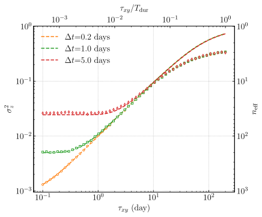
图注：Figure 1: The variance $\sigma_{z}^{2}$ and $n_{\rm eff}$ versus $\tau_{xy}$ for different sampling intervals $\Delta t$ .
The dashed lines show the variance $\sigma_{z}^{2}$ calculated with Equations ( 5 ) and ( 9 ).
The points show the variance $\sigma_{z}^{2}$ calculated from simulations, where the light curves are assumed to be
regularly sampled with a time duration of $T_{\rm dur}=200$ days (see the text in Section III ).
The right vertical axis shows $n_{\rm eff}$ and the top horizontal axis shows the ratio $\tau_{xy}/T_{\rm dur}$ .
对应解读：自相关与有效样本量
入选理由：采样更密不必带来等比例独立信息；红噪声相关时间影响零假设宽度。
来源与置信度：arXiv HTML；source verified；https://arxiv.org/html/2609.19672v1/fig_sigma2.svg
图10（原图第1面板）
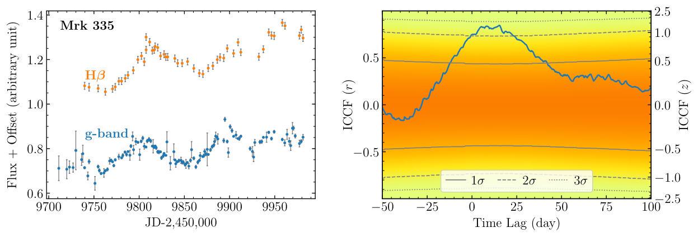
图注：Figure 10: Application of null-hypothesis testing to realistic AGN light curves of Mrk 335, Fairall 9, and mock data from top to bottom
panels. The top panels show
the g-band and H $\beta$ light curves of Mrk 335 from [ 19 ] ; the middle panels show the Swift UVW2- and U-band light curves of Fairall 9 form [ 11 ] ; the bottom panels show the mock data
generated by combining the H $\beta$ light curve of Mrk 335 and a segment of the UVW2-band light curve of Fairall 9 (with a time shift).
The right panels show the ICCFs (blue solid lines) and the probability distributions of $r$ or $z$ (colored heat maps). The 1 $\sigma$ , 2 $\sigma$ , and 3 $\sigma$ confidence regions of the heat map are highlighted by grey solid, dashed, and dotted
lines, respectively.
对应解读：实际光变应用
入选理由：固定时延和全范围峰值检验分开看，FR/RSS时延误差不是独立性检验。
来源与置信度：arXiv HTML；source verified；https://arxiv.org/html/2609.19672v1/fig_mrk335.png
图10（原图第2面板）
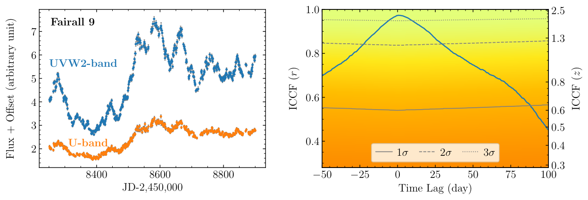
图注：Figure 10: Application of null-hypothesis testing to realistic AGN light curves of Mrk 335, Fairall 9, and mock data from top to bottom
panels. The top panels show
the g-band and H $\beta$ light curves of Mrk 335 from [ 19 ] ; the middle panels show the Swift UVW2- and U-band light curves of Fairall 9 form [ 11 ] ; the bottom panels show the mock data
generated by combining the H $\beta$ light curve of Mrk 335 and a segment of the UVW2-band light curve of Fairall 9 (with a time shift).
The right panels show the ICCFs (blue solid lines) and the probability distributions of $r$ or $z$ (colored heat maps). The 1 $\sigma$ , 2 $\sigma$ , and 3 $\sigma$ confidence regions of the heat map are highlighted by grey solid, dashed, and dotted
lines, respectively.
对应解读：实际光变应用
入选理由：固定时延和全范围峰值检验分开看，FR/RSS时延误差不是独立性检验。
来源与置信度：arXiv HTML；source verified；https://arxiv.org/html/2609.19672v1/fig_f9.png
图10（原图第3面板）
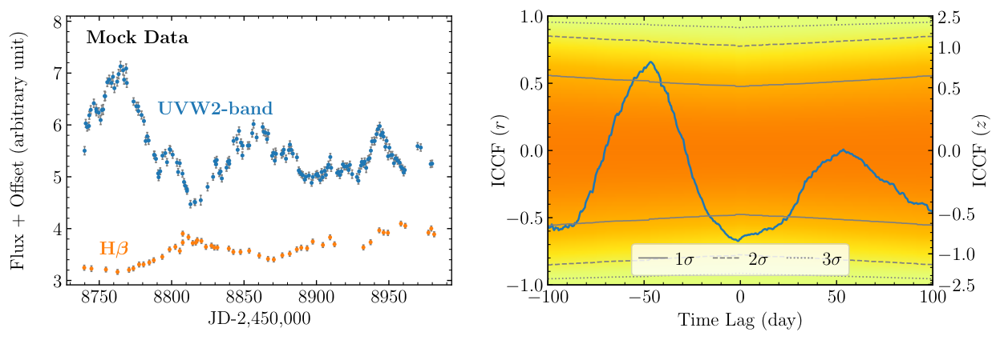
图注：Figure 10: Application of null-hypothesis testing to realistic AGN light curves of Mrk 335, Fairall 9, and mock data from top to bottom
panels. The top panels show
the g-band and H $\beta$ light curves of Mrk 335 from [ 19 ] ; the middle panels show the Swift UVW2- and U-band light curves of Fairall 9 form [ 11 ] ; the bottom panels show the mock data
generated by combining the H $\beta$ light curve of Mrk 335 and a segment of the UVW2-band light curve of Fairall 9 (with a time shift).
The right panels show the ICCFs (blue solid lines) and the probability distributions of $r$ or $z$ (colored heat maps). The 1 $\sigma$ , 2 $\sigma$ , and 3 $\sigma$ confidence regions of the heat map are highlighted by grey solid, dashed, and dotted
lines, respectively.
对应解读：实际光变应用
入选理由：固定时延和全范围峰值检验分开看，FR/RSS时延误差不是独立性检验。
来源与置信度：arXiv HTML；source verified；https://arxiv.org/html/2609.19672v1/fig_mix.png
强相关工作
本工作与AGN混响映射和多波段时延分析直接相关，但补充的是独立性零假设，而非取代FR/RSS或传递函数拟合。前者检验偶然相关，后两者主要估计时延及物理响应，回答的问题不同。
基础理论来自平稳随机过程、自相关导致的有效样本量和极值试验修正。与简单白噪声显著性比较时，应特别检查基线能否约束AGN的DRW相关时间。原文给出PyAT实现，检索关键词为AGN cross-correlation null hypothesis、Fisher transform effective sample size、PyAT。
同一事件 / 同类源线索：
相似工作：
（未提供）
基础理论 / 方法工作：
（未提供）
相反观点 / 张力线索：
（未提供）
说明
评分由 LLM 给出初评，再由本地阈值策略过滤；IACT、TeV 伽马射线和高能中微子天文学按重点方向处理。